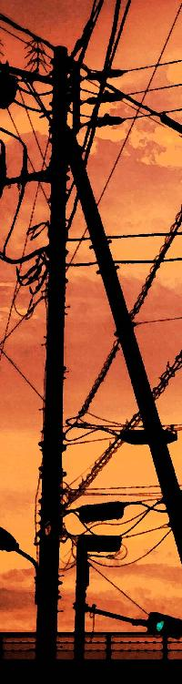
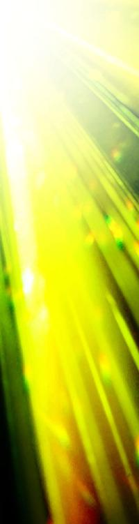

| キミはキメラ 畜生共のパレード (StarGazer) | |
| hoshimi12（星見拾弐） | |
| (2017) | |
キミはキメラ 畜生共のパレード
hoshimi12（ほしみじゅーに）
序章
鳥の卵は歪な楕円形だ。
魚や蛙の卵が球体なのに対し、どうしてそんな形状なのか。
転がしてみればわかる。
鳥の卵はその場でくるくる円を描くだろう。
水中と違い、陸上では落下の危険が常に伴う。鳥は進化の過程で卵を形状を最適化したのだ。
そしてここにある「卵」も、歪な楕円形をしていた。
だが鳥のものにしては異常に大きい。世界最大のダチョウの卵が十数センチメートルなのに対し、これはゆうに一メートルを超えている。
殻は無色透明。中身が透けて見える。人工的にカロテノイドで染められた卵黄などはなく、すでに生物としてのカタチがあった。
卵がぺきぺきと割れていく。
卵をぺきぺきと割っていく。
「ぅ、ぁぁ」
薄暗い洞窟の中。
少女は――イソラは孵化した。
日光は乏しく、目を開けるときに眩しさは感じなかった。
（さむい）
外界での初めての知覚。
身体のぬめりが風でひんやり冷える。
しかしガマンだ。殻を自力で壊していき、外へ這いだしていく。
「ぁ、ぁ」
言葉はまだ覚束なかった。ごほごほと咳き込み、体内の液を吐きだしていく。
立ち上がろうとするが、それもまた覚束ない。
思考だけが明瞭で、胸の奥で言葉を紡いでいた。
（くらい）
ここには母親も父親もいない。
いや、どこにもいやしない。
代わりに闇の中からジッと「何か」がイソラを見つめていた。
闇の存在は恐る恐るの様子で近づいてくる。敵か味方か、まだ判断しかねているのだろう。
イソラは意志を示す必要があった。
「ぁ～、あ～」
喉の調子を確かめる。
発声。知識としてはすでに頭に入っている。
あとは実践あるのみ。
「また、せたな。同胞」
案外にうまくしゃべれた。
だが、
「ぐっ......」
卵の粘液が喉にからまったらしい。イソラはまたごほごほと咳き込み、その場にうずくまった。
寒さと息苦しさ。外界とはこれほど過酷な環境なのか。
と、やがて手の甲に、くすぐったい感触があった。
「......ありがとう。きみは勇敢でやさしいな」
イソラはそれの頭をそっと撫でる。
まもなく暗い洞窟に歓声があがった。
闇は一斉にイソラへ群がり、最初のそれがそうしたように、卵の粘液を丹念に舐めとりはじめる。イソラは代えがたい温もりを感じた。
すぐさま厚手の毛布が運ばれてくる。
毛布には端末が添えられており、短文が表示されていた。
『おはようございます 我らが女王』
イソラは微笑み、頷いた。
端末を手にとる。
ウェラブルコンピューターのようだ。腕に宛がうと、自動でぴったりフィットした。時刻と各種ステータスが表示されている。今は朝六時。季節は夏だが、洞窟内はひんやり涼しい。
ピピッと電子音が鳴る。
端末で測定を行ったらしい。体温や脈拍数などが表示される。正常値よりやや高めだが、特に問題はなさそうだ。
「望みは、わかってる。ボクらはずっと繋がっていた。卵の中からずっと視ていたよ。それに――感じていた。きみたちの怒り、哀しみ、虚しさ、歯痒さ」
彼らは歓声を止め、広い耳を傾ける。
「さぁっ、変革の時だ！」
イソラは毛布にくるまりながら立ち上がる。
まだ身体は重いが、力強い姿を見せる必要がある。拳を握りしめ、天井の空気孔に向けて高く突き上げた。
「皆、これまでよく耐えてきた！ ここからだ。弱肉強食、虐げられるべき存在はどちらか、優れたる存在はどちらか、矮小な『ニンゲン共』に教えてやろうじゃないか。――約束しよう。この戦い、必ず我々が勝利する！」
再び歓声があがる。
それはとても長く、とても興奮したものだった。
イソラは歓声を背に、天井から差し込む光のもとへ向かった。そこには先日の雨で水たまりが出来ていた。
イソラは水に映りこむ己の姿をみた。
ヒトの形。
しかしまぎれもなく、ただの人間とは違っている。
コブのような「角」が二本。耳は広く、長い「尻尾」が垂れている。
（なるほどな）
イソラはそれを受けいれた。
どっちつかずの姿だろうが、同胞は喜んでくれている。それだけでよかった。
（今に見てろよ、地上の汚物共）
イソラは胸の奥で呟く。
人間への憎しみを反芻する。
ヒトの姿こそしていれど、違う生き物なのだと再確認する。
「そして九條芹彦。貴様は、貴様だけは――」
イソラは拳を握りしめ、空を睨んだ。
第一章

九條芹彦は淫らな感触で目を覚ました。
「ふぅ......はぁっ」
眼前に少女の蕩けた表情があった。
粘り気ある涎が頬を伝っている。少女は芹彦の覚醒を見るや、薄く微笑み、またその行為を続けていく。
「おはようございまふ、若様」
少女は舌を挿れながら、ついでのように挨拶した。
甘美な味がする。抗いがたい「麻薬」だ。
「おい......なにやってんだ」
芹彦はやんわりと少女を押しやる。
少女は「あんっ」と艶やかな声をあげ、ベッドに尻餅をついた。演技がかった不満顔をみせつつ、口元の涎をぬぐっている。
「朝のご奉仕ですが、なにか？」
少女は悪びれもせず答え、恥ずかしげもなく豊満な胸を揉みしだき、芹彦に見せつける。
「ヒナ、勝手に部屋に入るなって言っただろ」
「ふふっ。鍵が開いておりましたので、そういう合図なのかなと」
少女、八重比奈子は首を傾げ微笑む。
頭には大きなリボン、腕には白いロンググローブ、脚には白いニーソックス、他にはなにも身につけていない。扇情的な姿だ。誘うことしか考えていない。
「朝っぱらだぞ」
「よいではないですか。今日は学園も休みですし」
「そういうことじゃない」
「若様も、そろそろ頃合いだったのでしょう？」
比奈子はベッドを這い、再び手足をからめてきた。手足のすべすべした布の感触と、汗ばんだ肉体の感触が混じり合う。顔が間近に近づく。
「......申し訳ありません。我慢、できないのです」
一転、比奈子は悲痛な表情を浮かべる。そうしてまた舌を挿れてくる。涙を流しながら、悦び、甘美で淫らな感触を貪る。
「このまま一日中、繋がりつづけてみませんか？」
透明な糸を伸ばしつつ比奈子は伺ってきた。
「もっと......もっと深いところまで、二人混ざり合うんです。そうすれば私は、今よりもっと、『強く』なるかもしれません。彼女とはまた違ったベクトルで。それは若様も、お望みのことでしょう？」
獣のような息遣いに変わっていく。比奈子は右手を秘所に伸ばし、小刻みに動かし、水っぽい音を微かに響かせる。身体をくねらせ、胸の先端を芹彦の胸板に擦りつける。
「私は若様の〝眷属〟なのですから。どうぞお好きなだけ、犯してくれて構わないのです」
比奈子は妖艶な笑みで告げる。
眷属。従う者。
その言葉に反して、あまりに挑発的だった。
「今さらなにを怖れているのですか？ 我々はもう、正常ではない。狂っているのです。そしてそれを、誇りにおもうべきです」
比奈子は芹彦の耳元に口を近づけていく。ふぅ、と息を吹きつけたあと、囁く。
「――――どうか、若様の中にあるドロドロとした〝魔〟を、私にお吐き出しくださいませ」
比奈子は純白の手を、芹彦のそれに添えた。前後にゆっくりと動かしはじめる。従者のようなことを言いながら、芹彦の感じる表情を伺い、支配する側の笑顔をこぼしている。
「あんまり調子に乗るなよ」
芹彦は鋭く言った。
瞬間ぴたりと、淫らな手が止まる。
比奈子は目を見開き、魚みたいに口をぱくぱくさせ、硬直していた。動かないのではない、動けないのだ。みるみるその表情が赤らみ、涎をだらしなく溢れさせていく。
「ぼくのことは、ぼくが一番よくわかってる。おまえに言われるまでもない」
芹彦はその首筋を指で撫でた。すると比奈子はびくんと跳ね、がくがく痙攣しはじめた。達したのだ。
「おまえを、殺したくないんだ」
芹彦は痙攣し続ける比奈子の頬を撫でる。比奈子は身動きもとれず達しながら、涙を流し、なぜだか嬉しそうだった。激しい快楽に浸れたからか、芹彦には理解できない充足を感じられたからか。
まもなくだった。
静寂の寝室に、訪問者があった。
「スズ？」
キィと寝室のドアが開き、振り向いた先に小柄な少女が立っていた。
少女は赤いウサミミ頭巾を深くかぶり、暗い表情を覗かせている。
「入るとき、ノックするように言ったよね」
「......」
「スズ」
「......あいつらが、見当たらないんだ」
スズカは弱々しく呟いた。
芹彦と比奈子の様子については特に気にならないらしい。情事中の乱入はもはや日常茶飯事だった。
芹彦はベッドから降り、スズカに近づいていく。
「夜の間、ずっと探してたのか？」
「うん......」
スズカはこくりと頷く。
「居なくなってからたったの数日だろ？ どうせまたすぐ出てくるよ」
「でも......こんなコトはじめてなんだ」
「アレはもう使ってみた？」
「うん。でもダメだ......届かないところにいるか、なにかがジャマしてるみたいで」
「わかった。ひとまず出ようか」
「うん」
芹彦はベッドの比奈子に目配せする。比奈子はやれやれと首を横に振り、布団をかぶって拗ねたように背を向けた。
「じゃあ行こうスズ」
芹彦はスズカの手をとって寝室を出ていく。
高い塀で閉ざされた広い庭へ出る。
ここは九條邸。芹彦たち「ヒト型実験動物」のために用意された「箱庭」だった。
衣食住は与えられ、将来も約束されている。どこまでも安定したレールが続き、なにも心配する必要のない閉鎖世界。
芹彦はそんな世界が死ぬほど憎かった。
だが――逃れるなんてできないのだ。
生命の根底を人工的に弄くられ、生きる術を限定されている。専門施設での定期的な検査と、メンテナンスが必須だった。生きるためには、ここで暮らし続けるしかない。
だから芹彦は、ポジティブに発想を転換した。
逃げる必要なんてない。
出ることができないのなら、今居る世界そのものを、都合よく作り変えてしまえばいいんだ。
そして芹彦たちは、それを可能にしうる「力」を秘めている。
「スズ、いつココに引っ越すんだ？」
アトリエ（離れ屋）から主屋のテラスに移動し、芹彦は話題を振った。
「ぼくはココを活動拠点にするつもりだ。母さんや父さんも、いずれ追い出す。クジョウを手に入れる。そしてきっと――――いや必ず、キミが生きやすい世界にしてみせるから。そんな帽子で、自分を隠さないで済む世界に、してみせるから」
芹彦はスズカの小さな手を両手で包み込んだ。
スズカは頬を染めながらも、首を横に振った。
「ありがとう。でもごめん。あいつらが......戻ってくるかもしれないし。それに植物園のあの家は、かあさまと暮らした思い出の場所だから」
芹彦たちを創り出した大複合企業「クジョウ」。
今スズカは、その研究施設内で暮らしていた。
そこはスズカの「かあさま」――とある女性研究者との思い出が眠る場所であり、スズカの心の牢獄だった。
そこに居続けるかぎり、スズカはクジョウに対して非情にはなれないだろう。
立ち向かうためには、純然たる憎しみが必要だというのに。
「説得、諦めないからね」
芹彦は微笑みながら言った。
説得に時間がかかるのは覚悟の上。スズカは優しすぎる。それに芹彦以上に「長い間」、クジョウで飼われ続けてきた。戦うための牙を、すでに削がれてしまっているのだ。
だが芹彦は知っている。
スズカの中には、強い「闘争心」が眠っている。
それは今後の戦いに、ぜったいに必要なものだった。
「じゃあそろそろ行こうか。キミもこれから検査だろ？」
スズカの手を握ったまま立ち上がる。
今日はこれからクジョウの研究施設へ向かい、各種検査を行う予定があった。
血を抜かれ、組織を採取され、走らされ、クスリを試される。ヒトのカタチをした実験用モルモット――
本当は研究に協力なんかしたくないが、今はまだ仕方ない。
芹彦たちは「危うい命」なのだ。
だがそれは、「人間」たちにとっても言えることだった。


「なにやってんだろ......私」
五十嵐千穂はひとり呟いた。
クジョウ事業所内のレストスペース。昼休みからずいぶん時間が経っており、他には誰もいない。
千穂は休憩時間のタイミングを、あえて他の社員たちとはズラしていた。知っている誰かと顔を合わせるのが辛いのだ。仲の良かった同期たちともだんだん疎遠になってきている。
（会社、もうやめよっかな）
入社ウン年。近ごろ毎日のように思うことだった。
毎日苦しかった。
今している仕事は、自分が本当にやりたい仕事ではない。
職場でも孤独だ。というより、今の仕事部屋にいるのは千穂ひとりだった。ひとり、小さな部屋に缶詰にされて、とある「仕事」を任されているのだ。
その仕事が、単純ながらにとてつもなく苦痛だった。
家に帰っても、仕事のことが尾を引いてぜんぜん気持ちが休まらない。遊んでも楽しくない。そろそろ結婚だの何だのしはじめる友人も多いというのに、千穂にそんな余裕はなかった。ずっとずっとお一人様だ。
（こんな街も、もう出たい）
ここ「ＫＳＴ」は、クジョウがインフラ整備を進めてきた街であり、住民のほとんどはクジョウ関係者。近代的な街並みではあるが、実態は閉鎖的な「ムラ社会」だった。
悪いウワサもすぐ広まる。
（なにが大企業だ。なにがクジョウに入れば安泰だ！）
学生時代、千穂は成績優秀な生徒だった。バスケ部ではキャプテンを務め、運動神経も人並み以上。生徒会に立候補して副会長に当選したことだってある。それによくモテた。主に同性にしかモテなかったが、モテたといえばモテた。アカデミー時代は学会で賞をとったことだってある。
それがどうして......どうしてこうなった。
『くだらん正義感を振りかざしおって。黙っていれば、良くしてやったものを』
上司の粘っこい声が耳に残っている。
下卑たな中年男。見た目の悪さと度重なるセクハラ行為で、他の女性社員たちからも嫌われていた下衆男だった。
（......私は、間違ったことしてないのに！）
拳を握って憤るが、ムダなことだ。
ココに正義などはない。
この会社は腐っている。腐りきっている。
バカのミルフィーユだ。切っても切ってもバカが出てくる。年がら年中「派閥争い」、責任の押し付け合いだけは超一流。旧態依然としたオヤジの群れが居座って、若手はイジメられて当然みたいな空気もある。こんな古くて腐った会社、いずれ一大不祥事でも露呈して、大企業の地位から失墜することだろう。
はぁ......。
（（こんなところで戦ったって、なんにもならないよ？ さっさと辞めたら？ ムキになるだけムダだよ？ あなたはまだ若いんだから、きっとやり直しも効くよ。ね？））
心の奥で囁くやさしい声がある。
だが、千穂は不服だった。
（ここで引いたら、負けを認めることになる）
くだらない意地だと嗤われた。だからこそ、引けないのだ。
ここで引いたら、取り返しのつかない心の何かを、失ってしまうような気がした。
「そろそろ......行こう」
千穂は呟いて立ち上がった。独り言にももう慣れた。
あの最悪の仕事場へ、いつものように戻っていく。
いつもとなにも変わらない。
家と仕事場をひたすら往復。毎日、毎日、毎日。ずっと、ずっと、ずっと、このさき何年も――
（（失わないために意地張ってるのに、どうしてそんなに摩耗してるの？ どっちのほうが、失わずに済むの？））
また心の奥が囁く。
千穂はぶんぶん首を横に振り、そのやさしい声を遮った。
そして、仕事場への道中だった。
「あっ」
千穂は思わず立ち止まった。
目の前を横切っていく、見知った少年の姿があった。
（――若）
九條芹彦。株式会社クジョウ、創業家の御曹司。
まるで軍服のような制服は、この街の「学園」の生徒である証明だ。学園はクジョウの人材教育――「私兵育成」の場でもある。
芹彦の姿は事業所内でよく見かける。
芹彦は創業家の子息でありながら、クジョウの「被験者」でもあった。今日もバイオメディカル部門で検査や実験を行うのだろう。
芹彦が何の被験者であるかは、表沙汰になっていない。
だが多少「ウワサ」は流れていた。
欲望で描かれた子供。将来クジョウを担う人間として、「優良」となるよう、遺伝子を操作されている――
また、真っ黒な黒髪は、カツラであるらしい。
カツラの下には、遺伝子改良研究の弊害か、色素の抜けきった真っ白な髪があるという。
「ん？」
視線に気づいたのか、芹彦がふり向いた。
千穂は慌てて目を逸らし、軽く会釈して横を通り過ぎていく。
芹彦が声をかけてくることはなかった。
（やっぱり、覚えてないよね）
千穂はちらりとだけ芹彦をふり返り、また歩き始めた。
千穂の知る芹彦は、非情に礼儀正しく、とても大人しい少年だった。名家を盾に偉ぶる様子も一切ない。それでいてどこか、陰を感じさせた。
今の芹彦は、以前よりもその陰が増しているように見えた。
それにすこし、高慢な態度に見えたのは、気のせいだろうか――
今日はよく人と会う日らしい。
千穂はビルの角を曲がったところで、前方にその大男を見つけた。
大男は千穂に近づいてきた。
「千穂おまえ、こんな時間になにやってる」
「お兄ちゃん......」
ゴリラのような巨躯だが、一応人間だ。
五十嵐雄護。千穂の兄である。
雄護もまた、千穂と同じくクジョウの社員だった。なんでも五十嵐家は代々、九條家に仕えるのが慣わしだとかなんとかで、二人ともそのコネで入社した。
千穂は「サイバネティクス部門」所属、雄護は「監査部」所属だ。
「......昼休みが、遅かったんだよ」
「そうか。てっきりサボってるのかと思ったぞ」
黒いサングラスがきらりと光る。
デカブツっぷりと相まって、まるでヤクザの用心棒みたいな風体だ。実際クジョウをヤクザと見立てれば、その通りなのかもしれないが。
「それより聞いたぞ。おまえ、クジョウの『悪いウワサ』を流そうとしたらしいな」
「いや、べつに、悪いウワサなんて」
「なんだ」
「私はただ、本当のことを」
「おい千穂」
鋭く遮られる。それから重い静寂の圧力があった。雄護は千穂に反論を許さなかった。
「クジョウへの恩を忘れるな。オレたちは先祖代々、クジョウのおかげで生きてるんだ」
「......」
「『反省部屋』に入れられたのも聞いたぞ。まあ大人しく心を入れ替えることだ。クジョウは身内に慈悲深い。ちゃんと反省すれば、元の職場にも戻れるだろう」
言うだけ言って雄護は去っていく。
千穂はうつむき、しばらくその場で固まっていた。
「......ちがうよお兄ちゃん。あそこは反省部屋なんかじゃない」
千穂はひとり呟いた。その声は誰にも聞かれることなく、夏の湿った風がさらっていった。

千穂の仕事場は地下にある。
エレベーターを下り、事業所の暗く深いところへ。
（いつもながら......陰気くさいイヤな場所だ）
薄暗く冷たい廊下を歩いていく。どこからか水が漏れているのか、ぴちゃぴちゃと音が響いている。
この辺りはほとんど人の寄りつかない場所で、とても静かだった。天井を走るダクトがたまにうるさいくらいだ。
また通常ダクトの他に、職員のメンタルヘルスのために用意された「光ダクト」があって、地上から自然光を取りいれているが......メンテナンス不足のせいかその光がなんとも弱々しく、むしろ不安を感じさせる始末。
こんな場所を仕事を続けたら、どんな人間だって気持ちが参るだろう。
そしてクジョウは、この悪環境を上手く「活用」している。
「ただいま～......」
自分でもわかるほどドンヨリした声をあげつつ、千穂は仕事部屋に入っていった。
いや、「追い出し部屋」と言うべきか。
クジョウは不要人材と見なした職員をこの部屋に押し込め、心が壊れるまで放置するのだ。
灯りをつけると、やかましい鳴き声が出迎えた。

「はいはい、エサでしょ。わかってるよ」
ここは追い出し部屋兼、飼育室。
いわゆる「実験動物」の管理・育成をしている。小型のモノが多く、もっぱらネズミ科。マウス、ラット、モルモット。
マウスは体長60～90mm程度、別名ハツカネズミ。ラットは体長190～280mm程度、別名ドブネズミ。モルモットは体長200～400mm程度、別名テンジクネズミ。
どれも実験用に遺伝子操作されており、アルビノだ。目は真っ赤で、毛は真っ白。色の変化がわかりやすいよう、意図的にメラニンを失わされている。
「くそ......こんなの詳しくなっても仕方ないのに......」
エサの準備をしながら、千穂は虚しさが強まるのを感じた。
千穂は飼育専門のテクニカルスタッフ――などではない。元々はエンジニアとしての採用だった。ゆくゆくはマネジメントの方向に進んで、キャリアを積んでいくつもりだった。
その人生プランがぜんぶ、「懲罰人事」で狂った。
今ではネズミの飼育係だ。
表向きには懲罰という名目じゃないが、誰がどう見ても懲罰人事である。懲罰の理由は――組織への背反。
千穂は社内で起きた「とある出来事」について、社員のカウンセリングを行う第三者機関に相談したのだ。そうしたら、機密情報の漏洩だのなんだの騒がれて、こうなった。
もともとクジョウへの忠誠心は高く、背反のつもりなんてなかった............とは言い切れないけれど、あまりに個人の権利を蔑ろにした処遇ではないか。そうして上層部に抗議したが、取りあってはもらえなかった。
つまりだ。想像の範疇は出ないが、よほどクジョウにとって都合の悪い事実が、千穂のせいで明るみになりかけたということらしい。それもとびきりの「黒い事実」だ。
クジョウは一人の社員の人生と、真っ黒な闇の露呈を天秤にかけ、当然の如く闇をとった。
（悪いのは、会社のほうなんじゃないの？）
クジョウとしては早急に会社を去ってもらいたいのだろう。ただ、単純に解雇では体裁が悪いので、「自主退社」を促しているわけだ。わざと待遇の劣悪な仕事につかせ、千穂の心が折れるのを待っている――
あまりに陰湿で、効果的な手段だった。
「私は、正しいことをしたのに。間違ってるのは、この会社のほうなのに......！」
千穂は思わずゲージを叩いた。がしゃんと音が響いて、びっくりしたネズミたちがゲージの隅に逃げていく。
「あっ、ごめん」
ネズミに言葉など理解できないだろうに。あまりに社内で孤立しているせいで、独り言にも、ネズミ相手に話をするのにも慣れてしまっていた。
「なんかもう、疲れちゃったな......」
昼休みでせっかく持ち直しかけたモチベーションが、またグラグラと揺れていた。千穂は椅子に腰かけ、うな垂れる。涙がどんどん溢れてくる。
（情けない。こんな姿みせたら、嗤われる）
不幸中の幸い、ここにはネズミしかいなかった。やがて千穂はこらえるのをやめ、声をあげて泣きはじめる。
と、ひとしきり泣いた後のことだった。
千穂はようやく、デスクに置かれたそれに気がついた。
（......封筒？）
置いた覚えはない。
誰かが部屋に入り、置いていったものらしい。
いよいよ解雇通知でも来たかと思いきや、封筒の表裏は白紙だった。
千穂は涙を拭い、濡れた手で封を切っていく。
「なに、これ」
中身は手紙だった。短い文章が印字されている。
『あなたがあの部屋で見たものについて、話がしたい』
千穂は総毛立った。
『我々はあなたの味方だ』
手紙には電話番号も書かれていた。
興味があるなら連絡しろということか。
「......ふざけんなッ！」
千穂は怒りにまかせて手紙を引き千切った。
悪質な悪戯か。それとも本当に「味方」か。いや......悪戯か冷やかしに決まっている。
さんざ声は上げたのだ。助けてください、助けてくださいと、社内のあらゆるコネを渡り歩いた。
結果、誰も助けてはくれなかった。みんなクジョウが怖いのだ。穏やかに生きていくには、見て見ぬフリをするしかない。
第一、こんなタイミングでこんな手紙を、匿名で送ってくるような人物が、マトモな人物であるはずがない。もしかしたらクジョウ側の「罠」かもしれない。電話なんて、かけてたまるか。
「私もう、疲れたよ......。だれと戦ってるんだろ」
思わず本音が漏れた。
疑心暗鬼に陥っていることは自覚していた。
千穂は手紙の破片をくしゃくしゃに丸め、ゴミ箱に放りこむ。
それからデスクに突っ伏し、ぐずぐず泣き続けた。

「いい加減、吐いたらどうなんだ？」
地下エリアにある「面接室」。
五十嵐雄護は小太り中年男の顔を覗き込みながら言った。
中年男は椅子に縛りつけられ、苦しげな表情でうつむいている。顔にはいくつもの青痣があった。
「もう......家に帰してくれ」
中年男は弱々しく呟く。
「このことは警察には言わない。約束する。だから......」
「あのなぁ、おまえまだ自分の立場がわかってないのか？ 要求や取引なんて百年はええんだよ。ぜんぶ吐いてからだ。おいおい、阿呆なこと言うのはこの口か？ ええっ？」
雄護はぺちぺちと中年男の頬を叩く。
中年男の名前は花田浩三。クジョウのサイバネティクス部門所属の研究員だ。研究実績を評価され、外部から引き抜かれてクジョウに入社した。
数年で主任研究員、グループリーダー、ゆくゆくは幹部へ――というキャリアを積む予定だったらしいが、予想以上の役立たずぶりを発揮して平研究員に甘んじていた。そうして何を思ったか、決して許されない「罪」を犯した。
花田は雄護よりも一回りは年上だが、そんなことココでは関係ない。罪人と断罪人。ココでは雄護が絶対だ。
「オレは真実が知りたいんだよなぁ。おまえ、共犯いるだろ？」
「だ、だから、共犯はいないって」
「ウソつけクソ野郎！」
雄護は激昂し、花田の腹部を殴りつける。花田はカエルの鳴き声みたいな悲鳴をあげ、ごほごほと咳き込んだ。
（こいつ、共犯についてはなかなか吐かないな）
花田の罪は「産業スパイ」だ。
重要なデータを盗み出し、海外の企業へ売ろうとした。いや、すでにいくつかデータは渡っているのだろう。会社の裏切り者どころか、売国奴だ。
盗んだデータを手土産に、国外逃亡、ライバル企業に好待遇で引き抜かれる予定だった。該当企業に事情を問い合わせたが、案の定しらばっくれられた。花田はすでに切り捨てられた「トカゲの尻尾」だ。
もしくは最初から、切り捨てられる予定だったのかもしれない。使用可能言語がひとつしかない中年に、海外での就業がなりたつはずもない。
「もう終わりだ......私の人生......」
花田は絶望の声をあげる。
実際その通りだった。社内調整がつき次第、花田の身柄は警察に受け渡すことになっている。社会的にはもう死んだも同然だ。
一流大学を出て、数社を点々としたあと、一流企業のクジョウにスカウトされた。妻もいれば子供もいる。そんな研究者の末路がこれだ。口八丁で上司や人事に擦り寄るのは上手かったが、そのじつはただのロクデナシだった。
「ド阿呆、自業自得だろ。一生悔いて生きるんだな」
雄護は吐き捨てるように言う。
罪人の被害者面ほど醜く卑怯なものはない。花田のせいで人生プランを傷つけられた人間だってたくさん居るのだ。
「そういえばおまえ、五十嵐千穂を知ってるか」
「えっ？」
花田がまぬけな顔を向けてきた。
「おまえの部下だったんだろ？」
「ああ、あいつか」
花田の顔が歪む。怒りと嘲笑が滲んでいる。
「......元はといえば、あいつのせいだ。あいつが馬鹿な真似さえしなければ、こっちが焦る必要もなかったのに」
「どういうことだ」
「......」
「懲罰人事か」
雄護が告げると、花田の眉がぴくりと動いた。
（この反応、やはり）
雄護は眉をひそめる。
「さてはおまえ、他にも隠してることがあるな？」
「なっ」
花田の顔が歪みに歪む。
驚愕であり、恐怖であり、「しまった」という顔でもあった。
「な、なにも隠してない！ 本当だ！ これ以上はなにも」
「うるせえッ！」
雄護は花田の腹を前蹴りした。
「おまえ、『本当だ』とか言いながら、何回覆した？ 『信じてくれ』とか言いながら、何回ウソをついた？ 今さら信じてもらおうだなんて、おこがましいよなぁ。虫が良すぎるよなぁ。なぁっ!?」
雄護はすでに、花田の発言を何一つとして信用していなかった。痛めつければ痛めつけるだけ、花田はどんどん情報を吐きだした。逆をいえば、こんなにも痛めつけられボロボロになっているというのに、まだ何かを隠し、「保身」に徹している。ある意味見上げた根性だ。
「じゃ、じゃあ、私は、どうすればいいんだ」
「カンタンなことだ。知ってること、ぜんぶ吐けばいいんだよ」
「だからもう、知ってることはぜんぶ......」
「それを判断するのはコッチだ」
「う、うぅ」
「ぜんぶ吐くまで、地上へは出られないからな」
「ひぃぃぃ......」
花田は椅子ごと倒れ込み、泣きじゃくり始めた。あまりに哀れな姿だった。
雄護はカチンときて、また蹴り飛ばしてやろうかと近づいていった。だが後ろから止められた。
「い、五十嵐先輩、そのへんにしといたほうが」
部下の仁木だ。へらへら笑いつつ、雄護をつかむ両手は震えていた。
「チッ」
雄護は舌打ちし、自分の椅子を蹴り飛ばして面接室を出ていった。

「ずいぶん荒っぽいですね。少々やり過ぎでは？」
廊下に出てすぐだった。
雄護は男に声をかけられた。
薄青の白衣に身を包んだ痩躯。
名前は八重司郎。若くしてサイバネティクス部門の一グループリーダーを任されている研究者だ。そして花田の元上司でもある。
「これが仕事なもんで」
「仕事、ですか。拳をふるうことが？」
「そう受けとってもらっても別に構わない。我々はクジョウの『暴力装置』。平和を守るために、必要なことをしているまでだ」
暴力装置。すなわち実行力だ。
組織内での犯罪や不正行為を未然に防ぐためにも、「恐怖」による抑止は不可欠。それを担うのが監査部だった。風の噂で「粛正」の話を聞けば、多くの人間は規律正しく従順になるだろう。
「暴力装置ですか。ずいぶん自虐的な言い方ですね」
「いや、仕事には誇りを持ってるよ。というかあんたこそ、盗み聞きとは感心しないな。それが仕事か？」
雄護は言い返した。
司郎はサイバネティクス部門のお偉いさんだが、特に敬意は払っていない。「畑」が違うし、ずっと年下だ。
また単純に、雄護は司郎という人間を嫌っていた。
（......相変わらず気色の悪い枝男だ）
一切の感情を表に出さない、ロボットのような人物。
細くて長くて白くて、力を入れたらペキッと折れそうだ。聞けば菜食主義者らしい。もっぱら肉食の雄護にとっては、食生活からして受けつけない。あとずいぶん女性社員からモテるらしい。腹立たしい限りだ。
あだ名は「感情のない悪魔」、もしくは「コウモリ司郎」。
現会長の九條幸玄に能力を買われており、あらゆる部門にコネがあるという。
「いやいや、盗み聞きなんてそんな。たまたま立ち寄ったら、部屋から大声が聞こえたもので」
司郎は無表情に答える。
皮肉の笑みを浮かべていないのがむしろ皮肉に見え、雄護はワナワナ震えた。
「それより、彼の言ってること本当なんじゃないですか？」
「あっ？ どういう意味だ」
「他の盗難事件、犯人は別筋なのでは」
他の。
クジョウ事業所内では今、盗難事件が頻発していた。花田を産業スパイとして捕らえたあとも、それは続いていた。
雄護は当初、花田に共犯がいるのだと踏んでいたが、いくら問いただしても花田は口を割らない。
「仮説を立てるのは大事ですが、決めつけはよくありません。たまには視点を変えてみることです」
「......チッ。ご忠告どーも」
雄護はぶっきらぼうに答える。聞こえるように舌打ちしようが、司郎はまったく怒ってこない。かれこれ数年来の知り合いだが、手応えというものを感じたことがない。
「それより司郎さん」
「なんでしょう」
「我々は、あんたのことも疑ってるんですよ」
「と、いうと？」
「花田はあんたの部下だった。共犯は、あんたかもしれない」
「それはまた、大胆な発想ですね」
司郎は真顔のままだが、まるで一笑に付すかのような――いや、腹の中では笑っているに決まっている。
「となると僕は、仲間を売ったことになりますね。しかしわかりません。それならどうして、花田さんは僕をかばっているんでしょう」
「チッ」
雄護はまた舌打ちした。
司郎のこういう理責めが嫌いだった。反論できない自分への苛立ちでもある。
「あくまで可能性の話ですよ。我々は疑うことが仕事なもんで」
「わかってますよ。あなた方のおかげで、クジョウは今日も平和なんですから」
それは皮肉に違いなかった。
「では、また」
司郎は手を上げて去っていく。だが、
「あっ、そうそう」
司郎は思い出したように立ち止まり、振り返らないまま言う。
「あまりムリはしないほうがいいですよ。カラダに毒です」
そう言って司郎は今度こそ去っていった。
雄護はその背中を睨み、拳を握りしめる。
「......いちいちムカツク野郎だな。あんたに言われるまでもない」
雄護は舌打ちして背を向けた。

「クソッ！ すかしやがって！」
地上に出てなお、雄護は怒りが冷めなかった。
レストスペースの石テーブルに拳を叩きつける。すると通りかかりの女性社員二人組が、さっと踵を返して去っていった。
（どうもダメだな）
最近よく苛立つ。
疲れとストレスが溜まっているのだろう。
花田は殴れば殴るほどストレスの溜まるような奴だし、盗難事件は続いているし、なんとも煮え切らない。最近では事業所周辺で「黒づくめの不審者」が現れたとかで、そっちの調査にまで駆り出されることもあった。休日も返上して仕事の毎日だ。
手の痛みで、少し冷静さが戻る。
「......別筋の、犯人か」
司郎の忠告を思い出していた。
確かに、花田がデータのみを狙っていたのに対して、他の盗難事件はあまりに一貫していない。電子端末だけならまだしも、棄てられたオートマタ、ペンやティッシュなどの備品、果ては食べ物や飲み物まで。まるで「手当たり次第」に盗んでいるかのようだった。
「......必ず見つけだして、ぶち殺してやるからな」
雄護は思考する。空き缶を握りしめ、レストスペース内をぐるぐる回り続ける。ぶつぶつ呟きつづける。
『い、五十嵐先輩、そのへんにしといたほうが』
『ずいぶん荒っぽいですね。少々やり過ぎでは？』
歩きながら、耳障りな言葉を思い出していた。また、泣きじゃくる哀れな中年の姿があった。
これが仕事なもんで。
雄護の答えは決まっていた。
クジョウの監査部の仕事は大きく二つに分けられる。ひとつは、表向きの監査業務。もうひとつは、表沙汰にできない監査業務。
汚い仕事も、秩序ある組織運営には必要なことなのだ。
（オレは間違ってない）
組織の「お上」から与えられた仕事を、淡々と、粛々と、時に荒々とこなす。
そういう「機械」じみたやつが、組織には居なければならない。
間違っていない。間違っているはずがない。
守るべき者を、守るためなのだ。
「あっ」
雄護はふと気がついた。
視線の先に、ある人物の姿を見つけた。
その人物はバイオメディカル部門のビルをじっと見上げている。
（芹彦様！）
雄護はパッと胸の奥が晴れるのを感じた。
雨雲が裂け、まばゆい光が差し込んだかのような。あらゆる怒りや虚しさが、宇宙に比べればあまりにちっぽけな存在であるかを悟るかのような。
雄護は芹彦を見るとき、いつも不思議な感覚にとらわれる。
オーラ、とでもいうのだろうか。
「見えない光」を、芹彦は全身に纏っている。
その光があるだけで、雄護は至上の幸福を感じられるのだ。
（ああ、芹彦様）
ここ数年でみるみる凜々しい佇まいになった。
雄護はしばし芹彦の姿に見とれた。
「......芹彦様こそ、クジョウの光に違いない」
痛む拳を握りしめる。
それから「仕事」の正当性を再確認した。
（オレの全ては、クジョウの未来のために。クジョウの秩序を乱すものは、誰であろうと許しはしない）
光りある未来のためならば、どんな汚い仕事だってしてみせよう。
雄護は決意を胸に、光に近づいていった。


午後。クジョウ事業所内――
芹彦はバイオメディカル部門のビルを見上げ、目を細めていた。
ちょうど検査の帰りだった。芹彦はクジョウの「とある研究」の被験者であり、たびたび事業所を訪れては検査や実験を繰り返していた。
右腕をさする。
今日もたっぷりと、血を抜かれた。
「芹彦様！」
不意に大声が聞こえ、芹彦は驚いて振り返った。
黒服にサングラスの大男。見覚えのある人物だった。
「たしか、監査部の」
「はい！ 先日はきちんとご挨拶できず、申し訳ありませんでした」
男は巨躯を縮ませ、深々と頭を下げる。
「五十嵐雄護です。......実は、芹彦様が幼い頃にも、会ったことがあるのですが」
「そうなんですか？ すいません、覚えてなくて」
「い、いえ！ ずっと昔のことですし、自分も当時からずいぶんと変わりましたので、覚えていなくて当然ですよ！ はははは！」
五十嵐雄護は豪快に笑って答えた。
一見厳ついが、笑うと意外にも好青年な風だ。またよほど緊張しているらしく、手が震えている。話し方も少しぎこちなかった。
「そ、それで話は変わるのですが、実は近ごろ、事業所内で盗難事件が多発しておりまして」
「ああ。そうらしいですね」
「芹彦様もどうか、お気をつけくださいませ。なにとぞ貴重品は置きっ放しにせず、身につけておいてください」
「ご丁寧にありがとうございます。お仕事、がんばってください」
「は、はい！ がんばります！ 勿体なきお言葉、ありがとうございます！」
雄護はピシッと敬礼してみせた。
芹彦への――いや、クジョウへの高い忠誠心がうかがえた。
「ではこれにて。失礼いたします！」
雄護は九十度深々と頭をさげ、きびきび歩き去っていく。
芹彦はその背中を細い目で見送った。
「――――ハッ。クジョウの犬が」
芹彦は小さく呟き、踵を返した。
雄護から感じた尊敬の念は、煙たいだけだった。
九條家というだけで羨望される。また逆に、憎悪されることもある。幼い頃から続いてきた「生まれ」による理不尽。芹彦が最も忌み嫌っていることだった。
命は、生まれる場所を選べない。
◆
雄護と別れてすぐのことだった。
脇道から見知った少女が現れた。
「若様、おつかれさまです」
比奈子だ。
姿勢正しく無表情。
私服のふりふりメイド服に本性を閉じ込め、さも自己の乏しい「人形」のように振る舞っている。
今朝の淫靡で妖艶な姿とは大違いだ。
「ヒナも終わったところか」
「ええ」
比奈子も芹彦と同じ「クジョウ製のデザイナーチャイルド」だ。
ただ、遺伝子操作を施された芹彦とは違い、比奈子は「ＢＭＩ」という脳介機装置の被験者だった。
兄がサイバネティクス部門で働いており、その下で様々な検査や実験を行っている。
「今の巨大な方は、たしか」
「ああ、監査部のヒトだよ。向こうが挨拶してきたから、ちょっと立ち話をした」
「監査部......」
「はは、べつに何か疑われたわけじゃない。ただの世間話。なーんにも勘づいちゃいないよ。そういう気配はまったくなかった」
芹彦は笑って答える。おそらくは歪んだ笑みだった。
「ただ、ひとつ気になることを言ってたな」
「気になること？」
「盗難事件、最近また多発してるらしい。監査部連中まで動きはじめる規模でな。おそらくあいつらの仕業だ。あいつらまだ、何か企んでやがる。早く見つけださないと」
「ずいぶん、ご執心ですね」
「当然だろ。あいつらはイイ『駒』になる。ヘマしてクジョウ側に捕られる前に、なんとしても手に入れたい」
「......」
「なんだ」
「いえ、なにも」
「犯行現場はサイバネの施設に集中してる。ヒナも目を光らせておいてくれ。なにかあったら、すぐに連絡しろ」
「――はい」
事業所の出口へ向かい歩いていく。道中、芹彦はそびえ立つビル群を振り返った。
（今に見てろよ、クジョウの畜生共）
歯を食いしばり、再び歩きはじめる。
そうして事業所の正門で、出会った。
正門前の広場。
「――!? なんだ!?」
突然地面が激しく揺れ、芹彦は飛び上がった。
よろめいた比奈子を受けとめつつ、背後を振り返る。
つんざくようなモーター音が迫っていた。
（なっ）
金ピカの巨大なヒト型マシン――「パワードスーツ」が、前傾姿勢を維持したまま、地面を滑るように猛スピードで走行していた。
芹彦たちに向かって来ている。
機器の故障か暴走か、はたまた時代錯誤の「暗殺」か。瞬時にさまざまな想像が過ぎった。
芹彦は比奈子を抱き、身構えた。
だが、
〈どーもどーも、ぼっちゃま！ お初にお目にかかります！〉
金ピカパワードスーツは急停止し、気障ったらしいお辞儀をした。三メートルは超える巨体で、器用に手脚を動かしている。
ゆっくりとコックピットが開く。
中から男が「とうっ！」と飛び降り、無様に転んだ。
「いつつつ......。どうも......初めまして。わたくし、金本錦一と......申します」
男はその場でうずくまりながら、懐から名刺を取りだし、辛うじて両手で芹彦に差しだした。
芹彦は困惑しつつも名刺を受けとった。
金本錦一。営業部所属。営業の鬼。独身。好きなアイドルはスターリースカイの黒原様（サディスティックなのがステキ！）。趣味は食べ歩き。座右の銘は「商人損して倉が建つ（商売人の泣き言は信じちゃあいけません！）」――――おおよそどうでもいい個人情報と注釈がずらーっと書き込んである。
が、ひとつだけ気になる単語があった。
職業の欄だ。安っぽいフォントで物騒な言葉が書かれている。
（〝死の商人〟......？）
芹彦は名刺を仕舞いつつ、細い目で金本を見た。
「ちなみに『金本錦一』は偽名でございます。あっ、コレはくれぐれもオフレコで」
金本は人差し指を唇に当てつつ言った。
にやにや微笑んでいる。
胡散臭い男だ。そして胡散臭さを隠そうとしていない。
ふざけている。
「いやはや、いつもお父様お母様お爺様、九條家親戚モロモロの方々には、たいっへんっお世話になっております！ おりますとも！」
金本は両手をもみながら深々と頭を下げる。
わざとらしいくらいの低姿勢だ。
（コネ目当て？）
芹彦の前には多々そういう人種が現れる。薄ら寒いゴマすりで近づき、九條家に媚びを売ってのし上がろうとする。
「あの、これは」
芹彦は名刺の表、「死の商人」の部分を指し示した。
金本はニヤリと笑った。待ってましたと言わんばかりだ。
「はい！ 早い話が『武器商人』でございます！ お爺様――会長の幸玄様に雇っていただきまして、クジョウの『軍需』における営業マンをしております。それで仕事柄、偽名を」
金本はニヤニヤしながら近づいてくる。
「ぼくになにか、御用ですか......？」
芹彦は一歩下がりつつ尋ねた。
「それはもちろん、営業活動の一環でございますよ～！」
「営業活動？ なんでぼくなんかに」
「なにを仰いますか。クジョウは同族経営、『世襲』の慣習がございます。そして現社長のご子息であるセリお坊ちゃまは、クジョウの未来そのもの！ ぶっちゃけ、お近づきになりたいのです！」
金本はわざとらしく手を揉みながら言う。
ゴマすり。適当なことと正直なことを交互に告げ、笑顔を絶やさない。そういう軽薄なキャラクター作り――「ピエロ」となることで、これまで様々な人間に取り入ってきたのだろう。
「ご紹介ありがとうございます金本さん。でもすいませんがちょっと、急ぎの用があるんで、これで」
芹彦は手短に言い、浅く頭を下げた。
はやく話を終わらせたかった。
（こいつ、関わらないほうがいいタイプだ）
直感的にそう感じた。
足早に横を通り過ぎていく。置物のようにずっと沈黙していた比奈子も黙ってついてきた。
「またっ、お目にかかりましょ～！」
芹彦は振り返らず歩いていく。
二度と会わないことを祈るばかりだった。
「若様、お困りのご様子でしたね」
ある程度距離が離れてから、比奈子が微笑んで言った。
「困ってるように見えたなら......助け船だしてくれよ」
「申し訳ございません。困った若様が、とても可愛かったもので」
「は？ かわいい？」
「ええ、とても」
「カンベンしてくれよ......」
比奈子のツボはよくわからない。
被虐的な性癖かと思いきや、妙に嗜虐的な部分もある。
「というか、なんなんだあの男」
「営業部の金本さん。サイバネによく出入りしている方ですね」
「知ってるのか？」
「たまに見かける程度ですが。あまり評判のよくない人物です。特に職人肌の技術者、研究者たちとはよく揉めていまして。下品なまでに実利を求める営業マンというか。まあある意味、営業マンの鑑みたいな方かもしれません」
「なるほど......。はぁ」
「ずいぶんお疲れのご様子ですね」
「そりゃな。メンドクサイ大人たちにも会ったし、血もけっこう......抜かれたし。ちょっと貧血気味かもしれない」
「ではお夕飯は、精力の付くモノにいたしましょう」
比奈子は薄く微笑む。
今朝方も見た淫靡な笑みだった。
一体なにを期待しているのか。
「最近ヒナ、よく笑うようになったな」
「いけませんか？」
「いや、いいとおもうよ」
「ふふっ。ありがとうございます」
比奈子は頬を染め、腕を絡めてきた。
芹彦は溜め息をつきつつそれに応じる。
幸い、辺りに人気はなく――――
「いてっ!?」
正門を抜ける直前だった。
芹彦は思いがけず脇腹を強打した。
咄嗟に振り返る。
見知らぬ少年――いや少女か。
背たけが小さすぎて接近に気づかず、すれ違いざまにぶつかってしまったらしい。
少女はヘンテコな帽子を目深に被り、顔はよく見えなかった。
「すいませ――」
だいぶ年下に見えたが、最低限の礼儀は見せようと思った。
芹彦は頭を下げる。
しかし、
「チッ！」
なんということだろう。
少女は聞こえよがしに舌打ちすると、舌をべーーっと出し、中指をビッ！と立てた。それから己の尻をぺんぺん叩き、何も言わずに事業所内へ走り去っていった。
（なんだ、この清々しいほどのクソガキは）
あまりのことで芹彦を面食らった。
「なんだよ、あれ」
「『ファック！』という意味の侮辱のポーズですね」
「いや、それはわかってるけど」
見覚えのない少女だった。
事業所を訪れるからにはクジョウ関係者――おそらくは何らかの「被検体」の一人なのだろうが。
「以前、恨まれるようなことでもしたのでは？」
「いやいや、覚えがない」
「そうですか。ですがヒトは、無自覚に傷つけられるものですよ」
「......」
「いきましょうか」
芹彦は返事をせず歩き始める。
（まあ、気にする必要もないだろう）
そうタカをくくった。


『チチチチチチチチチチチチチチチチチチッ』
千穂はその耳障りな音で目を覚ました。
耳栓越しにも聞こえる奇っ怪な高音だった。
「うーん......」
アイマスクと耳栓を外す。
薄暗い静かな部屋。ここは千穂の職場、事業所の地下施設にある飼育室だ。
「やば......寝てた」
デスクでぐずぐず泣いているうち、眠ってしまったらしい。
時計を見て愕然とする。もうすっかり夜だ。定時も過ぎている。
（なんかもう、すっかりダメ社員って感じ）
千穂は苦笑しながら立ち上がる。
それから背後の棚へ向かった。
帰るまでにもう一度、エサを補充しておく必要がある。
「もー、どうして起こしてくれなかったのー？」
千穂はケージのネズミたちに話しかけた。ネズミに言っても仕方ない。そんなことはわかっている。
（ん？）
ケージを覗き込みながら、千穂は不自然さを感じた。
いつもならやかましくチューチュー鳴いて、時間になればエサを催促するというのに。
今のネズミたちは、じーっと大人しくしていた。
「あ、あれ？」
やがて千穂は気がついた。
ケージのひとつの上蓋が開いている。
猛烈に嫌な予感がした。
中のネズミを急いで数え始める。
（一匹、足りない......！）
空腹で共食い――というわけではなさそうだった。
どうやら逃げ出したらしい。
中から上蓋まで距離があるため、ふつうならジャンプしても届かないはずだが......。
（とにかく、探さないと）
千穂はしゃがみ込み、逃げたネズミ――白いアルビノマウスを探し始めた。
と、まもなくその姿を見つけた。
「いた！」
ちょうど部屋のドアの前だった。
マウスはその赤い瞳で、じっと千穂を見つめていた。
「そのままじっとしててよ......お願いだから」
千穂はこんなこともあろうかと用意していた虫取り網を手に、じりじりマウスに近づいていく。
そしてサッと網を振り下ろした。
が、
「あっ！」
マウスは俊敏な動きでそれを避け、ドアの下の隙間から這い出ていってしまった。
「最っ悪......！」
千穂は悪態をつきながら廊下へ飛び出し、マウスを追った。

地下の薄暗い廊下を走っていく。
逃げ出したマウスは、一瞬たりとも立ち止まらず、ひたすら駆け抜けていく。
小さいながらになんて素早いのだろうか。
やがて薬漬けにされ、解剖され、破棄されるだけの命にしては、あまりに生き生きとした動きだった。
「ちょ、ちょっと待って、そっちは――」
マウスは「立入禁止」の柵の下を抜けていった。
最悪だ。
（そこ、私も入っちゃダメなエリアなのに！）
クジョウの地下施設は、「戦前」に作られた地下基地をリフォームしたものらしい。まだ未整備のエリアがあり、一般社員の立ち入りを許してない場所もあった。
また、いろいろとイヤなウワサもある。
中は迷路になっていて、迷い込んだ人間が数週間後にミイラ化した状態で見つかったとか、内部をヌルヌルした巨大なバケモノが徘徊しているとか、クジョウの秘密を隠した部屋があるとか。
とにかく、いわくつきのエリアだった。
「くっそ！ 人間様を舐めないでよ！」
理性で柔軟に判断できるのが人間だ。
ルールに縛られているだけでは、機械と変わらない。
立入禁止エリア？ バレなきゃ大丈夫！ マウスが脱走したのも、バレなきゃ大丈夫！ 今は捕獲が最優先だ。
千穂は意を決し、立入禁止の柵を跳び越えていく。バスケ部で鳴らした健脚でマウスを追い詰めていく。
「おらぁっ！」
飛びかかり、マウスに虫取り網をかぶせた。
成功だ。
お縄にかかったマウスは、観念したようにじっとしていた。
じっと、赤い瞳で千穂を見ていた。
「よっしゃ、とったぞー！」
千穂は無意味にはしゃいだ。
そうして人目につかないうちに、元のエリアへ戻ろうとした。
しかしだ。
不意にぱちぱちと手を叩く音が聞こえ、千穂は仰天した。
（最っ悪！ だれかに見られた！）
巡回中の警備員だろうか。
お散歩中の残業社員だろうか。
それとも、ウワサのバケモノか。
恐る恐る振りかえると、おそらくどれでもない人物がそこにいた。
「やぁやぁ、ご苦労さま」
ヘンな動物の帽子を被った小柄な少年――いや、少女か。
少女は置き去りの鉄骨に腰かけ、ぱちぱち拍手していた。
「な、なにやってるのあなた。こんなところで！」
おそらくは何かの実験の被験者。「デザイナーチャイルド」が事業所内を歩いていること自体は珍しくない。
が、夜間は立入禁止のはずだった。
というよりここは、社員でも立入禁止のエリアのはずだ。一体クジョウのセキュリティはどうなっているのか。
「ここ立入禁止だから！」
メンドウだが、外へ連れ出すか、警備員の詰め所に連れていくしかない。
千穂は少女に迫った。
だが、
「きみを待ってたんだよ」
思ってもみない返事があった。
少女は不敵に微笑み、鉄骨を飛び降りた。
◆
「ひさしぶりだね」
少女は不遜な態度でそう言った。
「えっ、どこかで会った......？」
千穂は記憶を探るが、思い出せない。
少女はニヤニヤ笑っている。出来の悪い冗談だったのだろうか。
「あなただれ？」
「ボクは、イソラ」
「イソラ......。ううん、やっぱり知らないな。ねぇイソラちゃん、とにかくここは立入禁止の場所で――」
「呼び捨てでいいよ。というかきみのほうこそ、社員とはいえココは立入禁止のはずでしょ？」
「わ、私はいいの。たまたま急用で立ち寄っただけだから」
千穂は捕らえたマウスを小型のケージに入れ、背中に隠しながら答える。
「あなた、どこから入ったの？」
「ヒミツの抜け道からだよ～」
イソラは後方の暗い道を示しながら答える。
（未整備エリアの奥から来た......？）
嘘か本当かはわからない。仮に本当だとしたら、未整備エリアは地上のどこかに通じていることになる。
そしてイソラは、ずいぶん慣れた様子だった。ここまで来たのは一度や二度じゃなさそうだ。
悪ガキめ。
「こんな夜までふらふら出歩いて、きっと親御さんも心配してるよ？ ナイショにしといてあげるから、はやく家に帰――」
「ボクに親なんていないよ」
「えっ」
千穂は一瞬、罪悪感を抱いた。
だがすぐに振りはらう。同情している場合ではない。
「じゃあ、保護者の方は？」
「いないよ。仲間はいるけどね」
「仲間？ ......まあいいけど。じゃあ、そのお仲間さんのところに早く帰りなさい」
「フッ、ハハッ」
「なにがおかしいの？ あなたふざけてるの!? オトナをからかうのもいい加減に――」
千穂はイソラの手を掴んだ。
が、イソラは乱暴にその手を振りほどいた。小柄ながらに強い力だった。
「五十嵐千穂」
千穂は不意に自分のフルネームを耳にした。
イソラが口にしたのだ。
「五十嵐千穂。サイバネティクス部門所属。アカデミーを優秀な成績で卒業、最初は期待の新人ともてはやされたものの、今は懲罰人事で『ネズミの飼育係』に。ある日、偶然的にクジョウの非合法な研究を知り、それを外部機関に告発したためだとされている。結局、告発は揉み消され、追い出し部屋で数ヶ月間がんばったものの、そろそろ精神的にも肉体的にも限界。毎日毎日、会社を辞めることばかり考え、飼育室のデスクを涙で濡らす日々――――」
千穂は絶句した。
個人情報が漏れている。まるで見てきたかのような言いぐさでもあった。
いや、それどころか、なぜ「偶然的に」出くわした少女が、そんな事情を知っているのか。
「きみさぁ、クジョウの『闇』を告発したいんでしょ？ 間違ってるのは会社のほうだって、正義は自分にあるんだって、証明したいんでしょ？」
イソラはゆっくりと近づき、動けない千穂からケージを奪って、中からマウスを取りだした。
「よしよし、よくやったぞ」
イソラはマウスの頭を優しく撫でる。マウスは逃げることなく、うれしそうにチューと鳴いた。
「クジョウの不正の証拠、ボクもってるよ。それをきみにあげる。まあ実際のところ、カウンセラーに『あの日のこと』を相談したら、やれ不正告発だの背反行為だのって誤解されただけらしいけど、この際イイじゃん。自分を貶めた会社の闇を、暴いちゃおうよ。復讐しちゃおうよ」
「あなた、一体――」
「ああでも、きちんと対価はもらうよ。きみにはボクらを手伝ってほしいんだ」
「は？」
「仲間を救いたいんだ。そのために、きみの助けが必要なんだよ」
「なに言ってるの、さっきから......。わけわかんない......」
「ハハッ。言っておくけど、拒否権なんてないからね？」
その時だ。
千穂はようやく、イソラの背後にある「無数の気配」に気がついた。

地下の闇の向こうに、赤い瞳が無数にある。
（ネズミ!?）
それらはすべて、アルビノのネズミたちだった。
だがどうも、ふつうのネズミとは違っている。
通常ならざる「複数の尻尾」。それと頭部からは、二本のコブのような「角」が生えて――
「さあ、契りの儀式をはじめようか！」
イソラは右手をあげた。
すると背後にいた大小様々のネズミたちが、一斉に駆けはじめた。一直線に千穂に向かってくる。
千穂は絶叫した。
が、まもなく口にすぽっとネズミが入り込み、声を封じられた。つづいて腕や脚に刺痛が走る。ネズミたちが次々と噛みつき始めたのだ。
千穂は声も上げられぬまま、ネズミたちに覆い尽くされた。
刺痛と熱量と呼吸困難の中、次第に意識は薄れ、闇に沈んでいった。
第二章

「ぅう......」
目を覚ました千穂は、伸びをしようとした。
これから布団を畳み、朝食の準備をし、寝癖やらなんやらを直し、出勤する。いつもどおりの億劫な朝。寝ぼけながらそう思った。
だが、
「えっ、ちょ――――なにこれ!?」
手足がびくともせず、パニックで眠気が吹っ飛んだ。
そうして気がついた。いつもどおりの朝なんかじゃない。いま千穂は、パイプ椅子に座らされ、手足を結束バンドで拘束されていた。
辺りは薄暗く、どうやら土臭い洞窟の中らしい。
「おはよう、五十嵐千穂」
目の前に動物帽子を被った少女がいた。大きな岩に腰かけ、千穂を見下ろし笑っている。
（この子は）
記憶を辿る。たしかイソラと名乗った。
飼育室から逃げたマウスを追いかけていたら、未整備エリアで出会って、それでそのあと――
「!?」
千穂は自分を取り囲む気配に気がついた。
二本のコブのような「角」を生やしたアルビノネズミ。大小様々な個体がおり、それぞれ尻尾の本数が違っている。互いに尻尾を絡め合い、チッチッチッチッと鳴いている。
意識を失う前、襲ってきたネズミたちだ。
噛まれた手脚がじくじくと疼いた。
「それ、とってほしい？」
イソラはこれ見よがしにハサミを取りだし、ちょきんちょきんと音を鳴らす。
「悪ふざけはよしてよ！ いくら子供だからって、やっていいことと悪いことがあるでしょ！」
「子供ねぇ。じゃあ子供相手に手も足も出ないきみは、いったい何なの？」
「いいからこれを解きなさい！」
「セッカチだなぁ。まあ、暴れたり逃げたりしないって誓えるなら、解いてやってもいいけど」
「はぁっ!?」
千穂は呆れて天を仰いだ。
天井には人一人がやっと通れそうな穴が開いており、地上の光を洞窟に取りこんでいた。日光の色を見るかぎり朝方には間違いないらしい。
「やば、会社遅刻しちゃう」
「ハハハハッ。この状況で遅刻の心配なんて、けっこう根性座ってるね。それともまだ混乱してるのかな？」
「バカ！ 悪ふざけに付きあってるヒマはないの！ 早く仕事にいかないと――」
「きみの仕事って、あの部屋でネズミの世話すること？」
千穂はカッと目を見開いた。ひどくバカにされたような気がした。いや、実際バカにしている。
「ネズミの世話なら、ここでいくらでもさせてあげるけど」
『チッチッチッチッ』
ネズミたちが合わせるように鳴く。
笑っている、らしい。
（なにこれ）
ネズミたちはまるで、イソラの「言葉」を理解しているかのようだった。千穂は底知れぬ不気味さを感じた。
「とにかく、これ解いてよ！」
「だからさぁ、逃げないって誓えるならいいよ」
「なんにも話が見えないのに、返事のしようがないでしょ！」
千穂は叫びつづける。困惑の極みだ。気を張っていないと頭がどうにかなりそうだった。もしくは頭がおかしくなった結果、悪い夢でも見てるのだろうか。
「だよねー。じゃあまず、ボクらの話を聞いてもらおうか」
イソラは岩を飛び降りて近づいてきた。
とても小柄で、座っている千穂と同じくらいの背丈だ。
「ちょ、ちょっと待って。そのまえに質問に答えて」
「んー？ いいけど、なに？」
「あなたは......いえ、あなたたちは一体、何者なの？」
謎のアルビノネズミたち。
そしてそれを率いる謎の少女、イソラ。
問うと、イソラは何度か小さく頷いた。
「なるほど、知らないのか。きみ、本当にぺーぺーの社員だったんだね」
「えっ？」
「改めまして、ボクの名前はイソラ。そして彼らは『角ネズミ』」
イソラは帽子に手を伸ばした。
その頭部が露わになる。
「えっ」
おでこの部分に、コブのような二本角。
獣じみたふさふさの耳。
また、ズボンからしゅるりと長い尻尾が出てきた。
「共にクジョウで創られた――〝キメラ〟さ」
イソラは微笑み、尻尾でぺしぺしと千穂の頬を叩いた。
「キメラ......？」
千穂は首を傾げた。
知らない単語ではない。
獅子の頭、山羊の胴体、蛇の尻尾。複数の生物の特徴を含んだ、神話の怪物だ。
「ボクらはね、ふつうの生物じゃないんだよ。もっと高次の、『優良種』なんだ」
「意味わかんない......。というかそれ、なんのコスプレ？ その尻尾はどういうトリックなの？」
「ハハッ。コスプレでもトリックでもないよ。ホンモノもホンモノ。ほらほら」
イソラは長い尻尾を器用に動かし、千穂の耳の裏側をくすぐってみせた。千穂は「うひゃひゃひゃ!?」とまぬけな声をあげた。
「キメラ。まあカンタンにいえば、特殊な細胞を混ぜられた複合生物ってところかな。単語くらい聞いたことあるでしょ？」
「な、なによこれ。こんなのあり得ない......」
「あり得ないタブーを平気で犯すのがニンゲンさ」
「ふざけないで！ こんなの、信じるわけないでしょ。じゃあなに、クジョウが遺伝子操作かなにかで、あなたたちを創ったとでも――」
「ハァ。だからそう言ってるじゃないか。きみだって知ってるはずだろ」
「なにを」
「クジョウは、生命倫理のタブーを犯してる」
「――」
「見たんだろ？ あの日、『例の部屋』で、ソレを」
「例の部屋......？」
千穂はピンとくるものがあった。
「まさか飼育室に置かれてた手紙、あなたの仕業？」
「さァね。というか質問に答えてあげたんだから、次はコッチの話を聞いてもらおうか」
「話って」
「きみとこうして接触したのは、あることを手伝ってほしいからなんだ」
「あること？」
「仲間を、クジョウから救い出したい。クジョウでは現在、多くの角ネズミが飼育されている。彼らをすべて、救い出したいんだ」
イソラは笑顔から一転、真剣な眼差しで言った。
「角、ネズミを？」
千穂は周りの「角ネズミ」たちを見やる。
闇の中から警戒心たっぷりに千穂を睨み続けている。
「こんなネズミたちを、どうして」
「こんな？」
イソラは千穂の髪の毛を鷲づかみにし、ぐいっと顔を近づけた。
「口を慎めよニンゲン。我々キメラは『優良種』なんだ。そして彼らを、ただのネズミと侮るな。きみよりよっぽど賢くて尊い存在だぞ」
イソラは千穂を睨みながら、細い尻尾を首に巻きつける。ぎりぎりと締めつけていく。
「ぐっ......ぁぁ......」
千穂は息苦しさでもがいた。手足は拘束され、為す術もない。
と、
〈まあまあイソラ様。殺してしまっては元も子もありません〉
イソラの尻尾が緩んだ。
千穂はごほごほ咳き込んだあと、その声に振り向いた。
（他にも誰かいる!?）
だがそこには誰もいなかった。
「ど、どこ!?」
〈ココですよココ。まったく、その目は節穴ですかネ〉
「えっ」
声の主は、地面にあった。
他の個体と違い、やや黒っぽいネズミ色のネズミ。
なぜかシルクハットを被っている。
〈お初にお目にかかります。わたくし、イソラ様の執事をさせて頂いております、チャコと申します〉
千穂は仰天した。
「ネ、ネズミがしゃべったああああああああああ!?」
〈チチチチチッ。よきリアクション、ありがとうございます〉
黒っぽいネズミ色のネズミ――チャコは笑って答えた。
本当に笑ったかのような表情だ。表情筋の作りもふつうのネズミと違っているらしい。
〈まっ、あくまでこれは電子音声なのですけどネ〉
「電子音声？」
よく見れば確かに、首輪に小さなマイクがついている。
「トリック、か」
〈トリックといえばトリックでございますが、ネズミがしゃべっていることには変わりありません〉
「ど、どういうことよ」
〈わたくしはあくまで『角ネズミの代表』としてしゃべっている――というわけです〉
チャコは二本足で立ち、器用にお辞儀してみせた。
〈あなた様の脳ミソでご理解頂けるかはわかりませんが、我々には『個は全』『全は個』の性質がありまして。複数の個体が集合することで、一つないし複数の『人格』を形成できるのですよ〉
「は？」
〈チチチチッ。とにかく、『ネズミがしゃべってる』と考えて頂いて、構わないということです〉
チャコの背後には無数のネズミがおり、せわしくなく手足を動かして、複数の電子端末を操作していた。それでどうやら、凄まじいスピードで電子音声を合成しているらしい。
千穂は激しく混乱した。
ネズミたちに襲われ、目覚めると洞窟の中。角や尻尾を生やしたナゾの少女。極めつけは、しゃべるネズミ。
（夢でも見てるのかな）
だが間違いなく、首を絞められた感触は本物だった。
「わかったかー、バカニンゲン。おまえらクジョウのニンゲン共はな、我々『知性の高い生き物』を、惨たらしい実験に使用してるんだよ。で、ボクらレジスタンスは、捕らえられた仲間たちを救おうとしてるわけだ」
イソラは再び千穂の髪を鷲づかみにする。
「ボクらに協力しろ。きみに拒否権はない」
強い眼差しだった。
強い決意と、人間への強い憎悪が宿っていた。
◆
「......わかったから、これ解いてよ」
しばらくして千穂は呟いた。
情報過多。すでに満身創痍だった。
「さっきも言ったけどさ。暴れない、逃げないって誓えるなら、解いてやってもいいよ」
「誓う、誓うから。......痛いんだってこれ。ちょっと鬱血してるし」
「そんなに強く結んだつもりはないんだけどね。ニンゲンはヤワだなぁ」
イソラは笑いながら近づき、ハサミでちょきん、ちょきんと結束バンドを切っていく。
「ほら、解いてやったぞ」
千穂は手足の感触を確かめる。
確かに解かれた。
これで自由だ。
「――――やっぱり子供ね」
千穂はサッと立ち上がり、自由になった両手でイソラを突き飛ばした。
保身のためなら平気で相手を騙すのがオトナだ。
そして一目散に走り出す。
「あっ、こいつ！ うそつき！」
尻餅をついたイソラが非難の声をあげる。
「バカ！ こんなよくわかんない相手のいうこと、そうカンタンに聞くわけないでしょ！」
千穂は走りながら叫ぶ。
角ネズミたちが慌てた様子で群がってくるが、千穂は問答無用で蹴散らし、走り抜けていく。
「油断しなけりゃこんなもんよ！」
恐怖を興奮で塗り潰していく。
早く地上へ戻らなければ。
早くこの非現実から抜け出さなければ。
〈まったく、ムダなことを〉
どこからともなくチャコの電子音声が聞こえた。
千穂は構わず、通路へと逃げていった。

「出口は――」
千穂は洞窟の通路を抜けていく。
振りかえるが、イソラや角ネズミたちは追いついていないようだった。
「なんなの、この迷路！」
入り組んでいる上に、どころどころ狭くて通れない。まともに走るのも困難だ。壁沿いに進むうち、手はどんどん土で汚れていった。
（地下施設の、未整理エリア......？）
崩壊した天井や壁。放棄されて数十年は経過しているだろうボロボロの空き部屋。「戦前」に残された地下基地の名残なのだろうか。
だがそれにしても、おかしい。
道が不自然に「拡張」されてる。
掘り返した跡......。人では通れないサイズの横穴......。まさか、角ネズミたちが掘ったとでもいうのか。
（会社の人たちに、報せなくちゃ）
実験動物たちが逃げ出し、地下で勝手に繁殖している。
しかも彼らは普通じゃない。「高度な知能」を持っている。
そしてリーダー格は、ヒトの姿をした――しかし人間ではない謎の少女。
（だれが信じるんだこんな話......）
とにかく、千穂は出口を追い求めた。
こんな悪夢からは一刻も早く抜け出したかった。
会社に戻ったところで別の悪夢が待っているが、きっと今よりはいくらかマシなはずだった。
「はぁ......はぁ......」
千穂はやがて走るのをやめた。
一向に出口が見えてこない。それどころか、同じ所をぐるぐる回り続けているような気がする。
それになんだか、頭が痛い。息苦しい。
（まさか、酸欠？）
閉塞感のある暗い空間。
千穂は恐怖を押し殺しながら、奥へ、奥へと進んでいく。
徐々に意識が朦朧としていく。
どれだけ進んだだろうか。千穂の心は折れかけていた。作業着のポケットというポケットをひっくり返す。何も役立つものは入っていない。端末はイソラたちに奪われたようだ。
辛い。苦しい。
誰かが手招きしているような幻覚、誰かに呼ばれているような幻聴。幻が精神を侵していく。
「あっ」
諦めかけたその時、というやつだ。
光が見えた。
千穂はぼんやりした頭で歓喜し、最後の力を振り絞って走った。
だが――
「はい、おかえり～～」
千穂は愕然とした。
そこは、さっきの広い空間だった。
イソラがいる。角ネズミたちもいる。
イソラは千穂がくくりつけられていた椅子に座り、手をぱちぱちさせていた。

「戻って、きちゃった。どうして」
千穂は絶望して膝を折った。
入り組んだ道だったとはいえ、戻ってきてしまうとは。
（ばかっ......方向音痴！）
うずくまって自分の頭をぽかぽか叩く。
昔から方向音痴だった。昔、夏祭りの帰りに迷子になって、兄の雄護に探してもらったことを思い出し――
「どーしてもこーしてもないよ。きみはただ、戻るべくしてこの『巣穴』に戻ってきた。それだけさ」
イソラは千穂の腕をつかみ、ぐいっと袖をめくった。
袖の下には噛まれた痕が複数あった。
「きみはもう、ボクらの『眷属』なんだ」
「けん、ぞく......？」
「さっき皆が噛みついたとき、体液の交換を行った。そうしてきみの体内に、フェロモン受容体を生成したんだ」
眷属。体液の交換。フェロモン。受容体。
一体なんの話をしているのか。
理解できない。いや、理解したくなかった。
「フェロモン。単語くらい聞いたことあるでしょ？ 虫や動物がもってる生理活性物質。相手の行動を誘発したり、ときに相手の体内構造を作り変えたりする。ボクらキメラにはね、特殊なフェロモン能力があるんだよ。同種はもちろん、近縁種や、あらかじめ受容体を生成しておいた眷属を、支配することができる」
「支配――」
「いま使ったのは『集合フェロモン』。名前のとおり、集合を促すフェロモンさ。きみはボクらの出すフェロモンに釣られて、ホイホイ誘引されたってわけ。これがほんとのネズミ捕り？」
チッチッチッチッ。
イソラに合わせて角ネズミたちが笑う。
（ぜんっぜんおもしろくない！）
千穂は叫びたかった。
だがもうへとへとで力が出ない。
（フェロモンで私を呼んだ？ そんなことあるわけ――）
否定しようとするが、身をもって体験してしまった。
通路で朦朧としている時、「呼ばれている」ような感覚があった。
「光栄におもうことだね。矮小なニンゲン風情が、ボクたち優良種の血を得たんだから」
イソラに睨まれ、千穂は動けなかった。
いつでも殺せる――そう言わんばかりの目だった。
「つぎ逃げたら、容赦しないよ」
「ぁっ、ぐっ」
千穂は息苦しさを感じた。
角ネズミたちがチチチチチチチッと鳴き続けている。同時に「濃いニオイ」が充満していく。
胸が苦しかった。全身が重く、押しつぶされそうだった。
イソラの力か、角ネズミたちの力か。
とにかく何らかの「生理的干渉」を千穂は感じた。通常ならざる感覚だ。これがフェロモンの力なのか。
「これからよろしく、ニンゲン」
イソラはサディスティックな笑みを浮かべて言った。

（なにやってんだ、私）
クジョウ事業所地下施設にある飼育室。
朝、千穂はいつもの仕事場にいた。
遅刻をすることもなく、いつも通りの出勤――
（いつも通りなんかじゃ、ない）
千穂は首元に触れる。
そこには細い「首輪」があった。
早朝の忌ま忌ましい出来事を思い出す。悪夢のようだったが、現実の出来事だった。この首輪がその証拠だ。
首輪は発信器だ。
これで千穂の居場所は常にイソラたちに把握され、また小型カメラとマイクで、視覚および聴覚情報までも共有されるようになってしまった。
そして命も、向こうに握られている。
再び逆らう素振りをみせれば、イソラたちはあの不思議な力で、千穂を生理的にも物理的にも苦しめることだろう。
（こんなの、奴隷じゃない......）
だが従順に言うことさえ聞けば、これ以上の危害は加えてこないらしい。
（いや、それも信じていいのか）
千穂はデスクで頭を抱えた。
誰かに相談しようにも、常に監視されている。ＳＯＳの出しようがなかった。ヘタに動けば、勘づかれるだろう。
（どうすりゃいいのよ......）
声には出せない。心でぶつぶつ呟きつづける。
それからまもなくだった。
飼育室に珍しく、訪問者があった。
◆
「入るぞ」
その訪問者はノックもせずに部屋に入ってきた。
それは見知ったデカブツだった。
「ちょ、おにいちゃん!?」
「『おにいちゃん』はやめろ。今は仕事中だぞ」
雄護の後ろに、ぞろぞろと続く男たちがいた。雄護と同じく黒服。どうやら「監査部」の面々らしい。
空のダンボールが台車で次々運ばれてくる。
「どうして、監査部が」
千穂は一瞬期待した。
まさか雄護は、妹である自分の異変に気がついて、駆けつけてくれたのではないか。
しかしぜんぜんそんなことなかった。
「ちょっとした調査だよ。すぐに終わる。他の部屋も見なきゃならんからな」
「な、なんの調査？」
「最近、盗難事件が多発してるのは知ってるだろ。で、片っ端から調べなおしてるんだよ」
「そう、なんだ......」
「それにしても、くっさい部屋だな」
雄護はしかめ面で呟く。
慣れない訪問者を威嚇してか、ケージのネズミたちはいつもより強い臭気を放っていた。
「ちょ、ちょっと！ それ私のパソコン！」
黒服のひとりがデスクのモバイルＰＣを畳み、ケースに収納していた。千穂は慌てて駆け寄るが、雄護に引き止められた。
「だから、調査だって言ってるだろ」
「はっ!? 私がドロボーって疑われてるの!?」
「そういうことじゃない。あらゆる可能性を考えてるだけだ」
「いやそれ、同じじゃん」
千穂は呆れを通り越して哀しくなった。実の兄に「盗人」と疑われている。
（おにいちゃん、変わったよね）
昔の雄護はもっと優しい性格だった。
それが今では見る影もない。盲目的で、冷たく、粗暴だ。
（というか助けてよ、おにいちゃん）
千穂は部屋の隅の椅子に腰かけ、頭を抱えた。
早朝の件が脳裏をよぎっている。洞窟での出来事。首輪。手脚には噛まれた痕。じくじくとむず痒い。
助けて。
ヘンな女の子と、ネズミに襲われたの。
喉の奥まで出かかっていた。
だがその欲求をさえぎるように、胸が苦しくなった。
「ぅ、ぐっ」
すぐ近くで監視しているのだろうか。千穂はその「ニオイ」を感じとった。洞窟で嗅いだ、トゲトゲして重いニオイだ。
『なにをしても、どうせ全てムダなのだ』
そう思わせるようなニオイだった。
それからまもなくだった。千穂はざわざわと、耳が騒がしくなるのを感じた。
（なにこれ。耳が）
千穂は耳を塞いだ。
だが塞いだ程度で音は止まなかった。
『あれが雄護先輩の妹さんかぁ』
『誰だよメスゴリラって言ったやつ。かわいいじゃん』
『ネズミきも』
『はやく帰って子供に会いたい......』
監査部員たちの足音、こそこそ話。
それだけじゃない。
『ねぇねぇ、聞いたぁ？ 笹森さんってさ――』
『あっ、聞いた聞いた！ まさかあのセンター出身――』
廊下に響く女性職員たちの談笑。
ほかにもダクトのごぉごぉという音や、天井から水がぽつんぽつんと落ちる音。
「うっ......」
鼻もおかしかった。
ニオイに過敏になっている。実験用ネズミたちのニオイ、監査部員たちのニオイ、ダクトから吹きつけるカビ臭さ、自分の体臭まで。
目もヘンだ。
数メートル先にいる監査部員の瞳に、千穂は驚愕に歪む自身の顔をみた。この距離では見えるはずがないのに。
（カラダが、おかしい）
体内で何かが蠢いている。
そう言えばイソラが言っていた。
『体液の交換』
いま千穂の身体の中には、角ネズミたちの体液が流れて――
「イヤ、なにこれ......イヤ......」
千穂は頭を掻きむしった。
醒めない悪夢。遠のいていく現実。
耳鳴りがする。頭が痛い。胸が苦しい。
「イヤァァァァアアアアアアアアアアアアアアアアアアアアアアアアアッ！――――」
千穂は絶叫した。
爆発寸前だった日頃のストレスに、新しいストレスがズドンと覆い被さって、はじけ飛んだ。
パニックに陥った。自己が乖離する――自分が自分じゃなくなるような恐怖があった。
「お、おい千穂！ どうした!?」
雄護が駆け寄ってきた。グラサンを外し、千穂の顔を覗きこむ。風体や態度はすっかり変わったが、優しい目は昔と変わらずそこにあった。
雄護は震える千穂の背中を何度もさすった。
「わるい、おまえら。先に次の場所いっててくれ。ここの残りはオレがやる」
雄護はそう言い、他の監査部員を解散させた。
やがて飼育室は静かになった。
ネズミたちも何故だか黙っていた。
「メンドウかけさせやがって。よくわからんが、とりあえず医務室いくぞ。歩けるか？」
「うん......」
「よしいくぞ」
雄護に引っ張りおこされ、千穂は部屋を出ていった。
そのゴツゴツした手を握ると、すこしだけ恐怖が和らいだ。
だが相変わらず耳はざわざわと、鼻はむずむずと、目はぎらぎらと過剰に働いていた。
身体の中でなにか、急激な変化が起きている――――

その後、千穂は会社を早退した。
早退してすぐ向かったのは、イソラたちの「アジト」だった。
街外れにある小さな廃工場――
そこに秘密の入り口があった。
階段を下り、床に隠された穴を降りていく。ＨＭＤのライトを頼りに暗い洞窟を進んでいくと、やがて開けた空間に出た。
早朝に千穂が括りつけられていた場所だ。
「いつもどおりのご出勤はどうだった？」
「最悪に決まってるでしょ......」
イソラは「首輪」でずっと監視していたのだろう。疲れ果てた千穂をみてニヤニヤ笑っている。
「それで、なにが起こったの？ 過剰なストレスで発狂した――――だけには見えなかったけど」
「身体が、ヘンなの」
「身体が？」
「耳と鼻と目......他にもなんかヘンっていうか。『過敏』すぎるっていうか。遠くの音が聞こえすぎたり、いろんなニオイを感じすぎたり、小さなものが見えすぎたり――」
「なるほど。もう発現したんだ」
イソラの口ぶり。
理由を知っているようだった。
「私の身体に、なにが起きてるの？」
「『眷属化』の影響が出てきてるんだよ」
「けんぞくか......？」
「朝言ったよね。きみはもうボクらの眷属になったって」
「う、うん。たしかそれで、受容体ってのができて......あんたたちのフェロモン能力を感知できるようになったって」
「そう。でも受容体だけじゃないんだよ。きみは今、『眷属にふさわしい存在』になりつつあるんだ。ほら、何にもできない無能をそのまま眷属にしたって、ボクらにメリットないだろ？」
「つまり、どういうこと？」
「脳ミソのデキはそのままなんだね。――――つまりだよ、きみはどうやら、『五感が鋭く』なったらしい。眷属化を経て、ニンゲンとしての基礎能力が向上したってわけさ」
「えっ」
「キメラの第一の力は、フェロモン。で、第二の力に『眷属の強化』がある。ボクらキメラはね、眷属が眠らせている力を、極限まで引き出すことができるんだ。たとえば、超人的な体力や頑強さを手に入れたり、常人ではありえないマルチタスク処理ができるようになったり――そんな事例がすでに報告されてる。強化の発現には個体差があって、きみの場合は感覚器に集中してるんだろう」
イソラは千穂の顔の部位を、人差し指でひとつひとつ示していく。口、鼻、目、そして耳。
「もしかして、耳の調子が特におかしくない？」
「え、なんでそれを」
「きみって『人工内耳』を埋め込んでるだろ？ それが眷属化と相まって、神経組織に複合的な影響をおよぼしてるのかもしれない」
千穂は思わず耳を押さえた。
（この子、人工内耳のことも知ってる！）
幼いころ、難聴の治療で人工内耳を埋め込んだ。
ＢＭＩ研究に精通しているクジョウは、人工内耳においても世界的なシェアを抱えている。
千穂はかつて、クジョウに救われたのだ。
「聴覚はボクらとどっこいどっこいくらいまで上がったのかな。嗅覚は――――ねぇ千穂、そこの彼がなに言ってるかわかるかい？」
「へ？ あのネズミのこと？ わかるわけ......」
否定しかけて、千穂は首を傾げた。
地面に座っている一匹の角ネズミ。千穂をジッと見つめている。「声」も「表情」もないが、なにかを感じる。
「なんか......すっごいバカにされてるような」
「へー、よくわかったじゃん」
「合ってるの？」
「うん。彼ずっと『バーカバーカ』って言ってたんだよ」
「むっ」
千穂がぎろっと睨むと、その角ネズミはたたーーっと逃げていった。
「じつはボクや角ネズミたちには、『ニオイ』でコミュニケーションをとれる特技があるんだ。で、きみの嗅覚能力も、それに近いモノを得たんだろう」
「ニオイで、コミュニケーション？」
「ま、具体的な言葉を交わしたいときは、べつの手段を使うけどね。ほら、あんな感じに」
イソラは壁際の角ネズミたちを指差す。角ネズミたちは向かい合い、チッとかチーとか鳴いて頷き合っていた。
「あれ、モールス信号で会話してるんだよ」
「えぇぇ!?」
「だから言ったよね。角ネズミたちの知能を舐めるなって。ちゃんと人語だって理解してるし、集団になればなるほど賢くなっていく性質もある。手先だって器用だ」
千穂は角ネズミたちをジッと見つめた。
コブのような二本角と、無数の尻尾。それ以外はふつうのネズミ――――などではないのだ。千穂は改めてその異常性を思い知った。角ネズミたちは「ヤバい」。
言葉を理解し、複雑なコミュニケーションを取り、道具だって器用に扱っている。
（こんなやつら、増やしちゃダメじゃん！）
ネズミといえばその繁殖力だ。「ネズミ算式」とも言われるくらい、凄まじい勢いで増えていく。人間の繁殖力の比じゃない。
人間に匹敵する知能の生物が、人間以上の繁殖力で増えていったらどうなるか――――想像するだけで恐ろしかった。
（クジョウはなんで、こんなやつら創ったの......？）
わからなかった。
わかりたくもなかった。
よほど狂った研究者でもないかぎり、そんな恐ろしい研究などしないはずだ。
「と、というかこれ、どうすればいいの!? どうすれば元の身体に戻るの!?」
「んー？ いいじゃんべつに。むしろ喜ばしいことじゃん。『無能』から『五感の鋭い無能』にクラスチェンジした。よかったよかった」
「ぜんっぜんよくない！ こんなずっとザワザワしてたら、頭おかしくなっちゃう！」
「ふーん？ そういうモン？」
イソラは腕を組み、首を傾げる。
どうやら一応解決策を考えているらしい。
「たぶん、一時的に能力が暴走してるんだよ。しばらくしたらコントロールできるようになるでしょ」
「そ、そんな他人事みたいに」
「なにいってんだよ。他人事じゃん」
イソラはけらけら笑う。
「まー、誤魔化す手段はいろいろあるんじゃない？ 香水でニオイを限定するとか、耳栓するとか」
「あ、それだ！」
「まったく。頭を使いなよ、ニンゲン」
イソラはため息をつき、椅子にふんぞり返った。
いちいち発言がトゲトゲしい。よほど人間を憎み、見下しているのだろう。
だが、
（ただの高慢ちきかとおもいきや......）
意外にも面倒見がいい。
その後――
千穂は自宅のある社員寮へ向かった。
荷物を整理し、アジトへ持っていくためだ。イソラに命令され、しばらくアジトと会社を往復する日々が続きそうだった。
そして社員寮の前でのことだった。
その人物と出くわした。
「やあ、五十嵐千穂さん」
千穂は目を見張った。知っている男だった。
「八重リーダー？ ど、どうしてここに」
八重司郎。かつて千穂が所属していた（書類上は今も所属中だが）ラボ群のグループリーダーだ。異例のスピードで出世した「若き天才研究者」。上司の上司の上司くらい遠い地位で、普段はあまり接点もなく雲の上の存在だった。
千穂はかしこまってお辞儀した。
「司郎でいいよ。過剰な礼節もいらない。僕たち、歳近いでしょ？」
司郎は無表情に言う。
「なに、外回りで近くまで来たからさ。早退したって聞いたし、様子はどうだろうとおもって来てみたんだよ」
「は、はぁ。ありがとうございます」
千穂は内心で首を傾げた。
会話したのは今まで数回程度。見舞いをされるほど親密な付き合いはしていない。
異性としてなにか下心がある――という線も全くないだろう。司郎にその手のウワサはない。
ただ代わりに、他のウワサがあった。
（感情のない悪魔......。コウモリ司郎......）
社内であまりいいウワサは聞かない。
感情に乏しく、何を考えているかわからない「変人」。各部門にコネがあって、二重・三重スパイをやってるとかなんとか。また、過去の研究実績はすべて「盗作」だなんて陰口もたまに聞く。
若き天才が、ただ単に天才なはずがない。
皆そう思っている。
「いやはや無事みたいでなによりだよ。聞いていたより顔色もいい。とはいえ、ムリはしないでいいからね。有休は溜まってるし、この際ゆっくり休めばいいさ。なんなら僕のほうで口添えしておくよ」
なんという上司の鑑。
「ど、どうも。とりあえず明日以降の出勤は、もうすこし様子みてから決めようかなと......」
「そうか」
その表情は相変わらずの「無」。口では人の良いことを言っているが、まるで人間味を感じない。
（司郎さん、どうして私に会いにきたの？）
見舞いだけが目的じゃない。
それは直感としてあった。いや、直感以上の何かが――
（首輪を見てる）
鋭くなった五感が、司郎の目線を察知した。
千穂の首輪をちらちら見ている。まさか、イソラたちとのことを察し、助けにきてくれたのではないか。
千穂は一瞬期待したが、すぐに打ち消した。五感どころか自意識まで過剰になっている。
「きみのことはいろいろ聞いてるよ。大変だったみたいだね。きょうのことも、そのストレスが原因かもしれない。なんにせよあまり気を落としすぎないことだ」
「はぁ......」
「また今度、お茶でもどうかな。仕事についてすこし聞きたいこともあるし」
それは社交辞令だったのだろうか。
千穂は小さく頷いた。
「そうか。それじゃあ、また」
司郎は軽く手を上げて去っていった。
千穂は小さくお辞儀をしながら、首を傾げる。
「よくわからない人だなぁ......」
それから自宅で荷物を整理し、またアジトへと戻った。
◆
耳栓をつけると確かにザワザワ感が和らいだ。
香水の効果も良好だ。ごちゃごちゃ感じた周辺のニオイが、うまくフィルタリングされた気がする。ラベンダーの鎮静作用もイイ感じ。
「あれ？ どうしたの」
アジトに戻ると、雰囲気がおかしかった。
ラベンダーの香水を突き抜けるくらい、ぴりぴりしたニオイが漂っている。せっかく戻ってきたというのに、イソラは千穂を見もしなかった。
「なに怒ってんの？ ラベンダーでも嗅ぐ？」
「うっさいな、それどころじゃないんだ！ というか昨日の今日で馴れ馴れしいぞ！ どんだけ根性すわってんだ！」
「なにがあったの？」
イソラは舌打ちし、答えた。
「偵察任務に当たらせてた仲間が、捕まったんだ」
「偵察任務？ 捕まった？ まさか、クジョウに――」
「ちがう。クジョウはクジョウだけど、ヤツは別口だ」
イソラは忌ま忌ましげに唇を噛んでいる。今朝からずっと見せていた表情とは明らかに違っていた。余裕ぶった笑みは消え失せ、強い怒りと焦りを覗かせている。
「仲間を、助けにいく」
「えっ」
「きみはここで待ってろ」
「ちょ、ちょっと！ いきなり行って大丈夫なの!? もっとちゃんと作戦とか立てたほうが――」
「そんなヒマはない！ 今こうしてる間にも、殺されちゃうかもしれないだろ！ ヤツは性悪で凶悪なんだ。早く助けないと......」
イソラは口を結び、駆け出す。
「いくぞみんな！」
イソラが叫ぶと、角ネズミたちは一斉に「チー！」と鳴いて後につづいた。
◆
「あーあ......いっちゃった。なにがなんやら」
千穂は追うこともできず呆然と立ち尽くしていた。
〈いってしまわれましたネ～〉
足元をみると執事ネズミのチャコがいた。
千穂は驚いて飛び退いた。
「ちょ、ちょっと。急に足元こられたら踏んづけちゃうって！」
〈チッチッチッチッ。ご心配には及びません。ニンゲン如きに踏みつぶされるほど、ノロマではありませんよ〉
「......言うねぇ、きみぃ」
〈おやおや、なにを怒っておられるのでしょう。似たもの同士、仲良くしたいものですが〉
「は？ 似たもの？」
〈チャコとチホ。音が似ているでしょう？〉
「......」
〈おや、どうかしましたか〉
「......ネズミに似てるとか、言われたくない」
〈チチチチッ。ずいぶん差別的ですネ〉
「ふん、そっちこそ」
千穂は椅子に腰かけ、改めてため息をつく。
昨夜から現在までいろいろありすぎた。疲れがドッと表面化してきている。
「はぁ、なんでネズミと留守番しなくちゃいけないのよ」
〈おやおやおやおや〉
「......うっさい」
〈それでは退屈しのぎに、なにかいたしましょうか？〉
「えっ」
カラカラと音が聞こえ、千穂は振り向いた。
数匹の角ネズミが背中に箱を乗せ、運んできた。箱の中には機械仕掛けの「板」があった。
「なにこれ。ＡＲタイプのボードゲーム......？」
〈ええ。ネットからデータを落とすことで、いくつものボードゲームを再現できます〉
「ふーん」
〈暇つぶしにいかがでしょう。ニンゲンとネズミの『知恵比べ』でも〉
くりくりした目が挑発的に輝いていた。
「それとも、お疲れですか？」
「......いいよ。受けて立つよ」
〈チチチチッ。そうこなくては〉
「ただし、ゲームは私が選ぶから」
〈ええ、構いませんよ〉
「じゃあチェスで」
〈おや、チェスですか〉
「なに、もしかして得意？」
〈いえいえ。ちょっとかじった程度です。ネズミだけに〉
「......うざ」
〈それでは、お手並み拝見〉
「ふん。こっちこそ」
千穂は腕まくりをした。
〈さーて、罰ゲームはどうしましょうかネ～〉
チャコは器用にボードを操作しながら呟く。
「はぁ!? 罰ゲーム!?」
〈せっかくの勝負ですから、それくらいはしないと。盛り上がりに欠けるというものです。――――怖じ気づきましたか？〉
「ぜ、ぜんっぜん！ やったろうじゃないの！」
〈チッチッチッチッ。そうこなくては〉

夜、九條邸のアトリエ――
芹彦はデスクに置かれた虫かごを覗き込んでいた。
傍には比奈子がいる。
「小さな脳ミソでよく考えたじゃないか、クソネズミ共」
虫かごの中には三匹のネズミ。
だが、ただのネズミじゃない。角ネズミという新生物。芹彦と同じく特殊な細胞をもった「キメラ」だった。
「そのガスマスク、手作りか。小型の酸素ボンベまで組み合わせて。おまえら手先も器用なんだなぁ」
角ネズミたちは芹彦を睨み、じっと動かない。
いや、動けないのだ。
ネバネバの粘着板――比奈子お手製の「ネズミ捕り」に引っかかった。ガスマスクのせいでフェロモンが通用しなかったため、物理的なトラップで捕獲した。
「こそこそこそこそ立ち回りやがって。覗きが趣味なのか？ 悪趣味だな」
芹彦は置かれた小型カメラを叩きつぶした。
どうやらこのカメラを使い、物陰からずっと監視していたらしい。
「まあ、覗きはたのしいですからね」
比奈子が言った。
今回角ネズミを捕まえられたのは、比奈子のお手柄だった。「比奈子がクジョウ邸内に仕かけた隠しカメラ」が、潜伏中の角ネズミたちをとらえたのだ。
比奈子いわく、しばらく前から食料庫の在庫が減っていて、怪しいとは思っていたらしい。
「......ヒナおまえ、なんでぼくにまで内緒でカメラ設置してるんだよ。しかもアトリエに」
「敵を欺くにはナントヤラです」
「ったく......あとで詳しく聞くからな」
芹彦はため息をつきつつ、角ネズミたちに向き直る。
気を引き締める。舐められてはいけない。
捕まえた角ネズミたちは、まだ心が折れていない。不安を押し殺しながら、威勢よく威嚇のニオイを放っていた。
「正気で生かしてほしいなら、仲間の居場所を教えろ。断ればおまえらを、フェロモンで強制的に支配するまでだ。どうする？」
角ネズミたちは完全に沈黙している。
どのみち支配されるのを察しているのか。それとも「仲間は絶対に売らない」という意思表示か。
「大した兵士だな。やっぱりおまえら、欲しいよ」
芹彦は手を伸ばし、角ネズミを一匹、「ネズミ捕り」ごと虫かごから引っ張り出した。ガスマスクを取り外していく。
「ヂヂヂッ、ヂヂヂヂヂヂヂヂヂッ！」
角ネズミは暴れ、芹彦の指に噛みついた。
「暴れるな。殺すぞ」
芹彦が凄むと、角ネズミはびくりと固まり、痙攣した。
フェロモンを――「拮抗物質」を放ったのだ。
拮抗物質は「阻害」に長けた力。ガスマスクさえなければ、動きを封じるくらい造作もなかった。
「もう一度きくぞ。仲間の居場所を、教えろ。おまえらに言葉を理解するくらいの知能があるのはわかってる。今さらただのネズミの真似しても、ムダだからな」
芹彦は睨みつけた。
キメラとしての能力差は歴然。角ネズミたちのフェロモン能力の詳細は知らないが、どうせ大したことないに違いない。だから反撃してこないのだ。
（いいかげん、折れろ）
相手の心が折れれば、フェロモンによる支配も容易くなる。
拮抗物質はあくまで「阻害」に特化しており、苦痛や恐怖や無力感でしか相手をコントロールできないのだ。
芹彦は目一杯の殺意をフェロモンに込めた。同時にぎりぎりと角ネズミの身体を握りつぶしていく。
だが、
（こいつ、いま笑った？）
手先だけでなく、表情筋も普通のネズミより器用らしい。
芹彦はかーっと顔が熱くなるのを感じた。この圧倒的状況で、まさか握り拳より小さな生物にコケにされるとは。
「なに笑ってんだテメェ。畜生の分際で――」
「若様」
ぐっと手に力を込めたところで、比奈子に止められた。
危うい気配を感じたのだろうか。
「なんだよ」
「邸内に、新たな侵入者が」
「は？」
比奈子はＨＭＤで庭の映像を見ているようだった。
「多数の角ネズミと、ヒト型の............これは、オートマタでしょうか。とにかく大群が押し寄せています」
「なるほど、こいつらを助けにきたのか」
芹彦は深くため息をつき、天を仰いだ。
「......バカバカしい。囚われてるのはたったの三匹だぞ？ たった三匹のために、なにデカいリスク負ってんだよ。思ってたよりこいつら、頭わるいのかな」
芹彦は角ネズミを虫かごに戻し、粘着板にぐりぐり押しつけ、フタを閉める。
「どこまでもコケにしやがって。残らず返り討ちに――――いや、捕まえてやる。一網打尽だ」
出口へ向かう。
「先生とハマルは」
「離れ屋にいます。呼びますか？」
「いや、いい。ぼくらで十分だ。出るぞヒナ」
「はい」
芹彦は比奈子と共にアトリエを出た。
アトリエの外――
そこにはすでに無数の影があった。
（早いな）
完全に建物を包囲されている。
「わ、若様」
いざ対峙して、比奈子は少し怯えているようだった。
いくら小さな生物といえど、無数に集まればそれなりの「圧」を放つ。おまけに角ネズミたちは武装していた。ガスマスクだけでなく全身をすっぽり防護服で覆っている個体もいる。個々に背負っているのは、何らかの武器だろう。
だが芹彦は鼻で笑った。
「だいじょうぶだよ。所詮、ネズミだ」
比奈子を置いて前へ出ていく。
と、やがてその姿を見つけた。
「あ？ なんだキミは」
角ネズミたちの群れを割るように、ガスマスクをつけた小柄な少年――いや、少女が現れた。
腕を組み、仁王立ち。芹彦を睨んでいるらしい。
（この子、どこかで見たような）
少女はつかつか歩いてくる。
やがて数歩の距離で立ち止まった。
「仲間を、返してもらいたい」
少女は凜として言った。
ガスマスク越しでもよく通る声だった。
「仲間......？ キミは何者なんだ」
「ボクはイソラ。彼らと共に在る者だ」
「彼らと、共に？ もしかしてキミは、角ネズミに操られた人間............いや......違うな。これは」
芹彦は鼻をすんすんさせた。
そしてその特徴的な臭気を感じ、目を見開いた。
「キミ、キメラか!?」
認めたくなかった。
だがそのニオイが現実を突きつけていた。
角ネズミを率いる謎の少女――イソラは、狼狽える芹彦をみて、肩を上下に振るわせ笑った。
「ああ。貴様とは『生まれ方』が違うけどね」
明確な敵意のこもった声だった。
（クソッ......なんだこいつ）
芹彦は身構えた。
いくら外見が年端もいかぬ少女だろうが、キメラとなれば話は別だ。キメラに年齢の概念は役立たない。何十年経っても姿の変わらない個体もいれば、本来ありえないスピードで性成熟する個体もいる。見た目で相手の力量を測ることはできない。
この少女、どんな能力を秘めているのか。
こうして群れを率いているあたり、少なくとも角ネズミたちよりは上位のフェロモン能力を持つのだろうが、対峙しているだけでは推し量れなかった。
「我々の要求はひとつ。そこにいる仲間を返してもらいたい」
イソラは告げた。
芹彦は目を見張った。イソラの態度は凜として、一切の怯えを感じさせなかった。よほど能力に自信があるのか。それともただのハッタリか。
「バカを言うな。勝手に侵入してきたド阿呆を、捕まえて何が悪い。どうしようがこっちの勝手だろ」
「貴様......」
「まあでも、手間が省けた。のこのこ自分たちから現れてくれたんだからな！ とんだマヌケ共だ！」
芹彦はくつくつ笑った。
まずは挑発。挑発に乗る相手なら御しやすい。それに感情が動けば、キメラは相応のフェロモンを放出する。力量の分析もしやすくなる。
「こっちの要求もひとつだ。角ネズミ共をこっちによこせ。こいつらはド阿呆だが、利用価値はある。いい兵士になる。どういう経緯でこいつらを率いてるのかはしらないが、ぼくに任せてくれたほうが、よほど有効活用して――」
「断る」
イソラは即答した。
端から話し合う気などないらしい。要求を告げるだけ告げ、あとはもう敵意と害意がタップリだ。
しかしそれは芹彦も同じだった。
「そうか。じゃあ、力ずくで支配するまでだ」
芹彦はフェロモンを放出させた。
意識を集中し、空中へ拡散させていく。
「ハハッ。いくら拮抗物質を出したところで、我々には効かないぞ？」
イソラはガスマスクを指でこつこつと叩く。
確かにイソラの言う通り、ガスマスクや防護服越しでは、どんな強力なフェロモン能力も通用しない。フェロモンは空気を媒体にする必要がある。
「――――散ッ！」
イソラが右手を上げると、角ネズミたちが一斉にちりぢりになった。もう準備は万端だったらしい。
にわかに戦いがはじまった。
◆
「若様、よろしいですか」
「ああ」
散開した角ネズミたちに囲まれながら、芹彦は比奈子のほうを向いた。すると比奈子は両腕をからめて抱きつき、うれしそうに微笑んで、舌を口内に挿れてきた。
「な、ななっ!?」
突然の行為。イソラの狼狽する声が聞こえた。この状況でナニをおっぱじめているのかと驚いたのだろう。
だがこれは、必要なことだった。
「ふぅ......」
透明な糸を伝わせながら、比奈子の唇が離れる。

もう比奈子の表情に怯えはなかった。恍惚の瞳で芹彦を見つめている。
「美味しゅうございました、若様」
比奈子は唇のぬめりを丹念に舐めとってから、角ネズミたちに振りかえる。淫靡でサディスティックな笑みが浮かんでいく。
「トータス、リンク」
比奈子は改めてＨＭＤを装着し、「想念操作」をはじめた。
想念操作。つまるところ「考えるだけで機械を動かす」という技術だ。比奈子の頭部には、それを可能にする特殊な電極装置「ＢＭＩ」が埋め込まれている。クジョウのモルモットとなることで後天的に得た力だった。
また芹彦の「眷属」となることで、高度なマルチタスク処理を行えるようになっている。今のように体液を交換すれば一時的なバフも可能だ。
「私には理解できません。なぜキメラ同士で戦うのか」
比奈子は操作を続けながら、イソラたちへ話しかけ始める。
「少なくとも、あなた方と若様の利害は、『クジョウに反逆したい』という点で一致しているはずです。協力し合わないでどうするのですか。もしやイソラ、あなたが彼らを扇動しているのですか？」
問いに対し、イソラは鼻で笑った。
「扇動なんてしてない。彼らの意思はボクの意思。ボクらは一心同体なんだ。というか......協力し合うだって？ そこのゲス王子は、仲間を『駒』としか考えてない。そんなヤツを信用できるとおもってるのか？」
「あなたは若様を誤解している」
「違うな。おまえがご主人様を美化しすぎなんだよ。そいつは真性の『悪』だ。拮抗物質――――生まれながらに苦痛と恐怖の能力をもった、根っからの畜生だ。そんなやつは、支配者になっちゃいけない」
イソラの敵意は徹底していた。
「おまえがどういう経緯でゲス王子とくっついたかなんて知らないが、いつか裏切られて、ボロ雑巾みたいに棄てられても知らないぞ」
「......あなたのほうこそ、どういう経緯で角ネズミたちと連んでいるのかは知りませんが、吐いたツバをそう簡単に飲み込めるとはおもわないことです」
比奈子の纏う空気が徐々に張り詰めていく。
「最後の情けです。降伏をおすすめいたします。念入りに『ネズミ捕り』の準備してきた私と、慌てて仲間を救いにきたあなた方では、差がありすぎです。数や能力の以前に、戦術としてあなた方は負けています」
「ほざけよ、淫乱メイド。戦いは数とチームワークだ。ちょっとばかしのイレギュラーくらい、カンタンに埋められるんだよ」
イソラが言うと、比奈子はぴくりと眉を動かした。
もはや我慢も限界なのか、乱暴に髪をかきあげている。
「こちらは守り。そちらは攻め。せめてあと三倍は戦力をよこすべきでしたね」
「へぇ。なんだ、たった三倍でいいのか」
イソラが左手をあげる。
すると庭の物陰から、またぞろぞろと角ネズミたちが姿を現した。
「戦力を見誤ったな、淫乱メイド」
「バカをいいなさい。それはこっちのセリフです」
比奈子は両腕を前に突き出し、指を忙しなく動かしはじめる。想念操作だけでなく、手動を含めた複合操作。
まもなく主屋のほうから、凄まじい風切り音が響いてきた。
トータス。
比奈子お手製の変形式ドローン（本人曰くカメ型）だ。四つのプロペラで宙空を浮遊している。十数機はあるだろう。
「せいぜい地ベタを這いずりなさい、ネズミさん」
トータスの群れは一直線に進んでいく。
そしてその下部から、透明な液体が散布されていく。
イソラの表情が歪んだ。
「クソッ......みんな気をつけろ！ あの液体には触れちゃダメだ。散れ！ もっと散れ――――！」
イソラはすぐに勘づいたらしい。仲間へ叫んでいた。
だがもう遅い。
角ネズミたちの集団を狙い、液体は精確に散布されていく。
やがてそれを浴びた角ネズミたちに変化が生じ始めた。
「二つの薬品を同時に散布して、地上におりる頃には強い粘性をもつ物質に変わるようにしています。あなたたちの偵察兵を捕まえたものと同じ成分ですね。――どうぞ仲良く、絡まってください」
薬品によって角ネズミたちの動きが鈍っていく。中には足がもつれて地面を転がり、仲間とくっついて離れられなくなる個体もいた。
イソラの表情が歪みに歪む。だが、まだ目は死んでいない。
「怯むな！ いけええええ！」
今度は打って変わって突撃を命じていた。
無謀――かと思いきや、機敏に動く角ネズミたちの一団があった。
「はぁ、なるほど。どうやら小型のネズミにしか効果がないみたいですね。あまり粘性が高すぎても後処理がタイヘンなので、弱めの効果にしましたが............裏目にでました」
大型のネズミ部隊が突き進んでくる。そこらの野良ネコよりよほど大きな個体もいた。
「ですが、この程度の数なら」
まもなくだった。複数の人影が姿を現した。
自動人形――オートマタだ。
比奈子は十数台のドローンを操りながら、三機のオートマタを同時に操っていた。
「ネズミさん。かつての『ゲーム実験』のようにはいきませんよ。私とて日々、成長しているのです」
三機は一斉にイソラへ向かっていく。
リーダーのイソラさえ拘束すれば、角ネズミたちも降伏する――そういう腹づもりだろう。
角ネズミたちは慌てた様子で身を翻し、イソラを助けるべくオートマタに群がっていった。心温まる仲間愛だ。しかし、
「ボクに構うな！ いけ！」
イソラは味方にそう叫んだ。
実に勇敢な姿だった。
始終を見ていた芹彦は、思わず拍手を送り、笑った。
「もう諦めろよ。キミたちの負けだ」
「まだだ......まだ終わってない！」
「自分の無謀で、仲間を危険に晒すつもりか？ ぼくを『真性悪』呼ばわりするのは勝手だが、無能な上司に支配されるほうがよほど不幸なんじゃないのか？ 角ネズミたちのことは悪いようにはしないって言ってるだろ。能力に見合った、それなりの待遇はちゃんと用意する。いっしょにクジョウを倒そう。ぼくらは同じキメラだ。協力し合うべきだ」
「ほざけ！ ぜったいおまえなんかとは一緒にならない！」
「............ったく、救えないアホだな。いいかげん能力差を悟れよ」
芹彦は呆れてため息をつく。
と、不意にその気配に気がついた。
（こいつ、何かしようとしてるな）
イソラの「ニオイ」が徐々に変質していた。
芹彦は少なからず警戒した。まだイソラの能力は明らかになっていない。芹彦も知らない厄介なフェロモン能力を隠し持っている可能性もある。
だが、
「もう詰みなんだよ。チェックメイトだ。おまえが何を叫ぼうが、悪あがきにもならない」
「だまれ！ いくら言ってもボクは――」
「バカが。この『箱庭』の住人は、ぼくとヒナだけじゃない」
イソラの背後に、迫る影があった。
やがて気づいたのか、イソラはハッと後ろを振り返った。
しかし時既に遅しだ。
そこにいたのは、小さな「朱鬼」だった。
第三章

イソラのガスマスクが、宙を舞った。
その素顔が明らかになる。
それは以前、事業所で出会った少女だった。体当たりしてきて、舌打ちし、中指を立てて去っていったヘンテコ帽子のちびっ子だ。
そしてその頭部には――
「クソッ......！」
イソラは慌ててガスマスクに飛びつくが、遮られた。
赤いウサミミ頭巾を被った「朱鬼」が、すばやくイソラを羽交い締めにしたのだ。
「おまえ、だれだ？ なんで角ネズミたちといっしょにいるんだ？」
小さな朱鬼――スズカは尋ねた。
イソラは暴れるばかりで、答えようとしない。それどころか芹彦のほうを睨んでいる。
「ゲス王子......おまえ、さっきのフェロモンは」
「ああ、拮抗物質なんかじゃない。ただの集合フェロモンだよ。ガスマスクつけてるおまえらには、区別がつかなかっただろうけどなぁ」
芹彦は笑った。
つまりこういうことだ。集合フェロモンを放ち、遠くにいるスズカをここへ呼んだ。
スズカはそれほど強いフェロモン能力を持っているわけではないが、こと「肉弾戦」においては著しい力を発揮する。ガスマスクなんて関係ない。物理的に、イソラたちを制圧できる。
「わかくん、これどういうことなんだ!? なんでこんなことになってる!?」
「来てくれてありがとうスズ。事情はまあ、あとで説明するよ。そのまま彼女を拘束しておいてくれ」
「で、でも」
「いいから。おねがいだ」
芹彦は歩きだした。
「おっと、ヘタな真似するなよクソネズミ共」
角ネズミたちを牽制しつつ、イソラに近づいていく。
芹彦はイソラの頭を鷲づかみにし、引き寄せ、頭部のそれらが「本物」であるかを確認する。
「角と、耳......。本物か。まさか本当にキメラとはな」
角や耳の形状は、角ネズミたちのものとどことなく似ていた。
芹彦はいよいよ気になった。
「詳しく話を聞かせてもらおうか。キミは一体何者で、何が目的なのか。クジョウとの関係、角ネズミとの関係、その他モロモロ、ぜんぶ吐いてもらうぞ」
「ハハッ......」
「なにがおかしい」
「いいのか？ そんな不用心に、ボクに近づいて」
「なに？」
「おまえらはまだ、ボクの能力を知らないんだぞ」
「へぇ、そうかい。じゃあ見せてくれよ。ハッタリじゃないなら」
芹彦はイソラの髪を掴みあげ、ぐいっと顔を近づける。
勝敗はもう決した。
もし何かしでかしても、朱鬼と化したスズカにはまず勝てないはずだ。それにガスマスクも取り外したし、拮抗物質の射程圏内に十分入っている。
「わかくん......あんまり乱暴は......」
「仕方ないんだスズ。こいつらは勝手に家に入ってきて、暴れ回った。物事の道理ってやつを教えてやらないと」
「でも」
スズカはどうも角ネズミたちの肩を持つようだった。
未だに罪悪感と、義理があるのだろう。
クジョウから逃げ出し、繁殖した角ネズミたち――彼らをずっと匿っていたのは、他ならぬスズカだった。似たニオイを放つイソラにも、近い感情を感じているのかもしれない。
スズカは長らく、クジョウでの「ゲーム実験」で角ネズミたちを苦しめてきた。それは「闘争フェロモン」によって凶暴化させつつ、オートマタを使った代理戦闘に駆り立てるという実験だった。
スズカもまた被害者だが、強い後悔を覚えているらしい。
角ネズミたちも、スズカに対しては複雑な感情を抱いているようだ。そして、芹彦に対しては――
「どうしてキミたちは、ぼくを憎むんだ」
芹彦はイソラの顔を覗き込みつつ尋ねた。
よく知らぬ少女の目は、ギラギラと憎悪の炎を宿していた。
「嫉妬か？ キミたちの大好きなスズと、こうして一緒にいるからか？ それとも、キミたちより優れた力を持つからか？」
「......」
「カンベンしてくれよ。どうしようもないじゃないか」
「......ちがう」
「なにが違うのさ。違うんだったらぼくらの仲間になれ。キメラ同士、ぼくらは手を取りあうべきだ」
「っ！」
芹彦は手を差し出すが、乱暴に払われた。
「九條芹彦、その傲慢さだ！ 貴様はボクらを――角ネズミたちをそれこそ『ネズミ』としか考えていない。同じ命、同じキメラとは考えていない！ そんなやつと組むのは、クジョウでモルモットを続けるのと同じことだ。消耗品として扱われ、部屋の隅で怯えながら、廃棄される運命を待つことと同義だ！」
芹彦は目を細めた。
いくらでも白々しいセリフは吐けた。
キミたちもぼくらも同じ命だ。同じキメラだ。
命は皆平等。大きいも小さいもない。
そう。全ての命は生まれながらに、等しく幸せになる権利があるのだ――――とか。
「命が平等なわけあるか。ヒトとネズミが同じなわけあるか。目を覚ませよ。角ネズミは飼育されるべき畜生だ。そして、それを従えるヒト型のキミは、こちら側の存在だ。『ペット』に対する愛情が、ちょっと行きすぎてるんじゃないか？」
ウソを言っても通じはしない。
キメラはニオイで相手の本性を見透かす。
だから芹彦は、ありのままの言葉を吐き出した。
そうしておおよそ予想通りの反応が返ってきた。
「クソッタレ！ 畜生は貴様だ！」
ぱちん。
芹彦は衝撃音と、じわじわ広がる鈍い痛みを頬に感じた。
だがイソラから目を逸らしはしなかった。
「弱肉強食――それがあるべき摂理だ。弱い者は強い者に喰われ、支配される。人間はキメラに、そして畜生はヒトに。ただそれだけのことだ。キミだってわかるだろ？」
芹彦が言うと、イソラはぴくりと眉を動かし、それからニヤリと笑った。
「貴様は絶望的に、勘違いしている」
「なに？」
「ボクは角ネズミたちを従えてるんじゃない。ただ共に在るだけだ。貴様は、彼らの知性を侮りすぎている。ヒトとケモノ、もはやそんな区別は役に立たない。『能力』で命を測れないようなやつが、弱肉強食なんて言葉をつかうな。貴様はただ、自分の『選り好み』で、世界を支配したいだけだろ。中途半端な線引きしやがって」
芹彦は返答に窮した。
選り好み。中途半端。
言い返せぬ苛立ちで、唇をぎりっと噛んだ。
やがて苦し紛れの反論を口にしようとしたが、
「......くだらないことを。キミは畜生の力を、過大評価しすぎ――」
その時だった。
後方から比奈子の声があった。
「若様大変です！ アトリエに角ネズミたちが！」
芹彦はハッと振り返った。
どうやら大型の角ネズミたちが、こうしている間にもこっそりアトリエに侵入し、囚われの仲間たちを救出したらしい。窓から着地し、闇の向こうへ走り去っていくのが見えた。
「ハハッ、ハハハハハ！ それみろ！ 彼らはなぁ、ボクの指示なんかなくても任務を遂行できるんだよ。一匹が欠ければ、また別の一匹がそれを補うだけだ。ボクを捕まえたくらいで余裕ぶっこいてんじゃねーよ、バーーカ！」
げらげらげらげら、イソラは笑った。
冷静に勤めていた芹彦だが、ついに堪忍袋の緒が切れた。
「このッ――」
芹彦はイソラの胸ぐらをつかもうとした。
だが刹那、腹部を前蹴りされ、阻まれた。
（こいつ！）
小柄ながらに強い力だった。
舐めていた。フェロモン能力はともかく、運動能力に関しては見た目相応とタカをくくっていた。
芹彦は飛ばされ、尻餅をついた。
「スズなにやってる！ そいつを捕まえろ！」
咄嗟に叫ぶが、様子がおかしかった。
スズカが、動かない。
そうしている間にイソラは角ネズミたちと走り去っていく。
「おい！ スズ！」
イソラたちが何かしたのか。
それとも――
（スズのやつ、まさか）
スズカは哀しげにうつむいていた。
いつの間にか「朱鬼」の状態からも戻っている。戦意というものが完全に失せている。
わざと逃がす気だ。
「くそッ！」
芹彦は慌てて立ち上がり追いかけるが、イソラも角ネズミたちも迅速だった。
大型ネズミが小型ネズミを背に乗せて救出。小型ネズミはその背にある「缶」を開放していく。缶はころころ地面を転がり、しゅーーっとそれを放ち始める。
（煙幕――――!?）
あっという間だった。邸内が白煙に包まれる。
謎の気体。
おそらくは催涙ガスだ。
「畜生があああああああああああああああああああああ！」
もはや追跡が困難なことを、芹彦は一瞬で察した。
急ごしらえの救出作戦かと思いきや、予想以上に用意周到だった。彼らは逃走手段をちゃんと確保していた。
（拮抗物質も、ダメだ）
すでにイソラはスペアのガスマスクを装着。フェロモン能力は通じない。
そして察した。拮抗物質対策だけでなく、催涙ガスから自分たちを守るためのマスクでもあったわけだ。
「スズ、ヒナ！ アトリエに避難だ！」
ただの催涙ガスではないかもしれない。危険な有毒物質が含まれている可能性もある。
芹彦は立ち尽くすスズカの腕を引き、アトリエに急ぐ。
「ごめん......わかくん。でも、わたし......」
途中、小さな謝罪の声があった。
芹彦は唇を噛み、それには答えなかった。


〈はいチェックメイト〉
「ええっ!? ちょっ、なんで!?」
〈チチチチッ。弱すぎてアクビがでますネェ〉
角ネズミたちのアジト。
テーブルを挟んで千穂とチャコは向かいあっていた。
テーブルの真ん中には機械仕掛けのボード。ネットを介して様々なボードゲームを再現できるもので、今は「チェス」をＡＲで出力していた。
〈これで三連勝ですかネ〉
「お、おかしい！ かじった程度とか言ってたくせに、つよすぎる！ なにか不正してるでしょ！」
〈チチチチッ。ニンゲンより遥かに優れた頭脳を『不正』と仰るのであれば、コチラとしてはどうしようもないですネェ〉
「ぐぎぎぎぎぎ......」
〈三度目の正直。それとも『泣きの四戦目』、いたしましょうか？〉
千穂が眉をぴくぴくさせていると、不意に「チーーー！」と角ネズミの長い鳴き声が聞こえた。
〈おや。イソラ様がお帰りになられたようです〉
まもなくだった。通路の向こうから角ネズミたちを率いてイソラが歩いてきた。
千穂は立ち上がって声をかけようとするが、
「――――クソッ！」
イソラは突然声を荒げ、傍にあった木箱を蹴飛ばした。
ずいぶん荒れている。
「ど、どうしたの!? 仲間、助けられなかったの!?」
「いや、作戦は成功さ！ 全員、無事帰還した！」
そうは言うが、イソラの様子は明らかにおかしい。
「なにが、あったの？」
「......」
「ねえ」
イソラは黙って答えない。そのまま誰にも声をかけず、ひとりアジトの奥へと消えてしまった。
千穂は「もうっ」と地団駄を踏んだ。
一体どうしたというのか。何かあったにしろ、説明してくれなきゃわからない。
〈チチッ。千穂様には到底理解できない怒りですよ〉
代わりにチャコが答えた。
バカにされた気がして千穂はムッとした。
〈今日はついでに作戦会議を......と思いましたが、イソラ様があの様子ではむずかしそうですネ〉
「作戦会議？ 今夜のやつじゃなくて？」
〈今夜のはイレギュラー。会議したいのは、本命の作戦のほうですネ。クジョウ事業所に囚われている仲間たちの、救出作戦です〉
千穂は背筋を伸ばした。
〈千穂様にも、協力していただくことになります〉
「......協力、ね。強制の間違いじゃないの」
〈チチチチッ、モノは言い様ですよ。まあともあれ、千穂様ももう今日はお休みください。明日、詳しい作戦についてお話しましょう〉
「明日って、けっこう急なんだね」
〈ええ。我々には時間があまりないので〉
「え？ どういうこと？」
〈そのこともいずれ、お話ししましょう〉
チャコはもったいぶった。
〈本日のゲーム、愉しゅうございました。またいつか、お手合わせしたいものです〉
「べつに......それはいいけど」
〈あとくれぐれも『罰ゲーム』のこと、お忘れなきよう〉
「わ、わかってるって！ 二言はない！」
〈ニンゲンらしからぬ潔さ、良いですネ〉
チャコはニヤリと笑う。
千穂は顔をしかめつつ、荷物を手に立ち上がる。
「それじゃ、また明日」
〈ええ。また明日〉
千穂は無意識に「首輪」に触れつつ、アジトをあとにした。
ずっと遊んでいたはずが、不思議と疲労感はなかった。むしろ肩の力が抜けて、気が楽になったくらいだ。また、角ネズミたちに抱いていた恐怖心も薄まっていた。
鋭くなった五感の代わりに、別のなにかが鈍くなったのかもしれない。
だが、その帰り道だった。
夜の住宅街は静かだった。
塀の向こうで人が暮らしているはずなのに、こわいくらいにしんとしている。
立ちならぶ青い外灯。犯罪抑止のために青色なんだとか。人間は見る色によって感情に変化が生まれ、たとえば赤系は興奮を、青系は落ち着きを生む。
千穂はこの青い外灯群が嫌いだった。
オバケでも出てきそうな寒々しい色だ。もう七月だというのに千穂は寒気をおぼえた。
（んっ......？）
音を聞いた。
ちりんと、鈴の鳴るような音。
ちりん、ちりん、ちりん、音は後ろをずっとつけてきた。
目的地の方向が同じなだけ。最初はそう思ったが、距離を歩くにつれ不審は膨らんでいった。
（誰だ）
眷属化の影響とやらで、耳がやけによくなっていた。どうも音が気になる。それに――鼻がヘンだった。
なにか、「イヤなニオイ」がする。
千穂はちらりと振りかえった。
「――！」
目を見張る。黒い服装に身を包んだ男がいた。
男の足取りはなぜかフラフラしている。
会社帰りの酔っ払いかと思ったが、どうも違う。
（まさか、ヘンタイ!?）
千穂は総毛立った。
そう言えば近ごろ、街で「黒づくめの不審者」が現れるという話を聞いていた。不気味というだけで直接的な被害報告はないようだが、それは今までのこと。
千穂は激しく警戒し、辺りを見回す。
他に通行人はいない。よくない状況だ。
（本当にヘンタイなのかはわからない。でも）
一瞬迷ったが、身の危険にはかえられなかった。勇気は一瞬、後悔は長くつく。千穂はカバンを抱えて走り出した。
（イロイロあったせいで、自意識過剰になってるのかな）
走りながらまた振り返る。
そして千穂は、どちらが正解だったかを悟った。
「なっ!?」
男が走り出していた。
理由は言わずもがなだ。男はやはり、千穂の後をつけていた。
だが、それだけでは終わらなかった。
（なんか増えてるー!?）
新たに現れたのは、若い女だった。
男と同様、フラフラした足取りで、見るからに怪しかった。涎まで垂らしている。もつれる足で不格好に走り、今にも転びそうな危うさがあった。ちりんちりんちりんちりん。女のバッグにぶら下がるアクセサリーが、鈴のような音を響かせ続けている。
（え、ちょっ、どんどん増えてる!?）
千穂は混乱した。
またひとり、またひとりと、暗がりからヒトが現れていく。前方の道からも現れた。あっという間に囲まれてしまった。
（なんなの、この人たち）
夢遊病患者。薬物中毒者。
もしくはゾンビか。
若者の集団という以外、服装にも統一性がない。ただ共通して「人間らしさ」が欠落していた。
「あなたたちなんですか!? ふざけてるんですか!? 警察呼びますよ！」
千穂は壁を背に叫んだ。逃げ場はすでになかった。
「だれか――――ッ！ たすけて――――ッ！」
もう恥もクソもない。千穂は叫んだ。
だが、住宅街のはずが、誰も助けに現れない。酔っ払いの悪ふざけだと思われた？ 千穂はさらに悲痛に叫ぶが、やはり民家から助けが現れることはない。民家の電気はついているのに。死んだように静かだった。
「ぅ、ぁ、ぃぃ」
集団のひとりが唸った。
涎を垂らし、表情は乏しく、精気というものが感じられない。
千穂はひたすらに恐怖したが、同時に気がついた。取り囲むだけ取り囲んでおいて、集団は特になにもしてこなかった。一定の距離を保ち、なにやら鼻をすんすんさせている。
「............バニラ......」
集団のひとりが寝言みたくぽつりと言った。
「..................チガウ」
まもなくだった。
集団は踵を返し、千穂から遠ざかっていった。
振りかえることなく夜の街に消えていく。いよいよ住宅街は静けさを増した。
（帰った!? なんで!?）
ともあれ、無事で済んだらしい。
戻ってくる様子もなかった。
千穂は心底ホッとして、その場にへなへな座り込んだ。
「な、なんなのホントに。なにかのドッキリ!?」
昨日からわけのわからないことに巻き込まれ、ようやく少しずつ慣れてきたような気がしていた。
だがやはり、ダメだ。
「この街で、なにが起こってるの......？」
千穂は空を見上げた。
まもなく満ちそうな月が、妙に赤々とそこにあった。

「スズ、どうして奴らを逃がしたんだ」
九條邸のアトリエ。
芹彦はスズカを問い詰めていた。
スズカはしばらく黙ってうつむいていたが、やがて顔を上げた。
「わかくんのほうこそ、どうしてここまでするんだ」
「なに？」
「あいつらとも仲良くしてやってくれよ。同じキメラだろ？」
スズカは怒りとも悲しみともつかない表情をしている。その心情が複雑なのは芹彦もよくわかっていた。
「あいつらは、わたしの家族なんだ。わかくんがいない間、ずっと傍にいてくれた。まあ......あいつらのほうは、わたしのことキライだったかもしれないけどな」
スズカは自嘲したように笑う。
家族。
「ハッ」
芹彦は思わず鼻で笑った。
「十分下手には出たよ。家族なんてのはありえないけど、仲間になることは提案した。それが、あの態度さ。奴らは反抗的すぎる。身の程をわきまえてない。もはや、力でねじ伏せてやらないと」
「力でって......。本気でいってるのか？」
「ああ。交渉の余地がないなら仕方ない」
「じゃあわかくんは、わたしやヒナコが逆らったとしても、角ネズミ相手みたいに力ずくで支配するのか......？」
「おい、急になにを言ってるんだよ」
突拍子もないバカバカしい質問だと思った。
角ネズミたちの話をしているのに、なぜ急にスズカと比奈子の話が出てくるのか。畜生とヒトは比べるまでもない。
それに二人は、決して裏切りはしない。
「わかくん、ムジュンしてないか」
「矛盾？」
「わかくんはキメラの自由のために戦うんだろ？ 敵はけっしてキメラじゃないはずだ」
「ああその通りだ。でもさ、相手が従わないんだったらどうしようもないだろ。実力行使も必要だよ。」
「わかくんのつくりたい『キメラの王国』って、一体なんなんだ？ フェロモンで、力ずくでみんなを従わせる国なのか？ 人間もキメラもみんなみんな『眷属』にして、だれもわかくんに逆らえない世界をつくりたいのか？」
「それは」
「そうじゃないよな？ だってわかくんは――」
「うるさいな！ 知ったような口やめてくれよ！ だいたいキミが逃がしたから、こんな厄介なことになってるんじゃないかッ！」
芹彦は伸ばされたスズカの手を乱暴に払った。
時が止まる。長い沈黙があった。
やがて芹彦は椅子から立ち上がった。
「わかくん、どこいくんだ......？」
「風にあたってくる。薬品とネズミ共のニオイで鼻が曲がりそうだ」
芹彦は歩きだす。スズカが追うように椅子から立ち上がっていた。
「ひとりにしてくれ。頭冷やしたいんだ。――――ごめん」
それでもうスズカは追ってこなかった。
芹彦はひとり屋外へ出ていった。

「くそッ、くそッ、くそぉッ！」
九條邸の裏にある林の中。
芹彦は奇形の大木に怒りをぶつけていた。
殴り、蹴りつけ、しかしいくら荒れても収まらない。無性に苛立って仕方ない。フェロモンを使った影響だろうか。
「なにが家族だ！ そんな甘っちょろい考えでッ、クジョウの人間共にッ、大人たちに勝てんのかよ！ 平和主義なんて何の役にも立たない。これは戦いだぞ！ 非情にならなければ――」
奇形の大木に一瞬、スズカや比奈子の顔が映る。
そうして拳が止まる。
（ダメだ）
芹彦は絶望した。
この一年ほどで、環境が大きく変わった。
新たな出会いがあった。新たな憎悪が生まれた。新たな力を手に入れた。新たな決意を抱いた。
ただ独りで、何も出来ず燻っていた日々とはもう違う。
学園ではイジメられ、研究所では命を弄られ、周りに敵しかいなかったあの頃とはもう違う。
今はもう、
（守るべきものが、出来てしまった）
芹彦は頽れた。
出会いがなければ生まれない憎しみだった。憎しみがなければ手に入らない力だった。力がなければ抱けない決意だった。
全てが必然で必要なことだった。
だというのに――――邪魔なのだ。
出会い。仲間。家族。
守るべきもの。それは足枷と重りに違いない。守るべきものがあると、ヒトは鈍る。非情さが薄れる。判断に迷いが生まれ、真に思ったことを告げられなくなる。
よくくだらないポップミュージックで、「守るべきものがあるほうがヒトは強くなれる～」だのほざいてるのがあるが、そんなもんはウソだ。
（ヒトは、独りのほうが強い）
芹彦は自分の身体を抱きしめた。
力を得たというのに、心はむしろ臆病になっている。
彼女たちを――スズカや比奈子を失うのが恐かった。それにきっと、他のキメラや他の人間を傷つければ、彼女たちもまた傷つくのだ。傷ついた彼女たちの姿を、見たくはない。
（ダメだ今のままじゃ。これじゃ『キメラの王国』なんて、夢のまた夢だ。ただの哀れな夢想家。子供のママゴトだ）
芹彦は自分の細腕をつかむ。
成熟しきっていない、幼さの残るカラダ。
虚弱児、失敗作と後ろ指をさされた哀れな名残。
心ばかりが急いて、肉体が追いついていない。いや、心も――
「どうすれば......いいんだよ......」
芹彦は地面に拳を叩きつける。
なにをそんなに焦っているのか。なにをそんなに怒っているのか。なにをそんなに怖れているのか。自分はなにを、したいのか。時々わからなくなる。
誰か教えてくれ。芹彦は心の中で叫ぶ。
（（――ダ―、―――に、――て））
「えっ」
芹彦はハッと顔をあげた。
誰かの声が聞こえたような気がした。
風が吹き、林の葉が揺れる。
風の音、だったのだろうか。
「あれ......？」
その時芹彦は気がついた。
首元が濡れている。風がそこを撫でていた。
芹彦は首元に触れ、見やった。
「血だ。どうして」
さっきイソラたちと争った時、切ったのだろうか。
痛みはあまりない。
血は固まっておらず、すこしネバネバしていた。
「......まあいい。帰るか」
芹彦はため息をつき、立ち上がった。
そして背後の気配に気づかぬまま、九條邸へ戻った。

「知ってますか、『吸血鬼』のウワサ」
翌――昼すぎのクジョウ事業所。
雄護は外のレストスペースで休んでいた。ベンチの隣には、馴れ馴れしい笑顔をうかべた営業部の金本がいる。
「なんでも、夜道に現れて人間を襲い、血を吸うそうです。そして血を吸われたものは、吸血鬼の『しもべ』になってしまうとか」
「......バカバカしい」
雄護は深くため息をつく。せっかくの休憩時間だというのに、金本が鬱陶しくて休まる気がしなかった。
「金本さん、あんたとダベってるヒマはないんだ」
「ヒマならあるでしょう？ いま休憩中でしょう？」
「あんたといると、休憩にならない」
「だははは。おもしろい冗談ですねー」
「冗談じゃねぇ......」
雄護は首を横に振る。
「休むことも仕事のひとつなんだよ。ジャマしないでもらいたい」
「殊勝ですねぇ。ほんと社畜の鏡」
金本はニヤニヤ笑っている。よほどヒトをおちょくるのが好きらしい。
雄護は拳を握りしめるが、すぐに怒りを霧散させた。金本は相手がムキになればなるほど悦ぶタイプだ。思い通りになりたくなかった。
「で、なんなんだよ用は」
「じつはですねぇ、お願いしたいことがあるんですよ」
「またか。なんだ」
「吸血鬼のことを、調べていただきたい」
雄護はいよいよ金本を睨んだ。
「あんた、ヒトをおちょくるのも大概にしろよ」
「いえいえ雄護さん。マジメな話です。私はいつだってマジメです」
金本は微笑み、ちらりと辺りを見回し、顔を近づけてきた。
「血――すなわち体液を交換し、相手を『眷属』にする。その性質、報告されてる『キメラ』の特性と似通っているとおもいませんか？」
耳打ちされ、雄護はぎょっとなった。
「まさかあんた......キメラが逃げ出して、街で悪さしてるとでも？」
「その可能性はあるということです。もしくは、比較的『自由』を与えられているヒト型キメラたちがいるでしょう？ そのうちの誰かが――」
「誰かって、誰だ」
「たとえば、九條芹彦クンですよ」
「なに......？」
「彼はどうも、クジョウやこの街に不満を抱いているフシがある」
雄護は一気に沸騰した。
立ち上がり、力任せに金本の胸ぐらを掴み上げる。
「貴様――オレをおちょくるだけならまだしも、若を愚弄することは許さんぞ！」
「いやだなぁ。可能性の話をしているだけですよ」
金本はあくまで微笑み続けている。
この動じなさ、まるで能面が張りついているみたいだ。
「社内でキメラのことを知ってるヒトって、けっこう少ないじゃないですか。こんなこと頼めるの、雄護さんくらいなんですよ」
「......その吸血鬼の正体をつかんで、一体なにするつもりだ」
「なにって、私の目的はいつだってシンプルです。『金のニオイ』がするんですよ」
金本はトントンと自身の鼻頭を指でたたく。
「小動物どころか、人間種を自在に操れる――そんな強力な生物がいたら、スゴイことだと思いません？ だってほら、やりようによっては、政治のエライヒトとかも影から操れちゃうんですよ？ 世界だって支配できちゃう力だ」
「......あんたの目的、金のはずだろ。なにが世界の支配だ」
「いやいや、たとえばの話ですよ。しかしまあ、世界の権力に取りいれたら、お金だって思うがままですよね」
付き合いきれない。バカのスケールが違う。
雄護は怒りを通り越し、呆れ果てた。
胸ぐらを放して金本を突き飛ばす。
「とにかく、ウチはいま手一杯なんだ。そんなよくわからんことにクビ突っ込めるほどの余裕はない」
「例の盗難事件ですか？」
「ああ」
「ずいぶんと、解決に時間がかかってるんですねぇ」
「......」
雄護は再び金本を睨む。すると金本は「おお、こわいこわい」とわざとらしく身をすくませていた。
「そういえば雄護さん」
話を変えるように金本は言った。
「次の時間って、アレのテストですよね？ そろそろ向かわないでいいんですか？」
「言われなくても、そのつもりだ」
雄護は踵を返す。
「ああ、あと雄護さん！ 忘れてました。コレどうぞ！」
「あっ？」
「『今月分』です」
金本は懐から茶色の紙袋をとりだし、差しだした。
雄護はそれを無言で引ったくった。
「とにかく、気が向いたらよろしくです！」
雄護は返事をしなかった。
辺りの視線に注意しつつ、足早にその場を離れた。
◆
レストスペースを離れてすぐだった。
雄護は監査部の部下・仁木と出くわした。
話を聞かれたかとギョッとしたが、どうもそういうわけではないらしい。ちょうど今通りかかったようだ。
「先輩、またひとりメシっすか？」
「ああ」
「昼メシ誘おうとおもったら居ないんですもん。移動はやすぎですよ」
「......そいつはわるかったな」
「ってかあの人、営業部の金本さんですよね？ 先輩お知り合いなんですか」
「まあな」
仁木はメシの話から一転、訝しげな顔をした。
「彼、一体何者なんですか......？」
よからぬウワサでも聞いているのだろうか。仁木は雄護の歩みに合わせつつ尋ねてきた。
「たしか偽名なんですよね、金本錦一って。なんでそんなふざけ――よくわからない人間が、クジョウの中をうろちょろしてるんですか？」
「やつは会長のお気に入りなんだよ」
クジョウ会長、九條幸玄。金本はもともと、幸玄が外部から引っぱってきた人材だった。
「やつの詳細は会長以外しらん。商売柄だとかで、あらゆる経歴が秘密だそうだ」
「あの、商売柄って」
「なんだ、知らなかったのか。武器商人だよ」
「武器商人......」
「やつには妙なコネがあってな。クジョウはそのルートで多大な利益を得ている。あの若さでよくわからんが、気味の悪い野郎だ。そういう『家』に生まれたのかもしれんがな」
「はぁ」
「とにかく、やつは金のためなら何でもするゲス野郎だ。あんまり近づくんじゃないぞ。なにか聞かれても、知らんぷりしておけ」
「あの、どうしてそんな人と先輩、関わってるんすか？」
「ただの仕事のつながりだ」
「仕事のつながりって、例の『スーツ』の？」
「ああ」
仁木の目の色が変わった。
「いいなぁ！ 金本さんもあの研究に関わってるんですね。お近づきになれば、あるいは自分も......」
「おいバカな考えは起こすなよ」
「はは、冗談ですよ。それにしても先輩、ほんとすごいっすよね！ 監査部の仕事だけじゃなくて、スーツの被験者にまで選ばれて。一体いつ寝てるんですか？ バイタリティがやばいっていうか」
「......」
「ほんとうらやましいなぁ。あのスーツの実験、憧れてるやつけっこう多いとおもうんですよ。男のロマンっていうか」
「バカが。人殺しの道具に、ロマンもクソもあるか」
雄護は辟易して答えた。
「悪いが、時間がない」
「あっ、すんません。じゃあまたあとで！ 今度またラーメンでも食いいきましょうね！」
雄護は仁木と別れ、地下行きのエスカレーターに乗った。
雄護は地下の汎用実験場までやってきた。
入場すると早速、白衣が群がってきた。サイバネティクス部門の研究者たちだ。
中には八重司郎の姿もあった。
「やるならさっさとしてくれ。他にも仕事が立て込んでる」
「ええ。すぐやりますよ」
重い金属音が近づいてくる。

もはや見慣れた鉄の塊。外骨格型パワードスーツだ。
クジョウはパワードスーツ販売において、世界シェアナンバーワンをもう何年も維持している。医療用しかり、軍事用しかり。重要な資金源である。
「......吸血鬼に比べたら、まだこっちのほうがマシか」
「ん？ なにか言いました？」
「いや、こっちの話だ」
雄護は軽く準備運動を始める。
「しっかし、オレ以外の人間じゃダメなのか？ さっきも言ったが、オレには他の仕事が――」
「残念ながら、コレを使いこなせるのは今のところ雄護さんだけです。設計者の立場で言うのもなんですが、肉体への負荷が強すぎますね。雄護さんくらいの筋肉量、しなやかさがなければ、すぐにヘタってしまうでしょう」
「ったく......」
「そのカラダはクジョウの宝ですよ。あなたがいるからピーキーな機体もテストできる。ありがたい限りです」
「くだらんオベッカはよしてくれ。気色わるい」
「ありのままの事実と感想を言ったまでですよ。あなたほどクジョウに尽くしている人も珍しい。個人的にも興味深いです」
「ムダ話はもういいだろ。早くしてくれ」
「了解です。では搭乗してください」
直立していたパワードスーツがしゃがみ込み、搭乗口が開く。雄護は背を向けつつすばやく乗りこんだ。
「おい、まだ狭いんだが」
「雄護さんが規格外に大きすぎるんですよ」
「それは、スマン」
「これでもだいぶ広げたんです。それにこれ以上広げると、衝撃が分散しづらくなりますから」
「......仕方ないな。じゃあ、とっとと始めるぞ」
雄護はパワードスーツを操作し、直立させてみせる。それからブンブン右腕を振るう。足元にいた短髪の女研究者が驚いて悲鳴をあげていた。
「さて。それで今日は、なにをブッ壊せばいいんだ？」


その日――
千穂は会社を休んだ。
先日司郎に休暇を勧められていたが、せっかくなのでお言葉に甘えることにした。
よほど疲れが溜まっていたらしく、半日以上ぐっすり眠ってしまった。メールの着信に気がついたのは夕方。千穂は慌てて身支度し、家を出た。
向かった先は例のアジト。
イソラからの招集のメールだった。
到着した頃にはすでに夜だった。控えめな照明装置が薄暗さを演出しており、仏頂面のイソラが出迎える。昨夜から機嫌が悪いままらしい。
「おい、遅刻にもほどがあるだろ。もう夜だぞ」
「ごめんごめん。ぐっすり寝ちゃってて」
「まったく......。ニンゲンは怠惰だね」
「怠惰に種族は関係ないでしょ。というか昨夜はタイヘンだったんだからね！ ヘンな人たちに追われて、走って叫んで！」
昨夜アジトからの帰り道、ゾンビみたいな人々に後をつけ回された。すでにイソラたちには報告済みだった。
「その件だけどさ......カメラの映像が残ってないんだけど」
「ああうん。首輪のカメラ、フタしちゃってたし」
「勝手なことするなよ！ 監視の意味がないだろ！」
「いやでも、会社以外ではいいでしょ？ 一日中監視されてるとおもうと落ち着かないし。プライベートってやつ？」
「ダメだ。トイレと風呂ではＯＫにしてやってるんだから、他ではちゃんと開放しておくんだ。きみのためにも言ってるんだぞ」
「えっ。私のため？」
「昨夜襲われたばっかりだろ。ボクらには『敵』が多いんだ。ボクらと連んでいる時点で、きみも敵に狙われる可能性がある」
「私のこと、心配してくれてるの？」
「バカ、心配してるのは計画のほうだ！ きみがドジ踏むせいで、みんなを危険に晒したくないんだよ」
「あははは。素直じゃないなぁ」
千穂は笑う。
「............きみってさ、ほんと根性すわってるよね」
イソラは深くため息をついていた。
◆
「それはそうとさ。聞きたいことがあるんだけど」
与えられたスペースでカバンを下ろしながら千穂は言った。
「なんだよ」
「あなた、仲間を救ってどうしたいの？」
イソラと出会ってからずっと不思議に思っていた。
仲間を救いたい――その気持ちは昨夜、捕まった仲間たちを救いに行った件からも、強く伝わってきた。イソラは仲間のためなら、たとえそれが数匹だろうと、身の危険をいとわない。
ただ、妙に引っかかるのだ。
「は？ 仲間を救ってどうしたい？ なんてバカな質問だろ」
イソラは鼻で笑う。その声にはいつにも増してトゲがあった。
「仲間だから、救うんだろ」
その目は真剣そのものだった。
握られた拳。強い言葉。曇りのない声。
「ええ。本当にそうならね」
千穂はあえて疑った。
イソラの眉がぴくりと動く。辺りの角ネズミたちも聞き耳を立てていた。
「あなたと角ネズミたちって、ほんとうに仲間なの？」
瞬間、イソラが身を乗り出し、千穂の胸ぐらを掴んだ。
小柄ながらに迫力があった。が、千穂は動じなかった。ここ数日、いろいろありすぎて耐性がついてきたらしい。もしくはイソラが言っているように、元から根性がすわっていたのか。
「私、あなたたちがどうしても、『同種』には見えないんだけど。というか、きっと誰がどう見たってそうでしょ」
「......」
「角ネズミたちはネズミ、あなたは――ヒトでしょ？ なんで仲間なの？ あなたたちの間で、一体なにがあったの？ なにを根拠に、あなたは彼らを仲間だとおもうの？」
「......つべこべ............うるさいんだよッ！」
イソラは怒鳴り声をあげ、千穂を突き飛ばした。
「きみに口答えなんてする権利ないんだよ！ くだらない詮索してないで、黙ってボクらの計画に付きあってればいいんだ！」
過剰な反応に思えた。
イソラは、角ネズミたちとの関係において、なにか後ろ暗いものを抱えている。
「イヤ。理由がハッキリしないのに協力なんてしたくない」
「こいつッ――」
再び胸ぐらを掴まれる。頭一個分以上の身長差があるせいで、千穂がだいぶ屈む格好になる。強い力だ。人ならざる力だ。でも千穂は動じなかった。
「ねえ、そろそろ教えてよ。私まだ、イソラのことぜんぜん知らないんだもん。どこで生まれて、どこで育って、どうして角ネズミたちの仲間になったのか。どうして仲間を救いたいのか。知らない相手に協力するなんて無理だよ。私は、あなたたちのこともっと知りたい」
「......っ」
「もう一度きくよ。あなた、仲間を救ってどうしたいの？」
千穂はあらゆる疑問をその問いに集約した。それさえ聞けば、仲間たちへの想いや、作戦への覚悟の根拠がわかると思った。
イソラは一瞬固まっていた。それからちらりと、周りの角ネズミたちを横目に見やっていた。
奇妙な「ニオイ」が漂う。千穂では知覚できないやりとりが、この一瞬で行われたのかもしれない。言うべきか、言わざるべきか。その判断のやりとりが。
「――――地上を、支配する」
その静かな言葉を聞き、千穂は固まった。
耳を疑った。
「地上を――ニンゲン共を支配するには、仲間の数がまだまだ足りないんだ。それに、ここにいる角ネズミたちは、数少ない状態から繁殖を繰り返したせいか、『血が濃い』。このままではいずれ、致命的な遺伝子疾患が起きて、血脈が潰える。だからクジョウ内の角ネズミたちを救って、遺伝子に多様性をもたらし、更に繁殖を繰り返す」
「ま、待ってよ！」
千穂は思わず説明を遮った。
イソラたちは仲間を救出したあと、なにをするつもりなのか。妙に引っかかり、嫌な予感がしていたが......よりによって地上の支配？
「あなたやっぱり、純粋に仲間を救いたいんじゃ――」
「純粋に仲間を救いたいよ。きみのほうこそ、なにわけのわからないこと言ってるんだ」
イソラの目はぎらぎらしていた。それは周りの角ネズミたちのも宿っていた。
「きみはまさか、『仲間は利用しちゃいけない』とか、意味不明なこと思ってるんじゃないだろうね」
千穂は息を飲んだ。
「この世界は、利用するかされるかだ。それに――研究施設に囚われてる仲間たちだってわかってくれるだろう。彼らだってニンゲンを憎んでるし、もっと力を得たいと考えてるはずだ」
「そんな」
「仲間を利用して、なにが悪い」
千穂は答えられなかった。
長い静寂があった。
やがてイソラのほうからその静寂を破った。
「きみにひとつ、いいものを見せてやるよ」
「いいもの......？」
「ああ。『仲間』の証に、見せてやる」
イソラはニヤリと笑い、洞窟の奥へと歩きだす。
千穂は迷ったが、追わないわけにはいかなかった。

「昨夜、ヘンな連中に追い回されたって話だけど」
洞窟を進みながらイソラが言った。
「連中、妙な単語を口にしてたんだってね」
「うん......」
「それがなんなのか、ボク知ってるよ。まあ連中の正体はよくわかんないけどさ」
「えっ？」
「ほら着いた」
「な、なんなのここ。なんで私を連れてきたのか？」
「察しが悪いな。教えてやるって言ってるんだよ。ボクのことを」
イソラは部屋の奥を指し示した。
「ボクは、あの『卵』から生まれたんだ」
イソラの指の先には、透明な卵の殻があった。
（あれが、卵......？ デカすぎでしょ）
一メートルはゆうに超えている。
地面の照明でライトアップされ、微かに輝いている。
「まってよ。卵から生まれた？ いやいや、おかしいでしょ。あなたヒトでしょ？ 人間は卵生じゃなくて、胎生だし」
「だからボクは、人間じゃないんだよ。おまけにふつうにキメラとは『製造工程』がちがっててね。特別製なのさ」
誇らしげな笑み、それとも自嘲か、皮肉か。
「ボクは、角ネズミたちに『創られた』んだ。クジョウ製のとある特殊な細胞を使ってね。親子の関係とはまたちがうけど、ボクは間違いなく、彼らの遺伝情報を受け継いでる。父と母はいなくとも、『血を分けた家族』――仲間なんだ」
千穂は理解が追いつかなかった。
必死にイソラの言葉を遡る。
「角ネズミたちに、創られた......？」
「正確には、クジョウの創った特殊な細胞を角ネズミたちが盗み出して、独自研究のすえにボクを創りだしたんだ」
「なんなの、その特殊な細胞って」
「『バニラ』――と呼ばれる万能細胞だ」
千穂はハッとなった。
それは昨夜、亡者のような連中が口走っていたナゾの単語だった。
「ねぇきみ。この卵、見覚えあるんじゃないの？」
「えっ」
「じつはボクらさ、『例の部屋』で、一度会ってるんだよね」
例の、部屋。
「思い出せないかな？ まあ、あの時は無意識に操っちゃってたから、ムリもないけど。ほら、深呼吸して思い出してみなよ。今なら思い出せるんじゃないかな」
イソラの声が深く、脳に染み渡っていく。不可思議な甘いニオイが漂い、目の前がくらくらしていく。
千穂は思考が「飛ぶ」のを感じた。
過去の、忌ま忌ましい、おそろしい光景が脳裏をよぎる。
奇妙な丸い何かと、中で蠢く何か。
それは、一年前――
懲罰人事のキッカケになった出来事だった。
一年前のことだ――
その日千穂は、朝から体調が悪かった。意識が朦朧として仕事もままならなかった。
昼休み、外のレストスペースで休んでいる時だった。
「声」が聞こえたのだ。
（（タスケテ））
脳に直接響くような不思議な声だった。
しかしその時の千穂は、それを不思議に思うことはなかった。今思えば、すでに術中にあったのだろう。
呼ばれるがまま、フラフラと歩きだした。
（（ココニイル））
道筋は覚えていない。気がつくとそこは、レストスペースでも、ましてや地上でもなかった。
地下施設のどこか。見知らぬ薄暗い廊下だった。
前方には黒い扉――
と、まもなく中から小太りの中年研究員が出てきた。
中年研究員はカードキーを手に、こそこそ辺りを見回しながら、そっと扉を閉めようとする。千穂には気がついていない。
（（タスケテッ!!））
瞬間、謎の声が高まった。
その声には強制力があった。千穂は雄叫びをあげ、中年研究員へ迫った。
一瞬の出来事だった。
中年研究員は驚きの悲鳴をあげ、勝手に転び、後頭部を扉のカドに打ちつけた。それきりもう動かない。
（（タスケテ、タスケテ））
千穂は扉を抜け、部屋に入っていく。
中はまぶしいほど真っ白な空間だった。
白い空間の中には、いくつもの「球体」があった。
機械仕掛けの台に置かれ、球体の表面には無数の電極装置が貼られている。
中身は透明の液体――――いや、「何か」がいた。
球体によってその大きさは違った。部屋の一番奥にある球体が、中でも一番「育って」いた。
まぎれもない。
それはヒトの「胎児」だった。
（（ココカラ、ダシテ））
千穂はその球体――いや、「卵」の前までやってきた。
目を瞑った胎児が、中でぷかぷか浮いている。
（（デタイ、デタイ、デタイ、デタイ、デタイ））
それは強い主張、願い、なにより本能だった。胎児は「外界」と「自由」を求めている。
千穂に拒む術はなかった。
思考の混濁の中、卵から電極装置を外し、抱きかかえた。
卵は見た目よりもずっと軽かった。だが、火傷しそうなほどに熱かった。
千穂は痛みを我慢しながら、その部屋を出ていった。
目指すは地上。
光のあたる、広い世界。
（（ハヤク、ハヤク、ハヤク））
胎児は千穂を急かす。どこか喜んでいるようでもあった。
千穂は急かされるがまま、暗い廊下を駆け抜けていく。まったく知らない道だったが、胎児が「不可視の道標」を用意していた。
やがて、古いエレベーターの前まで来た。
ボタンを押そうとしたところで、ヒトの声がした。
『そこまでだよ』
脳に直接響く声ではない。
振りかえると、薄青色の白衣の男がいた。
ここまで走ってきたのか、やや呼吸が乱れているものの、その表情は「無」そのものだった。
『それを返してもらおうか。それは決して、日の目を見てはいけないモノなんだ。地上へ出してはいけない』
男は手ぶらだった。じりじり近づいてくる。
『それは世界を狂わせる。それはこの世の禁忌なんだ。きみがそれについて、どこまで知っているかはわからないが、相応の対価は約束しよう。今すぐそれを手放してくれれば、きみの望むものをこちらで用意しよう』
世界。禁忌。対価。望むもの。
『だから間違っても、その「卵」に願ってはいけない。きみは今、操られているんだろう？ 心をしっかり持つんだ。絶対に共感してはいけない。自己を保つんだ。強い理性は、必ず狂気に勝てる。頼む、はやくそれを――』
『〝ソレ〟と、呼ぶな』
それは千穂の口を介した、胎児の声だった。
男の目が微かに見開かれる。そしてもはや交渉の余地はないと察したのだろう。男は地を蹴り、一気に迫ってきた。
千穂は身構えた。
卵から熱が伝わってくる。
痛いほどの渇望。叶えてやらないわけにはいかなかった。
その時だ。
『チッチッチーチー、チッチーチーチーチッ、チッチーチッチー！』
『チーチッチッチッ、チッチーチー、チッチッチッチー！』
不意に奇妙な音――いや、「声」が聞こえた。
乗せろ。早く。
声はそう叫んでいた。
振りかえると、エレベーターがひとりでに開き、中には小さな台車と箱が置かれていた。
謎の協力者を疑うことはなかった。千穂はすばやくエレベーターに乗り込み、箱の中に卵をそっと置いた。
エレベーターの扉が閉まっていく。
だが、遅い。古いせいか扉の動作はあまりに鈍重だった。
『待ってくれ』
男が侵入しようとしていた。
千穂のやることはすでに決まっていた。卵を中に置いたまま、エレベーターを飛びだしていく。男にしがみつき、決して中に入れまいとした。
男は千穂を引き剥がそうとするが、そうこうしているうちにエレベーターの扉は閉まり、上へと昇りはじめる。
やがて千穂は、急激に疲労感を覚え、脱力した。
『うーん。まいったな』
男は千穂を引き剥がすと、どこかへ走り去っていった。
残された千穂は、地面に転がったまま動かなかった。
役目は果たした。
不思議な達成感をおぼえながら、深い眠りについた。
「おーい、聞いてるー？」
イソラの声で千穂は「今」に戻ってきた。
ここはアジトだ。
千穂はイソラの案内で、洞窟の奥にある部屋を訪れていた。そうしてイソラが語り出した途端、意識がトリップして――
「あなた、あの時の『胎児』......？」
「ハハッ。やっと思い出したか」
「というかちょっと待って......。卵から生まれたって。は？ 意味わかんない。成長早すぎだし！ あなたほんとうに、一体なんなの!?」
答えるまで間があった。イソラは部屋の奥へ進み、「卵の殻」の前でしゃがみ込む。
「ホムンクルス」
やがてイソラはぽつりと言った。
「クジョウは、ホムンクルスの研究をしてるんだ」
「ほむ......えっ？」
「平たくいえば『人造人間』だよ。通常の生殖行動を伴わず、母もいなければ父もいない。ニンゲンの姿をした『ヒトモドキ』さ」
イソラは卑下するように笑う。
「バニラと呼ばれる万能細胞から創ったらしい。なんでもキメラ研究の副産物だとか。バニラで形作った『卵』の中に、ニンゲンの細胞をまぜると、アラ不思議。どうもバニラには、『他の生物の遺伝情報を奪う性質』があるらしくてね。で、角ネズミたちはそこに着目した」
気がつくと千穂の後ろには角ネズミの大群がいた。中にはチャコの姿もある。
「角ネズミたちは従順な『駒』がほしかった。ニンゲンを憎んでいたが、ニンゲンの優秀さも痛いほど知っていた。だからボクを創ったのさ。バニラでできた卵の、ニンゲンベースの胎児に――――自分たちの遺伝情報を、混ぜたんだ」


夜――住宅地の路上。
退勤した雄護は自宅マンションへ向かっていた。
いつにも増して静かな夜だった。
だが、背後に確かな気配があった。
（なんだ、こいつら）
一人や二人ではない。無数の気配が後方にある。
ちらりと振りかえる。フラフラした足取りの若者たちが、隠れる様子もなく、ずっと雄護の後をつけていた。
若者グループの悪趣味なイタズラか。それとも泥酔しているのか。
「なにか、御用ですか」
雄護は足を止め、尋ねた。
まずは敬語で下手に出た。クジョウに属している以上、プライベートだろうが社名に恥じぬ振る舞いが求められる。
だが無駄だった。その集団は「うぅ」とか「あぁ」とか言うだけで、ロクに返事をしなかった。
「おい！ ふざけてるのか！」
下手に出るのはやめ、雄護は威嚇した。
けれどもやはり、集団は動じない。
（おかしいぞ。なんだこれ）
酔っ払いや薬中、とはまた違う。まるで亡者だ。
「それ以上近寄るな。一体なんの用だ」
先頭の若い女に尋ねる。
すると女は答えた。
「――――バニラ」
意味不明だった。
「バニラ？ アイスがほしけりゃコンビニにいけ。それか駅前に美味いアイス売ってる老舗があるから、そこへいけ。バニラより抹茶がオススメだがな」
付きあってられないと、雄護は踵を返す。
だがその瞬間、待てと言わんばかりに女が肩を掴んできた。
それからワラワラと、他の男女も群がってきた。
「お、おい！ 警察呼ぶぞ！ 放さんか！」
雄護は巨躯を振り、集団を払いのける。
それでも集団は諦めず、雄護を捕まえようとする。
（こいつら、完全にイカれてやがる）
雄護はいよいよ身の危険を感じた。
臨戦態勢にシフトしていく。
こうなれば正当防衛だ。多少ケガを負わせてしまうだろうが、もう構いはしなかった。
「放せと、言っとるだろうがァァッ！」
集団を振りはらい、投げ、突き飛ばし、雄護は駆けた。
一人相手ならどうとでもなるが、多勢に無勢。不本意だが、近くの交番へ逃げ込もうと考えた。
幸い、集団の足は遅く、カンタンに振り切れ――
「おいおい......ウソだろ」
雄護は目を疑った。
前方の道のカドから、別の集団が姿を現した。
後ろを追ってくる集団と同様、表情に精気がなく、足取りはフラフラしていて、亡者の様相だ。
道の前後を塞がれる。
やがて壁際まで追い詰められた。半円状にぐるりと囲まれる。
「――!?」
コンクリ壁に背をつけた時だった。
雄護は得体の知れない感触を背中に感じた。
「な、なんだ!?」
状況と相まって雄護はパニックに陥った。
見ると、壁に「何か」が張りついていた。
目を凝らすが、暗くてよく見えない。
いや......違う。
暗がりが、微かに揺れた。
（なんだこいつ!? 壁に『擬態』してやがった!?）
カメレオンが風景に紛れるように、その生物は、闇の色に染まっていた。
やがて浮かび上がったその姿は、深い緑色だった。
（バカな）
それは――「竜」の姿をしていた。
人間の創造の中でのみ生きる、幻の種だ。
あり得なかった。この世に存在するはずもなかった。
だが、間違いない。
やや小さいが、それは確かに竜そのものだった。
そして雄護は、その正体を遠からず察した。
（爬虫類ベースの、キメラ......？）
聞いたことがなかった。
だが、秘密裏に研究されていたのかもしれない。
「バニラ............サガセ」
周りの亡者たちが呟いた。
バニラ。サガセ。バニラ。サガセ。
低音で薄気味悪い声だった。聞いてるだけで頭がおかしくなりそうだ。
「まさかおまえら......この竜の『眷属』か!?」
亡者たちは答えない。
答えるだけの知能がそこにない。
この場で知性ある瞳の輝きを持っているのは、雄護と、この小さな竜だけだった。
「............バニラ、ホシイ。バニラ......サガセ」
亡者たちは雄護を取り押された。
「やめろ！ はな――」
雄護はまた力ずくで亡者たちを振りはらおうとした。
身の危険どころか、命の危険を感じ、蹴り飛ばしたり殴りつけたり、もはや問答無用で攻撃した。
だが、
「ッ!!」
その手足が固まった。
亡者の中に、幼い少年の姿を見つけてしまった。
その少年は、かつて己を救ってくれた少年――芹彦に似ていた。
（いや、ちがう）
似ても似つかない。
ただ暗い闇が、そう錯覚させたのだ。
「あっ」
気がつくと、竜の姿が消えていた。
また擬態し、闇に紛れたらしい。
雄護は慌てて辺りを見回すが、もう遅かった。
背中にずしりと、重みがあった。それに、鋭い鉤爪の感触も。
「や、やめ――」
雄護は雄叫びともつかない悲鳴をあげたが、竜の眷属たちに口を塞がれ、夜の街には響かなかった。
第四章
奇妙な「卵」の殻が置かれた部屋。
千穂はイソラと対峙していた。
イソラは「ホムンクルス」の話を続ける。
「ボクは本来、廃棄される運命にあった」
「廃棄......？」
「胎児としてカタチになったものの、クジョウの研究者共はなにかが不服だったらしい。とにかく、邪魔になったんだよ。人間で例えるなら、『中絶』されそうになったとでも言えばいいのかな」
千穂は身体が強ばるのを感じた。
「胎児の状態で、意識があったの......？」
「わからない」
「えっ」
「ほとんど覚えてないんだ。きっと『本能』で、無我夢中だったんだとおもう。生きたい――そう願った。『波長』の合う相手を探して、フェロモンで誘導し、なんとか逃げだそうとした。波長が合う相手なら、体液の交換を伴わなくても、ある程度フェロモンが効くんだ」
「波長の合う相手......。それが私と、角ネズミたちだった？」
「ああ」
イソラは頷いた。
「正直きみには感謝してるよ。たとえ強制的に操ったんだとしても、きみ無しで今のボクは居ない。でもそれにしたって、角ネズミたちへの感謝ほどじゃない。所詮きみはニンゲンで、憎しみの対象のひとつだ」
「......」
「ボクは、ニンゲンではない角ネズミたちの思想に、深く『共感』した。そうして今では、彼らと『同族』になれたことを光栄に想っている」
同族。
そう言えばさっき、イソラは言っていた。
『角ネズミたちは従順な駒がほしかった。ニンゲンを憎んでいたが、ニンゲンの優秀さも痛いほど知っていた。だからボクを創ったのさ。バニラでできた卵の、ニンゲンベースの胎児に――――自分たちの遺伝情報を、混ぜたんだ』
千穂は首を横に振った。
激しい矛盾を感じた。
「彼らは『王』を求めていた。彼らは優秀さを自負しているが、同時に自分たちの環境適応能力の低さも理解していた。彼らは感情で否定しながらも、理性ではニンゲンを必要としていたんだ。だから、ボクを創った」
「ちがう......。なにかヘンだよ。イソラは自分を創った人間たちを憎んでる......それはなんとなくわかるけど、でもそれじゃあ、角ネズミたちだって同じじゃない！」
「なにが同じなのさ」
「あなたを創って、利用しようとしてる」
「ハハッ」
イソラは高く笑う。
「さっきも言っただろ、『仲間を利用して何が悪い』。それに、これは強制されてるわけじゃないんだ。洗脳されてるわけでもない。これはボクの意思だ」
イソラの声は力強かった。
「そして角ネズミたちの意思でもある。そもそも、最初に彼らを呼び出したのはボク自身だ。初めこそボクらは主導権を争ったが、今は同じ目的のために、同じ魂を持つ」
同じ魂。
確かにイソラと角ネズミたちは、姿こそ違えど、似通っていた。放つニオイ、仲間への強い想い、人間への復讐心。目に見えない部分が深く重なっていた。
「ボクらは仲間を救い、ニンゲン共に復讐する。そして、こんな薄暗い洞窟じゃなくて、明るい地上で暮らすんだ。地上に――ボクらの『夢の国』を創るんだよ」
◆
長い静寂があった。
千穂は何も答えられない。すでに頭がパンクしていた。
静寂を破ったのはイソラだった。
「話したぞ、千穂」
「......えっ？」
「ボクはきみが望むとおり、自身の正体を明かした。それで？ きみはどうする」
「どうするって」
「はぁ、ニンゲンってのはホント薄情な生き物だね。まあいいけどさ。きみに選択肢なんてないし」
イソラは腕の端末を操作し始めた。
まもなく千穂のポケットの端末が震えた。
「『ホムンクルスの部屋』に関する機密情報だ。最初の約束どおり、きみにやるよ。これをネットにでも公開したら、クジョウは大炎上さ。懲罰人事の復讐がしたければ使えばいい」
千穂は手が震えた。
データはおそらくホンモノだった。
「あれ......もうひとつヘンなデータが」
「そっちのデータは、当日の計画書だ」
「計画書......？」
「ボクらは囚われた仲間たちを救いたい。そう何度も言ったはずだ。よく読み込んでおいてくれよ。当日のきみのシゴトはカンタンだけど、とても重要だからね。失敗は決して許されない」
「いや、私は、その――」
「こっちは、これだけきみに教えたんだ。なのにきみは何も、ボクらに対価をくれないのか？」
「......っ」
「計画の実行は、明後日」
「えっ、明後日!? そんなに早く!?」
「ボクらには時間がないんだよ。タイミング自体はずっと伺ってたけどね。あとはきみ次第だ」
「そんな......」
「イヤだというなら、力ずくで従わせるまでだ。『胎児』の時にしたみたいにね」
「う、うぅ」
「じゃ、そういうことだから。ボクはもう帰るよ」
イソラは小さく手を振り、卵の部屋から去っていった。
千穂は端末の計画書を見つめながら、思考停止した。

（ここは、どこだ）
雄護の意識は朧だった。
ふよふよと何処かを漂っている。
生温かく、ぬるぬるした、暗い海だ。
沈んでいく。
暗い海の底には、無数の穴があった。
やがて雄護は、その穴のひとつに吸い込まれていった。
それは追憶の夢だった。
もう十年以上前の光景だろうか。
そこには若かりし日の雄護がいた。まだ新人で、監査部ではなくただの警備員。色白で身体は細く、貧弱を絵にしたような姿。
雄護は地面にうずくまっていた。
そばには老年の男がおり、怒声をあげながら雄護の腹を蹴り上げ続けている。雄護は血を吐いたが、それでも老人の怒りは収まらない。
『痴れ者が！ 恩を仇で返しおって......。セリにもしものことがあったら、おまえ一人の命では足らんぞ！ 一族もろとも地獄へ叩き落としてやるッ！』
新人の雄護が、大きなミスを犯した。
クジョウ創業家の子である九條芹彦、彼の「子守」を任されたのだが、あろうことかその命を危険に晒してしまった。
すこし目を離した隙に、「危険な場所」に足を踏み入れさせてしまったのだ。そこにだけは近づけさせるなと、再三注意されていたのに。
芹彦はその場所に近づいた結果、突然高熱を出して倒れた。全身に蕁麻疹が表れ、激しく痙攣していた。
芹彦の姿をみつけた雄護は、芹彦を抱き上げ、慌てて医務室へ走った。
そして今、老人に激怒され、殺されそうになっていた。
『しゃ、社長、これ以上は――』
『黙れ！ 頭の弱い畜生は、痛みをもって教えねば理解せんのだ！ 理解せんなら死ぬまでだ！』
雄護は死を覚悟した。
それでいて何故か、ホッとした。
（ようやくこの、くだらない人生が終わる）
主体性のない人生を送ってきた。
周りの言いなりでずっと生きてきた。
親に言われるままコネでクジョウに入社した。
ずっとビクビクして今日まで生きてきた。
そして大きなミスを犯し、罰を受けている。
怒らせてはならない相手を怒らせた。社会的には完全に死んだ。社会で死ねば、ヒトはもう終わりだ。そう教えられてきた。
だがその時、光が差した。
『やめてよおじいちゃん。かわいそうだよ』
病室から出てくる幼い少年の姿があった。
顔色は悪いが、発作は治まったらしい。
雄護はホッとした。老人の蹴りが止まったことよりも、芹彦の命が無事だったことが何より救いだった。
『ぼくが、いけなかったんだ』
幼いにも関わらず、力強い声だった。
『ぼくがかってにいっちゃったから。だからおじいちゃん、ぼくがわるいんだ』
『セリ......』
『どうしてぼくもわるいのに、おじいちゃんはそのヒトだけをけるの？』
『いやセリ、こういう時はな、目を離した大人のほうに責任があるんだ。重い、重い責任がな。子供はいいんだ』
『だったらおじいちゃんには、せきにんないの？ そのヒトにぼくをたのんだの、おじいちゃんでしょ？』
鋭い指摘だった。
純粋無垢だからこその鋭さだろうか。
老人は、愛する孫の言葉なのもあるだろうが、困った様子だった。
『......すまんなぁ、セリ。たしかにそうだ。おじいちゃんも悪かった』
『うん』
『だがなセリ、それにしたって、あそこへは近づいてはならんと何度も言ったはずだろう？』
『うん、ごめんおじいちゃん。でもなんか、「呼ばれてる」ような気がして、気づいたら――』
『まあいい。おまえが無事だったなら、それでいい』
老人は芹彦を抱き、その場を去っていった。
雄護のことなどすっかり忘れたかのような豹変ぶりだった。
『おまえ......命拾いしたな』
先輩の警備員にそう声をかけられた。
雄護はその通りだと感じ、意識を失った。
◆
たったそれだけの出来事だ。
きっと老人も芹彦も、当時のことなんて覚えていない。
他の人々も、その出来事を笑うか、ロクでもないことに巻き込まれたなと同情するくらいだ。
だが雄護にとっては、それが全てだった。
（オレは若の――――クジョウの未来のために）
その日、静かに忠誠を誓ったのだ。
命を救われ、慈悲をかけられた。
それだけで世界が変わった。
ただくだらない灰色の人生に、色がついた。
守るべきものを、見つけたのだ。
「あ......？ うわっ!?」
雄護は目を覚ました。
が、辺りは真っ暗で、一瞬パニックに陥った。
一呼吸置き、再度辺りを見回す。どうやらここは通勤路にある小さな公園らしい。
会社からの帰り道、足休めで訪れたのだろうか。ベンチに腰かけたまま、うとうと眠っていた――
「......ぁあ......思い出せん」
まったく記憶がなかった。退勤後の行動が、ぽっかり穴が開いたみたいに消えている。どうもボーッとしている。頭をぶんぶん横に振るが、混濁は振り払えない。
酒でも飲んだ？ いやいや、それはない。
（まさか、「副作用」か......？）
雄護は懐から紙袋を取りだす。
微かに手が震えた。
（違う。ただの寝不足だ）
紙袋を懐に戻す。目には見えないように、考えないようにする。原因は他にあるはずだと思考を逸らす。
ここ数ヶ月ずっと忙しかった。
例の盗難事件もまだ解決していない。
常に緊張感があった。退勤も遅くなることが多く、食事を抜くことすらあった。
「早く犯人を――見つけなければ」
憎悪と忠誠で不安を紛らわす。
不穏分子は除かなければならない。クジョウの平穏を守らねばならない。恩に報いるために。慈悲に報いるために。
雄護はぶつぶつ呟きながら立ち上がり、自宅のマンションへ向かって歩きだす。
（（バニラヲ、サガセ））
不意にキーーンの耳鳴りがした。
こめかみに刺痛が走り、視界が霞む。
ふらりとよろめき、右足を踏ん張る。
「くそっ......しっかりしやがれ。気ぃ抜いてると、また大ミスやらかすぞ。丹田に力をいれろ」
己の頬をパシンと叩く。
雄護は腹に力を入れ、再び歩きだした。
耳鳴りは聞こえなくなった。
だが翌日――――それは起きた。


その日の午後――
イソラはクジョウ事業所内を歩き回っていた。
明日「救出計画」を実行する。今日は最後の下見だ。
（まったく、どいつも不用心だな）
だれもイソラを呼び止めたりはしない。事業所内を「子供」が歩いているのは、クジョウでは特に不思議な光景ではなかった。
クジョウは多くの被験者――デザイナーチャイルドを抱えており、毎日のように研究施設で実験や検査を行っている。仮に呼び止められたとしても、偽造した認証カードを提示するまでだった。
しかし不意に、それはやってきた。
「うんっ!?」
地鳴りが響く。
驚いて振りかえると、巨大な鉄の「人形」がそこにいた。
（たしかこれは......クジョウの外骨格型パワードスーツ）
サイバネティクス部門が研究しているものだ。介護用や災害用も販売しているが、これは明らかに「軍事用」だろう。
フェンスに囲まれた運動場兼実験場の中で、のしのしと不格好に二足歩行している。
イソラは目を細めてそれを睨んだあと、素通りしようとした。
だが、
〈ちょ、ちょっと！ そっちのルートじゃないですよ！ 正規ルートに戻ってください！〉
拡声器越しの叫び声が聞こえた。パワードスーツの実験場のほうからだ。
見ると、パワードスーツが方向転換し、研究者たちのいるテントを破壊していた。研究者たちが悲鳴やら怒号やらをあげて逃げ惑っている。
（なんだなんだ、仲間割れかぁ？）
イソラはさすがに気になって注視した。無様なニンゲンたちを見てゲラゲラ笑ってやろうかと思った。
が、すぐにその余裕がないことに気づいた。
「は？」
パワードスーツがぐるんと方向転換し、イソラのほうを向いた。轟音を響かせながら直進してくる。太い足裏にはローラーが仕込まれているらしく、前傾姿勢で滑ってくる。猛烈な勢いだ。
「は!? なんでこっちに!?」
イソラは身構えた。
刹那、パワードスーツはフェンスを突き破り、無様に転倒した。そのまま活動停止――――かと思いきや、パワードスーツはすくっと立ち上がる。
（こっち、見やがった）
パワードスーツの目、コックピットの光は、明らかにイソラを注視していた。
〈――――ァニラァアアアアアアアアアアアアアアアアアアッ!!〉
マイクから絶叫が響く。
あまりの大声で音が割れていた。
野太い男の声だ。なぜだか怒り狂ったように興奮している。
イソラは確信し、戦慄し、踵を返した。
理由は知らないが、狙われている。
（計画がバレた!? ボクを捕まえようとしてるのか!? イヤイヤ、それにしてもおかしいだろ！）
イソラはパニックに陥りながら走る。
研究棟のカドを曲がっていく。
（ここまでくれば）
ホッと胸をなで下ろすが、甘かった。
パワードスーツはＴ字路まで飛びだし、壁にぶつかって一時停止すると、左右をぐるぐる見回して、すぐにイソラの姿をとらえた。
「な、なんで！ どうして追ってくんの!?」
イソラは再び逃げ出す。あまりに無様だった。しかし命には替えられない。
（こんなところで死んでたまるか！）
心で叫びながら逃げ続ける。
だが――泣きっ面に蜂。踏んだり蹴ったり。弱り目に祟り目。不運というやつは、不運を引き寄せるらしい。
絶望と出会った。
一番会ってはいけない人物だった。
「うっそだろオイ......」
出くわしたのは、九條芹彦だった。
「はっ!?」
九條邸で会った時と違い、この日の芹彦は黒いカツラを被っていた。
（どうしてよりによって、この状況でこいつと）
芹彦との遭遇は警戒していた。芹彦は「モルモット」として頻繁に事業所を訪れている。だから下見も、なるべく出会わないようなルートを選んでいたはずだった。
この出逢い方はさすがに想定外だ。
というより、本当に偶然なのか。
無意識に「引き寄せた」、もしくは「引き寄せられた」――――いやいや、今はそんなことどうだっていい！
「キミはこの前の!?」
イソラは深く帽子を被っていたが、芹彦は見覚えがあるようだった。はたまたニオイで察したか。
「ってオイ、なんだ後ろの!?」
ようやく気づいたらしい。
「知るかウマシカ野郎！ こっちが聞きたい！」
マイク越しの不気味な雄叫びと、鉄の凄まじい足音が響く。
イソラは芹彦と共に悲鳴を上げた。
そうして我先にと逃げようとするが、
「ぐっ」
呼吸が乱れた。
（ふっざけ！ こんな時に！）
手足が痙攣しだす。
イソラはその場でくずおれ、動けなくなった。
「おいデコネズミ！ そんな所でじっとしてたら――」
じっとしたくしてしてるんじゃない。というかデコネズミって言うな。イソラはそう叫びたかったが、舌が回らなかった。
人殺しのための鉄巨人が向かってくる。
イソラは角ネズミたちに「救援」を求めるが、内心ではムダだと察していた。突然のイレギュラー。しかも相手はこんなデカブツだ。角ネズミたちでは歯が立たない。
イソラは目を瞑り、唇を噛んだ。
（アレをやるしか。でも、アレは――）
躊躇すべき時ではなかった。
心の迷いは当然のように判断を遅らせた。
風圧。
イソラは強い衝撃を覚悟したが、別の感触があった。
「えっ」
目を開けると、目前に芹彦の顔があった。
どうやら芹彦に抱きかかえられているらしい。
しかしそれほど体力も腕力もないのか、パワードスーツの攻撃を一度だけ避けたあと、芹彦はすぐにへたってイソラを地面に下ろした。
「クソが！ 煩わせやがって！」
芹彦は肩で息をしながら悪態をつき、パワードスーツを睨みつける。突然のイレギュラーに怒り心頭の様子だった。
瞬間、芹彦の身体から「それ」は放出された。
（ヤバい）
イソラは慌てて「中和」のためのフェロモンを発した。
偶然か意図的か、イソラの位置は風上だったが、芹彦の発するフェロモンはあまりに濃く、危険だった。
まもなくだった。
方向転換しようとしたパワードスーツが、ギギギと、軋む音を響かせて止まった。そのままドスンと横に倒れ、アスファルトの地面にめり込む。......もう動かない。
（これが......拮抗物質か）
鉄巨人の脅威が去り、イソラはホッと胸をなで下ろしながらも、すぐに次の脅威を警戒した。
角ネズミたちからその恐ろしさは聞いていたが、実際に効果を見るのは初めてだった。
拮抗物質。
芹彦には「阻害」に長けたフェロモン能力がある。
対象の様々な生体活動を阻害する力だ。発現して間もないせいか、射程距離はまだそれほどではないものの、恐ろしい威力と即効性を持っている。
おそらく今のは、パワードスーツの隙間からフェロモンを侵入させ、操縦者を行動不能にしたのだろう。
（こいつの力......受容体のないニンゲン相手にもここまで効くのか。ヤバすぎるでしょ。歩く毒ガスかよ）
イソラが呆然としていると、芹彦がふり向いた。
「こっちだ、来い」
芹彦は拮抗物質の使用で消耗し、満身創痍の顔つきだったが、眼光の鋭さは変わらずだった。
イソラは首を横に振る。
「......立てない。足が、動かない」
「チッ」
露骨な舌打ちが聞こえた。
芹彦は無言で再びイソラを抱き上げた。
「や、やめろ、ヘンタイ野郎！」
「うるさいな黙ってろ！ 野次馬がきて困るのはそっちも同じだろ！ まずは場所を移すって言ってんだよ！」
激しい剣幕で怒鳴られ、イソラは縮こまった。確かにそのとおりである。
そうしてイソラは抱きかかえられたまま、人目につかない研究棟の裏へと運ばれていった。

古い研究棟の裏。
その木陰でイソラは乱暴におろされた。
「っ」
自由になるやいなや、イソラは走りだそうとした。
だがすぐ、芹彦に腕を掴まれ阻まれた。
「待て、逃げるな！」
ぐいっと引き寄せられる。イソラは力ずくで引き剥がそうとするが、手足の麻痺がまだ残っており、力負けした。
仕方なくイソラは、笑みを浮かべつつ答えた。
きっと引き攣っていた。
「ボクが逃げる!? きみみたいな軟弱者から!? ハッ、馬鹿にするなよ！」
逆に芹彦に掴みかかる。
「言っとくけど、助けてやっただなんて思うなよ！ ボクはべつに、どうとでも出来たんだ！ いらない世話かけやがって！」
「......」
「ハァッ!? なんだよその目、バカにしてんのかウマシカ野郎！」
「やめろ。ここでキミとやりあうつもりはない」
芹彦は呼吸を整えつつ、やけに静かな声で言った。自分のほうは冷静であると言いたいのだろうか。イソラは無性に腹が立った。
「ハハッ、そうか。その能力のこと、まだクジョウの連中に伏せてるのか！」
「キミだって人目は避けたいはずだ」
「べつに。ボクはそこまで臆病者じゃないんでね」
完全に強がりだった。
だがそれもまた戦術だ。
「で、話ってなんだよ」
イソラは芹彦と距離をとりつつ尋ねる。
芹彦はすぐに告げた。
「ぼくたちの仲間になれ」
「ハァ？」
イソラは笑った。腹を抱えて笑った。
「懲りずにまたそれか。ばーーか！ ヤだね！」
イソラはありったけの子憎たらしさを込めて答えた。
が、芹彦は表情一つ変えずに話を進める。
「見たところ――というよりそのままだ。キミは角ネズミじゃない。どういう経緯で生まれたかは知らないが、キミは人間ベースの、ぼくらに近いキメラだ。なぜやつらの肩を持つ」
「......っ」
「ぼくらのほうにつけ。このまえは角ネズミたちの手前、本心を語れなかっただけなんだろ？ キミだってわかってるはずだ。種族には、越えられない壁がある。交わらない領域がある。ヒトとネズミは、ちがうんだ。ヒト型キメラのキミは、より特別な存在なんだ」
淡々と、妙に優しい声だった。
気を抜けば引っぱられるような、洗脳的な響きだった。
芹彦から甘いニオイが漂っている。
「......なんだよそれ、自分も特別だって言いたいのかよ」
「ああ、当たり前だろう。稀少なものは特別だ。そしてヒト型キメラは、ほかの獣型キメラを統率する立場にあるべきだ。今ある生態系がそうであるように、ヒトがキメラの頂点に立つべきなんだよ。キミにも、その協力をしてほしい」
「バカバカしい......」
「キミの望みは、なんだ」
「あん？ ボクの望みだって？」
「角ネズミたちに、何か弱みを握られてるのか。それとも一つの目的のために、今は手を結んでいるのか。話してみろ。ぼくはやつらより、キミの力になれるはずだ」
芹彦はそう言いつつ、右手を差しだした。
さっきまで暴力的な態度も見せていたのに、今ではすっかり紳士的だった。その目は妙に澄んで見えた。
「角ネズミだって、反抗的な態度さえ改めれば、わるいようにはしない。ぼくらの『仲間』として、受けいれる準備はある」
「ふざけんな......。ぜったいウソだ。おまえが彼らにしたことを、ボクは知ってんだぞ」
「じゃあキミは、やつらがぼくらにしたことを、知ってるのか？ どれだけ陰湿な手で、ぼくらを混乱させたか知ってるのか？」
「......」
「知ってて言ってるのか」
「......うるさい！ 誰がおまえなんぞの仲間になるか！ ボクの仲間は、彼らだけだ！」
イソラは差し出された手を乱暴に弾き、走り出す。手足の感覚はだいぶ戻ってきていた。
芹彦は追ってこなかった。代わりに声があった。
「キミはヒトだ！ やつらケモノとはちがう！ やつらだって、そう思ってるはずだ。目を覚ませ！」
イソラはその声を無視した。
研究棟裏を飛び出し、人の流れに紛れて消えた。


（なにがどうなってる。オレは今、なにをしやがった？）
雄護は混乱していた。頭が割れるように痛いし気持ち悪い。
パワードスーツのコックピット内。
外の実験場で動作テストをしていた時だった。突然、思考が途切れた。眠ったのとも、気絶したのとも違う。不意にフタを閉められたみたいに、思考が真っ暗になった。
その闇の中は、熱かった。
熱くドロドロしたものが、全身に纏わりつき、激しく興奮させた。
そうして何かを、追いかけた。
（子供......？）
ぼんやりと思い出す。
小さな子供を、追いかけ回したような。
それからまもなく、見知った少年が現れて――
「うわあああああああああああああッ!?」
雄護は絶叫した。
「若ッ!? 若は!?」
狭いコックピットの中で半狂乱になった。頭をぶつけ、血を流したが、己の痛みなどどうでもよかった。
（どうして）
闇に憑かれた記憶の残滓に、芹彦の姿があった。
雄護はひしゃげたハッチを力ずくでこじ開け、パワードスーツから這い出た。

「し、司郎さん！ 雄護さん自力で出てきました！」
女性研究員の叫ぶ声が聞こえる。
雄護は地面に叩き落とされたあと、すぐさま立ち上がり、その女性研究員に掴みかかった。
頭から血を流し、おそらく形相も凄まじかったに違いない。女性研究員は震え上がり悲鳴をあげていた。
「若はどこだ！ 無事なのか!? オイ答えろ！ 若は無事なのか、なぁッ!!」
「雄護さん、落ちついてください」
間に割って入ってきた男がいた。
八重司郎。監督者として動作テストに付き添っていた。
「芹彦くんはここにはいません」
「いない!? そんなバカな――」
「芹彦くんを、見たんですか？」
問われ、雄護は頭を押さえた。
深呼吸する。
芹彦はここにはいない。ということは少なくとも、パワードスーツで轢き潰してしまったわけではないということだ。それだけでも心底ホッとした。
気が緩んだ瞬間、雄護は激しい疲労感を覚え、意識を再び失いかけた。倒れそうになったところを司郎、それと数人の研究員に支えられる。
「......すまん、見間違いだったかもしれない」
「そうですか」
司郎は短く答える。
「それより、何が起きた......？」
「うーん。何が起きたんでしょうね。むしろこちらが聞きたいというか」
司郎は唸りながら鼻頭を指先で弄っている。熟考時のクセらしい。それからパワードスーツをよじ登ると、コックピット内を覗き込み、またすぐ戻ってきた。
「どうやら外部の損傷だけみたいですね。それに、だれもケガをせず済んだ」
「......」
「あっ、申し訳ない。雄護さんはケガしてますね」
「いやいい。オレのカラダなんて、どうでもいい」
雄護は頭を横に振るう。
思考が混濁している。気を張らなければ、すぐにでも意識を失いそうだった。
「本当に......すまん。オレ自身、なにがなんだか」
「いえ。謝るべきはこちらかもしれません。まあまず、原因を特定することから始めます。雄護さんは医務室へ。――――だれか担架をおねがいします。サイズがなければ大きい台車でも」
「いや、自分で歩ける」
雄護は研究員たちに詫びつつ一人で立つ。
それから司郎に耳打ちした。
「......司郎さん、ひとまずあんたの考えを聞かせてくれないか。一体なにが起きた」
「まだわかりかねますが、機器の不具合――という可能性はかなり低いかと」
「つまり」
「雄護さん自身に、なにか問題が発生した」
自分自身に、問題。
雄護は力なくうつむいた。
昨夜からどうも体調がおかしかった。雄護は自己管理の甘さと、無理を押して実験に参加した浅慮を呪った。誰もケガをしなくて本当によかった。もし誰か傷つけていたら、もはや自分を許せなかっただろう。
「医務室まで僕も付き添いましょう」
「......すまない。なにからなにまで」
「いえ。じつはこういう事例、あるといえばあるんですよ。あのパワードスーツはＭＲ（ミックスリアリティ）のＵＩ（ユーザーインターフェース）なんですが、どうもたまに、『現実と非現実を混同』してしまうタイプのヒトがいるようで」
「現実と非現実を、混同......？」
「境目がわからなくなって、突然発狂――いえ、言葉が悪いですね。大混乱に陥ってしまうことがあるらしいと。『電脳病』なんて呼ばれることもありますが」
「オレが、そうなったっていうのか」
「そういう可能性もあり得るということです。加えてあなたには、『アレ』もあるわけですし」
「......」
「なんにせよ、責任は監督者のこちらにありますので。雄護さんはどうか休んでください。すばらしいカラダだとは思ってましたが、ムリをさせすぎました」
司郎は逐一言葉を選んでいたようだったが、最後は研究者としての自が出たようだった。まるで「モノ」のように雄護のことを言った。
「本当に、すまなかった」
もう何度目の謝罪かわからない。雄護は繰り返した。
そうしてふらふら歩きながら、さっきの出来事を思い返していた。
（若はほんとうに、いなかったのか？）
意識を失う間際、その顔を見た気がした。
凄まじい形相だった。
（いや......いなかったんだ。そうにちがいない）
雄護は自身に言い聞かせた。
（若が、あんな恐ろしい顔を、するはずがない）
「悪夢」の中で芹彦は、歪んだ笑みを浮かべていた。
その背後には闇が溢れており、やがて闇はコックピットまで染みこんできて、雄護を取り巻いた。
「......」
まだ全身に痺れが残っている。
それはコールタールのようにネバネバしていて、焼けるように熱かった。

その夜。
千穂は「決起集会」に参加した。
アジトの大岩のうえにイソラが立ち、熱弁を振るっている。地面には大小様々な角ネズミたちが整然と並んでいる。
「ニンゲン共は愚かだ。しかし油断するな。我々はまだ少なく、真っ向勝負ではやり合えない。正々堂々戦おうだなんて絶対に思うな。身を潜め、やり過ごし、隙を狙え。今日の目的は、ニンゲン共じゃない。囚われた『仲間』たちを救うことだ」
イソラが話を区切るたび、「チー！」とネズミたちが叫ぶ。片腕を振り上げ、まるで軍国主義の兵隊だ。よく統率がとれている。
（イソラたちは賢いし、油断もしてない）
千穂は集会を眺めながら感心していた。
この計画、相当な日数と手間をかけて練られたものらしい。
フローチャートをちらりと覗き見たが、あまりに複雑に入り組んでいてまるで理解できなかった。
ただ、イソラが言うには非常に「シンプルな作戦」らしい。
しかしそのシンプルさに、凄まじい労力がかかっている。ある資料には、関係職員の日常のタイムスケジュールが事細かに記されていた。またある資料には、様々な可能性を考慮した脱出ルートが記されていた。
イソラと角ネズミたちの恐ろしさは、その「情報収集力」だ。作戦そのものは確かにシンプルなのかもしれないが、余りある綿密さでカバーしている。
（でも）
千穂は不安を拭えなかった。
自分自身の「仕事」は本当にカンタンだ。最初伝えられた時、あまりの容易さに耳を疑ったくらいだ。
心配なのは、イソラと角ネズミたちだった。
「必ず、仲間たちを取り戻すぞ！」
イソラが腕を振り上げる。角ネズミたちも「チー！」と叫ぶ。テンションは最高潮。モチベーションも漲っているに違いない。
しかし千穂は、空々しさを感じていた。
計画の真意を聞いてしまったせいだろうか。
それともやはり、「ネズミ如きが人間には敵わない」と、心のどこかで思っているのだろうか。
千穂は確信が持てなかった。
そしておそらくは、イソラも――
翌日。
救出作戦における千穂の仕事は、本当にラクだった。
いつも通っているいくつかの飼育室で、マウス・ラット・モルモットに、「エサ」をやること。
つまりほぼいつもの仕事と同じだ。
唯一違うのは、その「エサ」だった。
『そのエサには、角ネズミたちの体液から生成した特殊な物質が含まれてる。それを食わせることで、ふつうのネズミたちはボクらの眷属になる。そして彼らに、フェロモンを「中継」させるんだ』
イソラはそこまでしか語らなかった。
ふつうのネズミたちを眷属にし、フェロモンを中継させ、一体何をするつもりなのか。とにかく千穂は、言われたことをするしかなかった。
『まあ安心していいよ。もし計画がバレても、きみはしらばっくれればいい。「ネズミに操られました」とかなんとか言ってさ。きみはただ、深く考えず、サルでもできる仕事をきちんとこなしてくれ』
だそうだ。
一応、イソラなりの気遣いなのだろう。
「......うまく、やりなさいよ」
千穂は彼らの成功を祈りつつ、エサ袋を設置していった。

（大丈夫だ。きっとうまくやれる）
イソラは闇の中で、両手を合わせていた。
息を殺しじっとしている。
ガラガラと音が聞こえる。職員たちの談笑も聞こえる。
イソラが今いるのは、大型の清掃用台車の中だった。
台車を引いているのはオートマタ。クジョウは清掃業務の一部をオートマタにさせていた。なんでも外部向けの製品ＰＲも兼ねているらしい。
オートマタを操っているのは、無論アジトにいる角ネズミたちである。
（もし見つかったら、イタズラ小僧のフリでもしよう）
イソラは緊張しつつ笑みを浮かべる。
（まあ、オートマタに話しかけるマヌケはさすがに――）
ガタン。
不意に台車が止まり、イソラはびくんと飛び跳ねた。
「ねえちょっと、二階のトイレが汚いんだけど！ どうにかしてくんない!?」
端末越しにオートマタの視界を確認する。
女の研究員だ。両耳にデカいピアスをつけ、髪は短く、どことなくサルのようだった。甲高い声がキンキン響く。
イソラたちは沈黙を貫いた。
「あっ、そっか。このタイプってまともなＡＩついてないんだっけ。......ったく、いつもの清掃のジイサンどこよー」
女性研究員は悪態をつきつつ、離れていく。
イソラはホッとため息をつく。
それからエレベーターで地下へ下り、道を進んでいった。オートマタの一体が台車からそれを取りだし、道の真ん中に置く。
『清掃中！ 立ち入り禁止！』
立て看板だ。ソージくんとかいうモップ頭のマスコットがぺこりと頭を下げている。
イソラは見張りを一体残しつつ、道をさらに進んでいき、人気を確認する。それから台車を出た。
一応各職員のタイムスケジュールは確認しておいたが、念には念を入れて周囲を確かめておく。
「よし、いくぞ」
イソラは一体のオートマタを連れ、その部屋へ向かった。

計画に不安がなかったかと言えばウソになる。
どんなに入念に調べ、資料を作っても、必ず「イレギュラー」は発生するものだ。イレギュラーを考慮したフローチャートも組んでいるが、考え出したらキリがない。完璧な計画など、あり得はしない。
「クソッタレ......。ニンゲンがいるじゃないか」
イソラは道のカドに身を潜めつつ、その人物を見やった。
見覚えのある男だった。
八重司郎。若くしてサイバネティクス部門の一グループリーダーを任されている研究者だ。
（こいつのタイムスケジュール、毎日バッラバラなんだよなぁ......）
一言でいえば「読めない男」だった。
常日頃のポーカーフェイスもさることながら、行動にまるで一貫性がない。いや、あるのかもしれないが、あまりに突発的で常人には理解しがたい行動が多かった。追うことのできない厳重エリアにもしょっちゅう立ち入っている。
（誰かと、話してるな）
イソラはＨＭＤの集音機能を高めた。また、陽動班に指示を飛ばし、通気口からカメラで様子を覗かせた。
（こいつ、軍需の営業マンの......）
金本錦一だ。
クジョウの軍需の営業マン。早い話が武器商人。
司郎より目的のわかりやすい人間だが、経歴は一切不明。その日常生活も奇っ怪極まっている。街を頻繁に出入りし、未だ自宅も判明していない。
〈ねぇ、ちょっとくらいイイじゃないですか～〉
〈うーん。許可がないことには〉
〈そんなこと言わずにぃ。ちょっとだけですから、ね？〉
〈言っておきますが、角ネズミの飼育は骨が折れますよ〉
〈おや〉
〈現場をすこし覗いたくらいで、飼育技術はなかなか盗めないと思います。軍事転用なんてもってのほかでしょう。彼らは決して、一定数以上増やしてはいけないんです。彼らの過剰繁殖の危険性は、すでに資料でご説明したはずです〉
〈だはははは。司郎さんはカタいなぁ。ただちょびっと見学したいだけですよ～。技術を盗むだなんて、そんなそんな〉
イソラは盗み聞きをしつつ、陽動班に指示を飛ばした。
陽動班は速やかに動きはじめた。
まもなく、それは起きた。
『空気が汚れて危険です。窓を開けて換気してください。空気が汚れて危険です。窓を開けて――――』
黄ランプが点滅、やかましい警報音が響き渡る。
〈あーー、またですか〉
〈そうみたいですね〉
〈呑気に言ってないで、早く直してくださいよ換気システム～～。今月入ってもう三回目じゃないですか〉
〈善処します。とりあえず、行きましょうか〉
〈愛しのネズミちゃんたちはいいんですか？〉
〈この部屋は大丈夫です。換気システムが他とは独立してるので〉
〈へぇ〉
足音が徐々に遠ざかっていく。
「よしっ......」
完全に去ったのを確認し、イソラは動きはじめた。
今の警報は、ガス漏れを検知したものだ。
クジョウの地下施設は現在、慢性的な換気システムの不具合と、警報器の誤作動に悩まされている。
（まっ、角ネズミたちが壊したんだけどね）
この計画は、イソラが「孵化」するより前から練られたものだった。換気の不具合も警報器の誤作動も、角ネズミたちによる下準備だ。
角ネズミたちはずっと、仲間を救うことを考えてきた。
そしてようやく「駒」が揃い、決行したのだ。
（ぜったいに失敗できない）
イソラは気持ちを強くしながら、その飼育室に向かった。
特別製の頑丈な鉄扉。
高度なセキュリティ。だがスペアのカードキーさえあればザルも当然である。
スペアキーは予め、角ネズミたちが盗んでおいた。
クジョウの無能警備員たちは今、ニセモノのスペアキーをホンモノだと思って、大事に保管し続けているわけだ。
（角ネズミたちを、舐めるなよ）
「ネズミ」の語は「ぬすみ」の転。古来よりネズミは、盗みによってニンゲンたちを脅かしてきた。そして今日も、脅かすのだ。
盗みに関して、角ネズミたちの能力は唯一無二。
小さなカラダを怖れろニンゲン共。仲間を救ったあかつきには、貴様らの「自由」を根こそぎ盗んでやる。
（この時をずっと待っていた）
角ネズミたちの想いを感じながら、イソラはカードキーを取りだす。緊張と喜びで手が震える。
そうしてかざそうとした時だった。
「えっ」
飼育室の中から、ガタガタと激しい音が聞こえた。
（ニンゲンはもうどっか行ったはずじゃ――）
イソラは驚愕し、混乱した。
中にもうニンゲンはいないはず。
となればこの物音は、囚われの仲間たちが発している音？ 助けにきた仲間たちの接近に気がつき、必死にＳＯＳを発しているのか？
イソラは息を飲んだ。
とにかく、扉を開けなければ。
震える手でカードキーをかざした。
「――――！」
開いた扉の向こうにあったのは、「地獄」だった。

白い飼育室の床に、血が散乱していた。
また「肉片」がいくつも転がっていた。
（こいつは）
血溜まりと肉片の中央に、それはいた。
ウロコに覆われた緑色の皮膚。
鋭い鉤爪と、コウモリのような翼。
その瞳はまるで、ヘビのよう。
（竜だ）
イソラは以前、その生物のことを聞いていた。
ナゾの爬虫類型キメラ。最近になって突然現れ、たびたび外で活動中の角ネズミたちを襲い、喰らってきたのだという。
話では「子猫くらいの大きさ」とのことだった。
だがここにいる竜は、子猫なんてもんじゃない。大型犬クラスのバカデカさだ。翼を広げた全長ともなれば、コモドドラゴンも真っ青だろう。
竜の目がぎょろりとイソラを見る。
緑色の目と聞いていたが、赤く変色している。
「おまえ、それ――」
竜の口から、細い「糸」のようなものが垂れていた。
よく見ればそれは、「ネズミの尻尾」だった。
「ふざけ、やがって」
イソラは頭が真っ白になり、まもなく真紅に染まった。
恐怖や驚愕よりも、怒りがこみ上げてきた。
「仲間を喰いやがったなッ！ よくもッ、よくもッ！」
血溜まりに散らばる肉片は、相当数あった。
囚われている角ネズミたちの数は、繁殖制限が施されているのもあり、そう多くはない。
そこに広がる光景は、絶望そのものだった。
だが、まだ、
（まだ何匹かは、生きてるかもしれない）
イソラは歯を食いしばった。
意味不明な状況だった。
この竜は何者なのか。どうしてこの部屋にいたのか。どうして仲間を喰らったのか。
やがて「声」があった。
「バニラ――」
イソラは耳を疑った。
それは竜の発した声だった。
「バニラ、ヨコセ」
ムリヤリ喉の筋肉を震動させ、ニンゲンの声を再現しているらしい。不気味な重低音だった。
また、身体の至る所から、にゅるにゅると伸びるものがあった。
触手。
そうとしか呼べない何かが、宙をさわさわ撫でている。
「バニラ、ヨコセ」
竜はその言葉を繰り返しながら、血溜まりを蹴り、飛び上がった。そうして棚に着地するや、イソラ目掛けて滑空してきた。
第五章
イソラは横っ飛びして竜の飛来を避けた。
竜は頭から棚に突っ込み、それを薙ぎ倒した。空のケージが巻き添えになってバラバラに壊れる。
（こいつ、ビクともしてない......）
棚に直撃したはずが、竜はぴんぴんしていた。
再び高く跳躍――――他の棚のうえに乗り、滑空してきた。
（間に合わない！）
横っ飛びして体勢が崩れたままだった。起き上がるヒマもなく、イソラは両腕で防御態勢をとった。
が、そこへ助けが入った。
ケージ搬出のために連れてきたオートマタだ。操縦者はアジトで待機中の角ネズミたち。
オートマタはすばやく割って入ると、竜の両翼をつかんで受けとめた。
竜は甲高い奇声を上げながら暴れ回る。鋭い鉤爪がオートマタの硬質なコーティングをえぐり取る。
凶悪な見た目通りの殺傷力を持っているようだ。なにより動きが速い。
〈イソラ様！ 撤退を！〉
通信が入った。
アジトでサポートに回っているチャコからだ。
〈この状況で捜索は困難です！ 我々が足止めしますので、イソラ様はどうか――〉
「バカ言え！ すぐそこに仲間がいるんだぞ！」
〈イソラ様......。ですが、この状況を見る限りは......〉
大量の肉片と血溜まり。
チャコたちサポート班はすでに、絶望的な結末を察している。
「ダメだ、探す！ まだ生き残りがいるかもしれないだろ！ 見つけて連れ帰る！」
イソラは応答を待たず飼育室の奥へ走った。
棚に置かれたケージをひとつひとつ目視していく。
だが、空、空、空、空。
（一匹も、いない）
ケージはどれも空だった。
棚の下も覗き込むが、見つからない。どこにも隠れていない。
（まさか、本当にぜんぶ、喰われたのか......？）
イソラは絶望に押し潰され、思考停止した。
その隙をつかれた。
〈イソラ様！ 竜が！〉
振りかえる。
片翼をもがれながらも貪欲に獲物を求める竜がいた。もはや飛来してくることはなかったが、オートマタの拘束を逃れ、地べたをヘビのように這っていた。
（はや――）
竜はイソラの両脚を、無事なほうの片翼で薙いだ。
質量こそイソラのほうが上だろうが、そのスピードは質量以上の衝撃を生じさせる。なにより狙いが正確だった。
両脚をさらわれたイソラは、前倒しに倒れ、頭を強打した。
「ぐっ」
一瞬意識が飛ぶ。
次に気づいた時には、竜の奇声が近くにあった。
イソラは戻った視界でそれを見た。大きく開いた顎が、体液したたる鋭い牙を覗かせていた。
「これでも............喰ってろ！」
イソラは傍にあった太いバインダーを手に取り、咄嗟に竜の口へ突っこんだ。
バインダーに牙が引っかかったのか、竜は微かに後退した。だが、すぐに首をブルブル振るい、バインダーをバラバラに壊して引き抜いた。
（こんな馬鹿力に、噛まれたら）
イソラは想像してゾッとした。
まもなくだった。
〈イソラ様！ 逃げてください！〉
チャコの声と共に、部屋に乱入してくる群れがあった。
施設の各所で待機していた陽動班だ。イソラの危機を知って駆けつけたようだった。
選りすぐりの精鋭である彼らは、勇猛果敢であり、躊躇うことなく竜に噛みついていった。竜は暴れ回るが、数では角ネズミのほうが勝っている。苦戦しているようだ。
やがて数匹の角ネズミが、所持していた結束バンドで竜の口を二重三重にぐるぐる巻きにした。
竜は噛む力こそ強いが、口を開く力はそれ以下らしい。口を開けられず、半狂乱になって暴れていた。
〈今のうちに、どうか！〉
代表者たるチャコの悲痛な叫びがあった。
竜に挑む角ネズミたちの雄叫びがあった。
イソラは歯を食いしばった。
「すまないっ......！」
部屋の出口へ走る。
これ以上この場にいても、角ネズミたちに迷惑がかかるだけだった。
今のイソラには、戦闘技能がないのだ。
フェロモン能力もどうやら竜には通用しない。
唯一、「戦う手段」がないこともなかったが、それをここで使えば、クジョウの人間たちに気取られる可能性があった。他にも大きなリスクがある。
「お前たちもすぐ逃げろ！ ぜったいに死ぬな！」
イソラはせめてもの願いを叫び、部屋を飛び出していった。

計画は「イレギュラー」の乱入で、完全な失敗。
だがまだ、終わっていなかった。
（脱出しなければ）
敗走。
それがイソラに残された最後の仕事だった。
だが一度狂った歯車は、容易には戻らない。
「おやぁ？ どうしてこんなところにお子さまが」
イソラは廊下の突き当たりで、男と出くわした。
（金本錦一!? どうして）
ガス漏れ警報で避難したあと、再び戻ってきたらしい。
目当てはおそらく、あの飼育室。よほど角ネズミたちに執着しているようだ。右手でカードキーの鎖を掴み、くるくる回して弄んでいる。
イソラは最初、無視して通りすぎようとした。
だが、
「ちょいちょい、お待ちを」
すれ違いざま金本に腕を掴まれる。
「ふ～～む。ん～～？」
イソラはうつむき、顔を見られまいとした。
一方金本は、なにやら鼻をすんすんさせていた。
「あなた、イイニオイがしますねぇ～」
イソラは震えた。
（なんだこのヘンタイ野郎！）
金本はニヤニヤ笑っている。
「オカネのニオイだぁ。すばらしぃ」
金のニオイ。わけがわからなかった。
だが続く金本の言葉で察した。
「で、きみは一体、角ネズミちゃんたちとどういう関係なのかなぁ～？」
イソラはハッとなった。
どうして角ネズミたちとの関わりに気づいたのか。それともこれは何かのハッタリなのか。
「詳しい話、聞かせてもらってもいいかなぁ？」
イソラは金本の腕を払おうとするが、離れない。へらへらした顔付きに似合わず強い力だった。
それでも逃げようと必死に暴れる。
その時だ。
「んっ!?」
凶悪な衝突音が聞こえ、イソラと金本は同時に振り返った。
（まずい、もう出てきやがった！）
竜だ。薄暗がりの向こうから、猛スピードで這ってくるのが見えた。
足止めしていたはずの陽動班の姿はない。
「おや、おやおや!? なんですかあれ、ドラゴンですか!?」
金本はひとりで興奮していた。
そしてあろうことか、イソラから手を放し、竜のほうへと歩いていった。
「は～～～、すばらし！ こんなタイプもいたんですねぇ！」
金本は両腕を広げ、感動の叫びをあげている。
（バカかあいつ！ 死ぬぞ！）
イソラは戦慄したが、バカに構っているヒマはない。
拘束が解かれたのを好機と、逆方向に走り出した。
「あなたの能力は一体なんですか？ ほら、私に見せてください！ そしたら私がプロデュースしてあげますよ！ あなたたちは『金の卵』だ。必ずどこかに利用価値が――」
イソラは呆れ果てながら走り続けた。
金本の声がだんだん遠ざかっていく。
やがて劈くような竜の鳴き声が廊下に響き、金本の声は聞こえなくなった。

「被害は!?」
イソラは走りながらチャコに尋ねた。
〈負傷者......多数です〉
悲痛な声があった。
イソラは下唇を強く噛みしめた。血の味が滲む。
苦しい。辛い。泣きたい。叫びたい。
それでも、
「――――なあチャコ。このまま計画、続行できないか」
イソラは提案した。
マイクの向こうで沈黙があった。絶句しているのだ。
「あの部屋はフェイクだ。仲間はあの部屋にはいなかった」
〈どういう、ことですか〉
「ケージを見て回ったが、まるでニオイがしなかったんだ。おまえたちも不思議に思ったんじゃないか？ あの血溜まりや肉片は、『ただのネズミたち』のものだ。理由はわからないが、ホンモノとすり替えられていた。それに、さっきの金本という男――」
イソラはポケットからそれを取りだした。
〈イソラ様、それは〉
「ああ、さっきスっておいた」
金本が持っていたカードキーだ。
そこに記されている部屋番号は、あの部屋とは別だった。
「きっとこの部屋だ。このまま地下をぐるっと回って、この部屋まで行く！ どうだ!?」
イソラは興奮して言った。
「こんなチャンス、二度とないぞ！ せっかく皆が活路を見つけてくれたんだ！ 今やらなくちゃ――」
〈ムリですネ。やめましょう〉
チャコの静かな声があった。
〈活動要員が大幅に減っています。今のままでは、イソラ様へのサポートに手が回りません。それに、『竜』というイレギュラーも発生してしまった。体制を立て直し、時期を見直すのが先決です〉
参謀にふさわしい冷静な意見だった。
イソラは食い下がった。
「たのむ、ボクを信じてくれ！ きっとやれる！ ピンチはチャンスって言うだろ!?」
〈ええ、信じておりますとも。ですが、『状況』というものがあります。これ以上負傷者を――イソラ様を失えば、我々は本当に再起不能になる。『次のチャンス』さえ失うことになります〉
イソラはもう返す言葉がなかった。
〈お戻りください。イソラ様さえ無事なら、我々は何度でもやり直せます。どうか、どうか〉
「ダメだ......」
〈イソラ様〉
「ちがう。エレベーターから誰か、降りてくる」
地上と地下を繋ぐエレベーター。
さっきの金本に続いて、誰かが降りてきたらしい。
ガス漏れ警報を確認しにきた作業員――ではなさそうだった。
（このニオイは）
イソラはそのイヤな気配を感じとった。
ドアが開く。
そこには黒のスーツに身を包んだ、ゴリラみたいな大男がいた。
大男は肩で息をし、涎を垂らしながら、言った。
「バニラヲ――ニガスナ」
「バニラヲ――ニガスナ。トメロ、トメロ、トメロォォォォォオッ！」
大男は雄叫びをあげる。
その姿にイソラは見覚えがあった。脳内の名簿をさささっと捲っていく。
（こいつ、千穂の）
監査部の五十嵐雄護。
この計画にはほとんど影響しないだろうと、ノーマークだった。一応日頃のタイムスケジュールは把握していたが、今日は地下施設に用はないはず。
用があるとすれば、それはいま口にした通りなのだろう。
（こいつ、さっきの竜に操られてるのか？）
特徴ある臭気が、キメラの「眷属」と化していることを示していた。
イソラはじりじり後退した。
元々頑強そうな身体をしているうえに、眷属化によって凶暴性を増しているようだった。おそらく身体能力も向上している。筋肉が盛り上がり、スーツの一部を引き裂いていた。
（ダメだ、バケモノすぎる。ゴリラにもほどがある）
じゃあ引き返す？ いや、すぐに追いつかれる。それに道を戻れば、あの竜がいる。ゴリラと竜の二択だ。
じゃあ別の道を行くか？
いやいや、どのみち追いつかれ――
「お、おにいちゃん!?」
不意に聞き慣れた声が聞こえた。
振り向くと千穂がいた。千穂は雄護を見て驚愕したあと、イソラの姿を見て絶句していた。
雄護の叫び声を聞いて駆けつけたのかもしれない。もしくは異変を察知し、イソラを探しにきたか。
「ドケ、ドケェエエエエエ！」
雄護は叫ぶ。妹と認識しているかは怪しかった。
千穂はびくりと飛び上がり、しかし瞬時に何かを察したらしい。目を細め、ちらりとイソラに視線を送っていた。
（は!? なにやってんだよ千穂！）
こともあろうか、千穂は雄護に飛びかかっていった。
意外にも俊敏な動きだ。
「どうしちゃったのおにいちゃん!? 私だよ!?」
千穂は雄護の背中に周り、羽交い締めにする。巨躯を相手によくやるものだ。さすが元運動部部長といったところか。それとも眷属化の影響で、千穂もまた運動能力が向上しているのか。雄護が振りはらおうとしても、辛うじてしがみついて離れなかった。
同時に、また目配せがあった。
『はやく行って』
千穂は目でそう訴えていた。
イソラは一瞬迷ったが、走った。
（どうして。どうしてこんなことに）
エレベーターに乗りこみ、イソラは閉まるボタンを連打する。早く、早く閉まれと祈る。
「マテ、バニラァァアア！」
雄護が千穂を背負いながらドアの隙間に腕を突っこんだ。これでは安全装置が働いて閉まらない。
「だああ！ やめなさいって！」
千穂がその腕にしがみつく。
イソラも慌てて協力し、その丸太みたいな腕を外へ追いやった。
まもなく、ドアが完全に閉じた。
（千穂！）
ガラス越しに千穂と雄護の格闘が見えた。
イソラはガラスに張りつき、それを見下ろしながら、やがて膝を折った。
「う、うぅ......」
完敗だった。
完全なる敗北、完全なる失敗だった。
多くの「仲間」に迷惑をかけ、尻尾を巻いて逃げた。
「逃げて、逃げて、逃げて......。ボクらはいつまで......逃げ続ければいいんだ......」
エレベーターが地上に到着した。
イソラは涙を拭って再び走り出す。
しかし拭えど拭えど、涙は溢れて止まらなかった。


「おにいちゃん！ しっかりしてよ！」
千穂は雄護にすがった。
だが雄護は暴れるばかりで話を聞かない。イソラを追おうとしているに違いなかった。
「ハナセェエエ！」
雄護は叫び、千穂を振り払う。
千穂は吹き飛ばされ、壁に背を打ちつけた。
「ジャマヲ、スルナァァァァッ！」
雄護が拳を振り上げ、千穂は目を剥いた。
（どうして）
雄護は妹に手を上げるような人間ではなかった。それどころか、昔は暴力だって嫌っていた。
（クジョウに入ってからだ）
クジョウに入社してから、雄護はおかしくなってしまった。
だからこそ千穂は、クジョウに疑心を抱いていた。ここはヒトを盲目にし、狂わせる場所なのではないか。
しかし、それにしてもこれは、
「――――」
不思議な感覚だった。
すーっと冷たい感触が、耳から耳へ抜けていくような。
それでいてカッと、身体が熱くなった。
（ストレート）
千穂は身体をそらし、雄護が突き出した拳をギリギリで避けた。
「ガァァァア！」
空振りに終わり、雄護は怒りの声を上げる。
（前蹴り）
千穂はバックステップした。
瞬間、雄護が前蹴りを繰り出した。無論それも空振りに終わった。
（右フック。大振り）
左斜め前へステップする。
刹那、雄護が右拳を放った。
千穂は雄護の懐に潜り込むカタチでそれを避け、再び背後へ回った。
「いいかげんに、しなさいよ！」
千穂は雄護の首に腕を回し、しがみつき、渾身の力で絞め上げた。
雄護は暴れ回るが、完全に背後に回られ、手が届かないようだった。または正気を失っているせいで、冷静な判断ができていない。
「やめろッ、バカアニキ！」
子供の頃、こんな風につかみ合いの兄妹喧嘩をした。
その時の勝者は千穂だった。
当時の雄護は貧弱な身体で、千穂のにわかスリーパーホールドで簡単にギブした。
しかし今は、違っている。
（ダメだ。完全にラリってる）
今の雄護は首を絞められ、苦しみながらも、決してギブアップしなかった。まるで恐怖知らずの狂戦士だ。
やがて雄護は、叫びながら背中を――千穂を壁に思い切り打ちつけはじめた。
「かっ!?」
千穂は衝撃で呼吸困難に陥った。そのまま地面に倒れ込む。
（やばい）
目前に雄護の姿があった。
肩で息をし、殺気に満ち、千穂を邪魔者だと認識している。
その右足が大きく持ち上げられた。千穂を踏みつけようとしている。
千穂はすでに「読んで」いたが、痛みで動けなかった。
目を瞑る。
（まあ......足止めはできたよね）
微かに笑い、衝撃にそなえる。
多少のケガは、イソラをああして庇った時点で覚悟していた。
様子が気になってガス漏れ警報後も身を潜めていたが、功を奏したようだ。
「......ん？」
覚悟していた衝撃がなかなか来なかった。
千穂は恐る恐る目を開けた。
するとそこには、狼狽する雄護の姿があった。
「おい......なんだこれは。オレは今......なにをした？」
雄護は倒れている千穂と、自分の両手を見つめながら恐怖の表情を浮かべていた。
「おにいちゃん......？」
よくわからないが、正気に戻ったらしい。
千穂はホッとした。
そうして急に力が抜けて、水底へおちていった。

（オレは、なにを）
雄護は困惑して立ち尽くしていた。
そこへ声があった。
「おやおや雄護さん。これは一体、どういうアレですかねぇ？」
声に振り返ると金本錦一がいた。
「社内でまさかの兄妹喧嘩？ 一興ですねぇ」
金本の服は何故かぼろぼろだった。クマにでも襲われたのだろうか。
だが今は、そんなことどうでもよかった。
「お、おい、金本さん」
雄護は金本の胸ぐらを掴んだ。
「なんなんだよコレ。最近おかしいんだ。『アレ』のせいなんじゃないか？ 副作用があるって言ってたよな？ オレのカラダ、どうなってんだよ!?」
「ぺぺぺ......。ツバ飛んでますって。ほらほら落ちついて」
「落ちついてられるか！ オレは妹に殴りかかったんだぞ！ それに昨日だっておかしかった。あのクスリのせいなんだろッ、オイ！」
「ん～？ たしかにあのクスリには副作用が報告されてますけど、そんな症例じゃなかったはずですよ」
「だが、これは」
「とにかく、妹さんを医務室へ運ばないでいいんですか？」
雄護はハッとなった。
その通りだ。早く千穂を運ばなければならない。目立った外傷はないが、どこか打ちつけた可能性もある。精密検査をしてもらわなければ。
と、やがて背後のエレベーターが開いた。
「うーん。どういうことですか、これ」
八重司郎だった。
服がぼろぼろの金本。その胸ぐらをつかんでいる雄護。倒れている千穂。鳴り止まないガス漏れ警報。
司郎は不思議そうに首を傾げていた。
「おっ、司郎さんイイところに！ じつはさっき、ドラゴンをみたんですよ！」
「ドラゴン？」
「爬虫類型キメラなんですかねぇ。で、捕まえようとおもったんですが、急に『消えた』というか。よくわからないんですけど」
「幻覚でも見たのでは」
「だはははは。私が？ ジョーダン！」
「クジョウに爬虫類型のキメラなんていないはずですが」
「えぇー？ そんなはずは............って、そうそう、それどころじゃないんですよ司郎さん。例の部屋、エラいことになってますよ！ たぶんそのドラゴンが荒らしたんじゃないですかねぇ」
「エラいこと？」
「見りゃわかります。それで、部屋にドラゴンの翼が落ちてたんですが......それも急に消えちゃって。いや、『溶けた』というか」
「金本さん。五十嵐兄妹と医務室へどうぞ」
「だから私は正気ですって！」
「いえ、そういうことではなく。私はこれからその部屋へ向かうので、彼らを連れていってあげてください」
「えぇぇぇ......」
「お願いします」
司郎はさっさと歩いていった。
まもなくやかましい警報が止まり、廊下の照明の色が戻った。
「やれやれ。じゃ、行きましょか。妹さんは自分で運んでくださいねー」
金本は面倒くさそうに言ってエレベーターに乗りこんだ。
雄護は呆然としながらも、言う通りに千穂を担ぎ、エレベーターに乗りこんだ。
（ドラゴン......）
ちくりとこめかみが疼いた。
何か思い出しそうだった。
しかし思い出そうとした途端、思考はぼやけ、霧散した。


イソラは地上に出た。
薄暗い地下がウソのように明るいお昼時だった。
リス帽子を深く被り、人目に怯えながらトボトボ出口へ歩いていく。
本来なら地下の未整備エリア、その秘密の抜け道をとおってアジトへ戻るつもりが、そういうわけにもいかなくなった。
幸い、脱出ルートは複数考慮し、偽造の通行証も持っている。
だがまた、イレギュラーがあった。
（あっ）
見知った二人組が前方から歩いてくる。
一人は九條芹彦、もう一人はスズカ。
まだ距離は遠く、イソラに気づいていないようだった。二人は仲睦まじそうに会話し、時に笑い合っていた。
（ボクらは、大変な目に遭ったのに）
別世界に見えた。
そして無性に腹が立った。
このままやり過ごすこともできたが、イソラは二人に向かって歩いていった。
〈イソラ様、どうかお持ちを。これ以上目立っては――〉
チャコが通信で何かを言っていたが、耳に入らなかった。
芹彦とスズカに近づいていく。
五メートル、三メートル、一メートル......。
だがついに、二人はイソラに気がつかなかった。
よほど話に夢中になっているらしい。もっぱらスズカがヘンテコな話を振り、芹彦を苦笑させ、スズカのほうは勝手に爆笑――みたいな。
幸せそうに見えた。
許せなかった。
「くっそおおおおおおおおおおッ!!」
イソラは叫び、振り向きざま、その背中に飛びかかった。
驚いた様子で芹彦が振り返っていた。
その鼻頭に、イソラは拳を叩きつけた。
「づっ――――おまえ!?」
やっとイソラだと気づいたらしい。
芹彦は鼻血を手で押さえながら、憤怒の形相を浮かべた。
当然の反応だった。
「いきなり何すんだ！ どういうつもりだ！」
戸惑い怒る芹彦を見て、イソラは笑った。
「ハハッ、隙があるほうが悪いんだろ。よくそんな緊張感のない間抜け面で、ニンゲンを支配するだの言ってるもんだなぁ」
「こいつ......」
芹彦の目が、赤く変色するのが見えた。
フェロモン分泌の兆候。
拮抗物質を出そうとしているらしい。
「ハッ！ やってみろよ根性ナシ！ ここで騒ぎを起こせば、おまえの企みがクジョウの連中にバレるぞ！ 大声で言いふらしてやる！」
芹彦が歯を食いしばるのが見えた。
気味が良かった。
イソラはさらに高く笑った。
「――――こっちが下手に出てやりゃ、調子にノりやがって」
低い声があった。
同時に空気の「ニオイ」が変わった。
イソラはまた大声で笑ってやろうかと思ったが、
（あれ、声が）
声が出なかった。
口も喉も動かない。
「おい、次はどこを『阻害』してほしい。目か、耳か、それとも息の根か」
芹彦に耳元で囁かれる。
「おまえの口くらい、いつだって封じられるんだよ。情けをかけてやってるんだ。いい加減、理解しろ。――――おまえは弱い」
弱い。
その言葉を耳にした途端、イソラの中でなにかが切れた。
「――――――――ッ！」
鳴らない喉で雄叫びをあげ、芹彦に掴みかかる。
それからめちゃくちゃに殴り始めた。
誰かを殴ったことなんてこの時が初めてだ。というより、「卵」から孵化してまだたったの数ヶ月。角ネズミたちを通じて多くの知識を持っていたが、あらゆることが初体験だった。
イソラは今日初めて、「どうにもならない」ことへの怒りを感じた。
「こ、こいつ！」
芹彦の目の赤が、更に濃くなる。
拮抗物質の力を強めようとしている。
だがもう、イソラはどうでもよかった。計画が失敗に終わり、精鋭の多くが負傷。これでもう再起不能だ。おそらく今回の侵入だっていずれバレる。そうしたら囚われた角ネズミたちは、さらに厳重な環境下に置かれるだろう。終わりなのだ。二度目のチャンスはない。終わり。終わりだ――
「二人ともやめろ！」
不意に別の力が働いた。
悲痛な表情で傍観していたスズカが、割って入ったのだ。
スズカは芹彦をぐいっと押しやったあと、イソラに近寄った。
「なあ、なにがあった？」
優しい声だった。
「しってるぞソレ。『ジキになる』ってやつだろ？ わたしも前にソレで、わかくんに怒られたよ。ジキになったって、なんにも始まらないって。ムダだって。さきにやることがあるって」
「......」
「なあわかくん、声だせるようにしてやれよ」
スズカは芹彦に言う。
「もうしてるさ」
芹彦の不満げな声があった。
スズカは「ありがとな」と微笑み、再び優しい目でイソラを見つめる。
「ほら、話してみろって。わたしでよければ力になれるかもしれない。それにわかくんだって、本当はやさしいんだ。ちゃんとわけを話してくれれば、きっと――」
「うるさい......」
「だいじょうぶだから、な？」
「うるさい......うるさいうるさいうるさい！」
イソラは乱暴にスズカを突き飛ばした。
「ボクらはおまえらみたいに甘っちょろくないんだ！ 馴れ合いの仲良しサークルじゃない。目的のために、利害を一致させて協力し合ってる『仲間』なんだよ！ おまえらみたいに、ヘラヘラ燻ってるだけのアホとはちがうんだよ！ 話なんかできるか！」
イソラは踵を返し、走り出した。
自分から介入したくせに、一刻も早くその場から立ち去りたかった。
（アホはボクだ）
走りながらイソラは自嘲した。
スズカの言う通りだ。
自棄になって暴れ回っただけ。無駄にもほどがある。なんて無意味なことをした。おまけに身を危険に晒してしまった。
「ごめん――」
イソラは呟いた。
アジトにいる角ネズミたちへの謝罪のつもりだった。
角ネズミたちからの返事はなかった。
皆、沈黙していた。
その後、イソラはどこに寄るでもなく、地下のアジトに戻った。

千穂が目を覚ましたのは夕方のことだった。
医務室には医療チームの女性がひとり居ただけだった。
その後、千穂は制止を無視して医務室を出た。早退の手続きはすでにされているらしい。ならばとそのままクジョウ事業所を出て、アジトへ向かった。
アジトで千穂を待っていたのは、重々しい空気だった。
聞かずとも結果は察した。
（失敗、したんだ）
アジトにはイソラと、たくさんの角ネズミたちがいた。
なにかを取り囲んでいる。
見ると、円の中心には一匹の角ネズミがいた。白い布の上に横たわり、ぐったりしている。身体の至るところが傷つき、呼吸は浅かった。
千穂はすぐに理解した。
一匹の角ネズミが、いま旅立とうとしているのだと。
「ありがとう。きみのおかげで、ボクらは助かった」
イソラは寄り添いながら告げる。
その傍には負傷した複数の角ネズミたちがいた。しかし中央でぐったりしている一匹とは違い、軽傷で済んでいるようだった。
「きみのおかげで、いろいろなことがわかった。ボクらはそれを、ぜったいに活かすよ。だから安心してくれ」
イソラは中央の一匹、その身体に手を添えた。
浅く乱れていた呼吸が、苦痛に歪んでいた顔が、徐々に穏やかなものになっていく。
見ると、イソラの目が赤く変色していた。目に見えない何かが、傷ついた角ネズミの身体におりていた。
「ああ。ぜったいに、仲間は救い出す。......約束する」
イソラは微笑んだ。
やがてその角ネズミは、大きくひとつ呼吸して、鳴いた。
それきり洞窟に長い静寂があった。
誰一人、一匹たりとも、物音を立てる者はいなかった。
その角ネズミは、静寂に包まれながら逝った。
第六章

「葬儀」は盛大に行われた。
たくさんのキャンドルと、たくさんの野花。亡骸を中央に置いて、その周りを角ネズミたちが鳴きながらくるくる回っていた。中には不思議な踊りを見せている個体もいる。
絡み合う無数の尻尾。尻尾のひとつは天井の空気孔を指す。
彼らの中で生まれた文化、死者を送る儀式のようだった。
それは長い時間つづいた。
「普段はここまで派手じゃない」
隣で膝を抱えて座っていたイソラが、ぽつりと言った。
千穂は耳を傾けた。
「今回は、大事な計画だった。仮に失敗に終わったとしても、そこで起きた死には最大限の『誉れ』を――そういう風に、最初に決めてた」
「そうだったんだ」
「ネズミ一匹死んだ程度でって、ニンゲンにしたら笑えるんだろうね」
千穂は首を横に振った。
「笑えるわけ、ないじゃない」
千穂は再びその儀式に目をやった。
角ネズミたちは不思議な踊りをしつつ、一定のリズムで鳴いている。
「ねぇ。あの子たち、なんて言ってるの？」
「なにも言ってないさ。ただ、ないてるんだよ」
千穂は彼らのような尻尾を持たなかったが、せめてものかたちで、手と手を合わせ、黙祷した。
それは人間としての死者への手向けだが、イソラは文句を言ってこなかった。
やがて葬儀は終わった。
外はもうすっかり暗かった。
◆
「ねぇ。さっきあなた、なにをしたの？」
葬儀のあと、千穂はなんとなく尋ねた。
栄誉の戦士が亡くなる直前、イソラはなにかをした。
「......消えゆく命に、微かにでも幸福を」
「えっ？」
「ハハッ。ボクの唯一の取り柄さ」
イソラは苦笑いしながら答えた。
今までにない自虐のこもった言い方だった。
「〝幸福フェロモン〟――まあ簡単にいうと、対象の脳内麻薬をすこし制御できるのさ」
「脳内麻薬を？」
「モルヒネ、って知ってるかい」
「え、ええ。たしか、麻酔でしょ」
「そっ。モルヒネみたいに、苦痛を取り除けるのさ。痛みで暴れ回る患者を抑えたり、死にゆく誰かの不安を取りのぞいたりするくらいには役に立つ」
「すごいじゃない！ そんな力あったんだ！」
「すごい？ どこが？」
イソラは鼻で笑った。
「結局、死んだ」
冷たい響きだった。
千穂は言葉を失った。いまのイソラの声は、栄誉の戦士に向けた声とはぜんぜん違っていた。
「こんなしょっぼい力、ほかに何の役に立つんだよ。仲間の一匹守れやしない。ただの幸福感で、何ができるのさ。あの『竜』相手に、手も足もでなかった」
「そんな言い方、ないでしょ。彼だってきっと喜んで――」
「ああ。かもね。でももう、終わりさ」
「なにが終わりなのよ」
「次のチャンスはない。計画はもう、これっきりだ」
「はぁ!? なに言っての!?」
「ムリだろ、どう考えても。あの竜相手に、ボクらは敵わない。それに、今回の失敗できっと、ニンゲン共にも勘づかれた。警備が強化されるはずだ」
「そ、そんなの、やってみないとわからないでしょ!?」
「わかるさ！ ボクはきみよりずっと頭がイイんだぞ！」
「なにが頭イイよ。最初から諦めてちゃ、バカも賢いもないでしょ？」
「......っ」
「ほら。彼にもああ言ったんだし、諦めちゃダメだよ。わたしも協力するから、ね？」
「うっさいなぁ！ ムリなものはムリなんだよ！」
イソラは叫んだ。
その叫びは洞窟中に響き渡り、撤去作業中の角ネズミたちの視線が集まった。
イソラは気まずそうに歯を食いしばっていた。また、その手脚は微かに震えていた。
「こわいの......？」
千穂が尋ねると、イソラは目を見開いた。
「こわいのは、当たり前だよ。でもさ、あなたならきっと――」
イソラは答えなかった。
無言で立ち上がり、背を向け歩き始める。
千穂はそれ以上声をかけられず、黙って見送った。

翌日。
千穂は朝早く出社した。
身体の節々は痛いし、疲れも溜まっているが、やるべきことがあった。
（状況を探らなきゃ）
この調査、イソラに頼まれたわけではない。
千穂単独の考えだった。
今のイソラに相談しても、連れない返事があるだけだろう。ならばと、先んじて情報を手に入れてやろうと思った。
（いた）
サイバネティクス部門の地下施設。
千穂は目当ての人物を見つけた。
「司郎さん、昨日はありがとうございました」
小走りに駆け寄り、深々と頭を下げる。腰をひくく、警戒させまいとつとめた。
「やあ。わりと元気そうでなによりだよ」
「あはははは......。おかげさまでー」
司郎は相変わらずの無表情。声にも抑揚がなく、体臭も薬品のニオイが入り混じって不明。鋭さを増した五感を持ってしても、その感情は読みとりづらい。
「それでですね、司郎さん」
「うーん？」
「昨日の事件って、結局なんだったんですか」
一瞬間があった。
「なに、ただのガス漏れだよ」
「ガス漏れ、ですか。でもどこかの部屋で、妙な事件があったって」
「ああ聞いたのか。うん、実験用のネズミが大量に食べられちゃってね。たぶんノラネコでも入り込んだんだろう。今度きみの飼育室からいくつかもらうだろうから、よろしくね」
司郎は話を逸らしつつ、しらばっくれている。
当然といえば当然の対応だ。
司郎たちが秘密裏に行っている研究は、おいそれと口外できるものではない。
（なんて聞けばいいんだろ）
囚われの角ネズミたちは、本当はどの部屋にいたのか。なぜフェイクの部屋が用意されていたのか。イソラたちの計画はバレたのか。竜はどうなったのか。囚われの角ネズミたちはこれからどうなるのか。
（そのまま聞いたら、バレちゃうよね）
イソラたちとの関係は隠す必要がある。
そうして迷った末、千穂はひとつの考えを思いついた。
「司郎さん、私、じつは」
「ん？」
「ホムンクルスとキメラについて、ご相談があるんです」
司郎の眉がぴくりと動いた。
ホムンクルス。キメラ。
その単語を口にすれば、必ず食いつくと思った。
そして追い打ちをかける。
「私の飼育室に『手紙』を置いたの、司郎さんですよね」
手紙。
数日前、担当の飼育室のデスクに、謎の手紙が置かれていた。
『あなたがあの部屋で見たものについて、話がしたい』
『我々はあなたの味方だ』
手紙には電話番号が記されていた。
しかしどうせイタズラだろうと、千穂は手紙を引き千切ってゴミ箱へ棄てた。
「ふむ。なるほど」
司郎は頷いていた。
肯定したようなものだった。
「いつ手紙の電話番号にかけてくるかなって思ってたけど、そうか、すでに勘づいてたのか」
司郎は感心したように頷き続けている。
「場所、移そうか」
場の空気が冷えた気がした。
千穂は小さく頷いて、あとに続いた。
昼休み。
千穂は司郎と共に事業所を出て、街中の喫茶店を訪れた。
「きみとは一度、ゆっくり話がしたいと思ってたんだよ」
ブレンドコーヒー二つを挟んで司郎と向かい合う。
さすがに緊張した。司郎はサイバネティクス部門でも有数の力を持ち、ことによっては末端の千穂のクビを刎ねるくらい造作もないはずだった。
しかしだ。
（度胸、みせなさい）
千穂は膝の上で握り拳をつくる。
すでに皮一枚で繋がっているようなクビだ。社内で失うものなど、もうほとんどないに等しい。
今は他に、失いたくないものがある。
「それで、きみはどこまで知ってるのかな？」
「どこまで......ですか」
千穂は目を細め、司郎を見つめた。
イニシアチブは取らせない。
「つまり司郎さんは、私が『あの部屋』の情報をどこまで知ってるか確認して、口封じがしたいんですね」
千穂が鋭く聞き返すと、司郎は一瞬黙った。
思わぬ切り返しだったようだ。
「うーん、なるほど。きみは案外疑り深いようだ」
司郎は返事を濁した。
「私の懲罰人事、司郎さんも関わってるんですよね」
「ほう」
「正確には、花田さんに頼まれたって感じでしょうか」
「花田。はて」
「このまえ『産業スパイ』で監査部に捕まった、小太りの中年研究員ですよ。私の直属の上司でした」
「あー、その花田さんか」
「私、『あの部屋』の前で、花田さんと会ったんですよ。たぶん、何か情報を盗んだ後だったんでしょう。で、後日私に口封じをしようとした。私、懲罰人事のあと花田さんに脅されたんですよ。『余計なことを話したら次はないぞ』って。もし盗みのことをしゃべったら、懲罰人事じゃ済まさないって脅しだったんですかね。今思えばバカバカしいですけど」
司郎は黙って聞いていた。否定も肯定もナシ。時折鼻頭をいじり、たまにコーヒーをすする。
「つまりこうです。花田さんは『盗み』のことを隠したかった。司郎さんは『あの部屋』のことを隠したかった。そこで利害が一致して、いっしょに私の口封じをしようとした。......だけど、私の当日の記憶があいまいだったから、『どこまで見たのか』を司郎さんは確認しようとした。その後、花田さんが監査部に捕まったのは、司郎さんがそう仕組んだんですかね」
「なるほどなるほど。きみはそういう風に受けとったわけか」
司郎はようやく口を挟んだ。
どこか違和感のある言い方だった。
「じゃあ、そういうことにしておこう」
「は？」
「それで。きみは一体どうしたいんだい？ あの部屋で見たことを、世間に公表したいのかな？」
千穂は息を飲んだ。
（ここだ）
タイミングが来た。
静かに深呼吸したあと、告げた。
「私、ホムンクルスやキメラに、興味がわいたんです」
「ん？ 興味？」
「これでも研究者の端くれですから。知的好奇心ってやつです。私はもっと、知りたい」
千穂は身を乗り出した。
「私を、研究に参加させてくれませんか」
「い、今からですか!?」
喫茶店から事業所に戻り、サイバネティクス部門の地下施設。千穂は司郎の後ろをついて歩いていた。
司郎は振り返って答えた。
「知りたいと言ったのは、きみだよね？」
その通りだった。ホムンクルスやキメラのことを知りたい。喫茶店でそう告げた。
そうしたら司郎はすぐに了承し、この「見学」を提案したのだった。
（願ってもないけどさ）
入ったことのないエリアに足を踏み入れていく。
千穂は緊張で挙動不審なフリをして、なるべく辺りをキョロキョロと見回した。これには理由がある。
イソラたちに着けさせられた「首輪」。マイクとカメラが埋め込まれており、角ネズミたちが千穂の行動を監視している。どうせ今もアジトから眺めているに違いなかった。
少しでも多くの情報を向こうに送信したい。
「意欲ある部下の意向を汲むのは、上司としての勤めだよ。それに、僕としてもそういうのはアリかなって思ってたんだ」
「そういうのって」
「キメラやホムンクルスのことを知られちゃったなら、『仲間』として巻き込んじゃえばいいかなって。そうすれば機密漏洩の心配もなくなるし」
千穂はごくりと息を飲んだ。
司郎は本気で言っている。
だが、
「だがホムンクルスの件は、本当にトップシークレットでね。僕の権限で教えられるのは、せいぜいキメラの――『ネズミ』の研究までなんだ」
やがて広い空間に出た。
「あだっ!?」
空間に出るや、千穂は誰かとぶつかった。
軽く飛ばされて尻餅をつく。
見ると、一回り以上は小さいだろう「赤頭巾」がそこに立っていた。
「......きをつけろ。よそ見してあるくな」
「ご、ごめんなさい」
千穂は咄嗟に謝った。
小さいながらにその少女は強い「プレッシャー」を放っていた。また、かなりイライラしているらしい。苦々しげに唇を噛み、足を揺らしていた。
まもなく少女は足早に去っていった。
「な、なんですか今の子」
「被験者のひとりだよ。せっかくだから今日の実験に立ち会ってもらおうと思ったんだけど――怒って帰っちゃったみたいだね」
千穂は少女の背中を見送った。どことなく、誰かに雰囲気が似ているような気がした。
「さて。ここは地下の汎用実験場。ここで彼らの――角ネズミたちの実験を行ってるんだ」
司郎は空間を示した。
空間の中央によくわからない建物が設営されている。
（なにあれ）
壁と壁の隙間から、オートマタたちが「サバイバルゲーム」をしているのが見えた。
「あっ」
そして建物の外に、彼らはいた。
（囚われてる角ネズミたちだ）
立ち並ぶ檻に入れられ、蠢いていた。目は血走り、チーチー鳴き叫び、明らかに異常な興奮を見せている。
アジトにいる角ネズミたちとは何かが違っている。
「あれが角ネズミ。キメラだよ。今はちょうどゲーム実験を行ってる」
「ゲーム実験？」
「ネズミ一匹一匹にＢＭＩ装置をつけてね、オートマタを操作させてるんだ。で、人間の被験者と対戦させてる」
司郎の言う通り、角ネズミたちの頭にはヘンテコな「輪っか」がついていた。
（まさかあれで、洗脳してるの？）
千穂はぞっとした。
「......すごく興奮した様子ですけど、あれは」
「ああ。新型の『人工フェロモン』のテストも兼ねてるんだよ」
「人工フェロモンって」
「元々このゲーム実験ってさ、『とあるキメラ』にお願いして、感情を焚きつける『闘争フェロモン』を出してもらって行ってたんだよ。で、ようやくその闘争フェロモンの分析が進んで、威力はずっと弱いけど、人工的に効果を再現できるようになった」
千穂は檻の角ネズミたちを再び見やった。
頭にヘンテコな装置をつけられ、人工フェロモンで強制的に興奮させられ、戦わされている。
あまりに惨い実験だと思った。
（そう思うのは、私が彼らに感情移入しすぎだから？）
普通の感覚ではないのだろうか。「畜生」相手に、こんな風に思うのは、普通ではないのだろうか。普通とはなんだ。狂ってるとはなんだ。おかしいのは誰だ。
（私は）
千穂は混乱した。
「というか千穂さん、角ネズミを見てもあんまり驚かないんだね」
「えっ？」
「いやさ。うちの女性研究員なんかは、ネズミが嫌いってヒトが多くてさ。初めて見せたときみんな悲鳴あげてたよ」
「そうなん、ですか」
「日頃からネズミの世話してるだけあるね。それとも元々タフなのかな？ まあなんにせよ、きみは素質がありそうだ」
「......」
「それで、他になにか質問あるかい」
司郎に尋ねられ、千穂は一瞬考えた。
（囚われてる角ネズミのこと、聞き出さなくちゃ）
イソラたちの役に立ちそうな情報を、一つでも多く聞き出さなければ。そのためにこんな敵地までやってきたのだ。
だが――
どうしても先に、気になってしまったことがあった。
「ホムンクルスなんて作って、クジョウはなにをするつもりなんですか......？」
トップシークレットだから教えられないと、最初に言われたはずだった。だが気になってしまった。
イソラが孵化したのは数ヶ月前。当時「あの部屋」には、他にも「卵」があった。ホムンクルス研究はまだ続いている。
神をも怖れぬ研究を、どうして。
「ヒトがタブーを犯すのは、なぜだと思う？」
司郎は答えず、質問で返した。
千穂は眉をひそめつつそれに答えた。
「そんなの、ヒトそれぞれですよ」
「そう。その通りだ」
司郎は感心したように何度も頷く。
「あの部屋には、色んなヒトビトの、色んな『願望』が渦巻いているんだ。だから、一概には言えないよ」
「答えられない、ってことですか？」
「いや、けっこう答えてるつもりだけどね。たとえばだよ。『思い通りにデザインした、思い通りのヒトを創り出せる』――これだけでもすごいことだよね？ ヒトによっては、自分の命すら惜しくないほど、あるいは他人の命すら惜しくないほど、のめり込むかもしれない」
無表情の司郎の声が、ひどく冷たい響きで聞こえた。
「司郎さんも、あの部屋になにか『願望』があるんですか......？」
「さあ、どうだろう」
司郎ははぐらかした。
「質問はこれくらいでいいかな。きみも疲れただろうし」
「ちょ、ちょっと待って下さい。まだ――」
まだ肝心なことを聞いていない。角ネズミたちに関する情報を、もっと聞き出さないといけないのに。
「おっと、失礼」
不意に司郎のポケットから電子音が響いた。メールが来たらしい。
「すまない千穂さん、予定が前倒しになった」
「えっ」
「じつはこれから、明日の準備をしなくちゃいけなくてね」
「明日、なにかあるんですか」
「ああ。金本さんのことは知ってる？」
「ええ、まあ」
「金本さんが角ネズミにご執心でさ。どうしても『欲しい』っていうんだよ。で、明日取引先に『デモンストレーション』したあと、角ネズミたちの多くをあげることになったんだ。その準備がいろいろ大変で、今もこうして呼び出された。飼育部屋も急遽変えることになったし。――――まあそれで、昨日は救われたわけだけど」
千穂は目を見張った。
（そうか）
昨日、目当ての部屋に角ネズミたちがいなかった理由がわかった。明日特別なイベントがあるために、すでに移動させていたのだ。
「僕は反対なんだけどね。キメラの軍事転用なんて」
千穂はそわそわした。
居ても立ってもいられなくなった。
「し、司郎さん。今日はありがとうございました！」
「うん。転属の返事はまあ、気が向いたときによろしく」
「なにからなにまですいません。じゃあ、これで」
「ん？ 他にも質問があったんじゃないの？」
「いえ、大丈夫です。お忙しそうですし」
「そっか。気を利かせてくれてありがとう」
「いえいえこちらこそ。ではっ」
千穂は踵を返した。
その背中に声があった。
「――――それじゃ、がんばってね」
よく聞こえなかったし、返事をする余裕もなかった。
千穂はアジトへ走った。

千穂はアジトに戻り、イソラたちに全てを話した。
とはいえすでに、イソラたちも首輪越しに状況を把握したようだった。
そうして千穂は、信じられない言葉を聞いた。
「ムリだよ」
イソラは投げやりな風に答えた。
千穂は絶句したあと叫んだ。
「はぁぁぁああっ!? なにがムリよぉぉおお!?」
「いやムリだろ。ってか移送が明日ってなんだよ。こんな急なタイミング、計画もクソもないだろ」
「じゃあなに!? 連れていかれる仲間を、黙って見送るっていうの!? あなただって見たでしょ。あの汎用実験場で、彼らがどんな目に遭ってるか！」
「......」
「あなた、仲間を救うって言ってたよね。余裕タップリな顔で、ドヤ顔で。あの威勢はどこいったの？ 狭い洞窟のすみっこで、ガタガタ震えてるのがあなたのしたいことだったの!?」
「おいっ！」
イソラはつい声を荒げた。
「なんだよその言い方！ ボクだってイヤに決まってんだろ！ でも――ムリだろ！ ジョーシキで考えろよ！」
「なにがジョーシキよ。非常識な存在そのもののくせに、今ごろ弱者ヅラしないでよ。戦うって決めたなら、最後まで戦いなさいよ！」
「カンタンに言うな！」
「カンタンに言ってない！ あなた、『仲間』をこれだけ巻き込んでおいて、今さら引くなんてあり得ないでしょ！」
千穂は両腕で洞窟全体を示した。
角ネズミたちがジッとイソラのほうを見つめている。その目には確かな活力がある。まだ絶望していない。「戦意」を滾らせ、イソラの言葉を待っている。
（私だって）
乗りかかった船だ。
今さら降りられないし、降りる気もない。
「やろうよ。あなたと、みんなのために」
千穂は改めて告げた。
長い沈黙が帰ってきた。
皆がじっと待つ中、やがてイソラは答えた。
「......ボクはこれ以上、仲間に傷ついてもらいたくないんだ」
それが本心の言葉らしい。イソラは歯を食いしばり、地面を睨んでいた。
「こんな恐怖、知らなかった。自分のせいで、大事な仲間たちが傷つくんだ。死ぬことだってある。それでいて、みんな優しいんだ。......やめてくれよ。こんなプレッシャーはないよ」
「イソラ」
千穂はイソラの前でしゃがみ込み、同じ目線になった。
「そういうあなたにだから、みんなも任せられるんだよ。きっと次は、うまくやれる」
「なんの根拠があるんだよ。イレギュラーがまた発生するかもしれない。なんの保証もない」
「それは」
「ハハッ。ごめんね役立たずで」
「ちょっと、だからやめてよそういう言い方。絶対そういう自虐的なのよくない」
「......うっさいなっ。わかってるさ！」
イソラは歩きだした。アジトの出口へ向かっている。
「どこへ？」
「散歩だよ」
「私も」
「ごめん、ひとりにしてほしい」
弱りきった哀しげな声だった。
それでも、
「待ってるから」
千穂はその背中に言った。
イソラは答えず、アジトを出ていった。
◆
〈あなたもずいぶん、変わったニンゲンですネ〉
イソラが去ったあと、チャコはぽつりと言った。
気づくと千穂の周りにはぞろぞろと角ネズミたちが集まっていた。
〈まあ、そういうニンゲンをあえて、イソラ様は選ばれたのでしょうが〉
「なに、文句あんの」
〈いえいえ逆ですよ。感心しているのです。チチチチッ〉
「......あんたが言うと、バカにしてるようにしか聞こえないから不思議」
〈おやおや、心外ですネぇ〉
チャコは器用に二本足で立ち、両腕を広げて「やれやれ」のポーズをする。
〈しかし不思議といえば――。ほかにも、不思議におもうことはありませんか？〉
「なにが言いたいの」
〈どうしてあなたは、こんなにも、我々に肩入れするのか〉
「......」
〈以前こんな話を聞きました。キメラのフェロモン能力の本質は、『共感の力』であると〉
「共感の、力......？」
〈とすればあなたは、まんまと我々の術中に落ちているのではないか〉
「あははっ......かもね」
〈おや。驚かない〉
「そういう可能性もあるかなって、少し思ってた。でもさ、やっぱり私は、どのみち協力してたと思う。だからこそイソラと『波長』とやらも合ったんじゃないの？」
〈......なるほど〉
チャコはくるりと背を向けた。
〈千穂様。じつはあなたにもうひとつ、お伝えてしておきたいことがあります〉
「なんでもどうぞ。もうちょっとやそっとじゃ驚かないけど」
〈イソラ様の、出生についてです〉
「えっ」
〈場所を移しましょうか〉
チャコはお供も連れずひとりでスタスタ歩いていく。
千穂はすぐそのあとを追った。

そこはかつても案内された「卵の殻」の部屋だった。
殻は部屋の奥でそのまま安置され続けている。
角ネズミたちにとってよほど意味の重いものなのか、殻に向かってぺこぺこ頭を下げている個体もいた。聖地で頭を垂れる信者みたいだ。
〈我々は最初、イソラ様のフェロモン能力で操られるがまま、この『卵』を地下施設から盗み出しました〉
チャコはぺこりと殻にお辞儀しつつ言った。
〈我々が正気を取り戻したときには、すでに卵の中身は弱り切ってそこにありました。未成熟な状態で、力を使い果たしたからでしょう。そのまま放置すれば、死に絶えていたに違いない〉
「それをあなたたちが、救った」
〈チチチッ、救うつもりなどありませんでしたよ。我々はただ、『利用』できないかと思ったのです〉
「利用......」
〈卵をひと目見て、底知れぬ力を秘めていると確信しました。うまく扱えば、他の仲間たちを救い出し、研究者たちに復讐できるかもしれない〉
「......」
〈我々は『駒』となるニンゲンが欲しかった。それで卵を育ててみることにしたのです〉
「卵を、育てた......？」
〈はい。赤ん坊を育てる要領といっしょですよ〉
「いやいや。卵だから温めるんじゃないの？」
〈チチチチッ。我々も最初はそう考えました。ですがあの卵は、違うのですよ。卵――バニラ細胞と呼ばれるもののカタマリには、『他の生物を吸収する』性質があるのです〉
「生物を、吸収......？」
イソラが似たようなことを言っていた。
でもその時は確か、相手の遺伝情報を奪うとか、すこし違った言い方だった。
〈その性質に気づいたのは、卵に仲間を『喰われた』時でした〉
「えっ。仲間を、喰われたって」
〈比喩などではありません。そのままです。卵に、仲間を喰われました。卵に触れた仲間の数匹が、中に取りこまれ、溶かされ、吸収されたのです〉
取りこまれ、溶かされ、吸収された。
千穂はその光景を想像してぞっとした。あり得ないことだと思ったが、今のチャコがウソをついているとも思えない。
〈チチチッ、そう怖がらずに。これはとても、名誉なことなのです。喰われた仲間もそう思っているはずです。イソラ様の血肉となり、我々との『魂の繋がり』の礎になったのですから〉
「そんな」
千穂には理解できない感覚だった。
これは種族が違うからか。置かれた環境が違うからか。
（だからイソラは、角ネズミたちの性質を）
長い尻尾、コブのような二本の角。ニオイで相手の感情を読むこともできるという。姿こそヒトの姿をしているが、その性質は角ネズミたちによく似ている。
文字通り吸収したのだ。角ネズミたちの性質を。
〈そうして生まれたイソラ様は、全てにおいて予想以上でした。いえ、理想そのものと言っていい。卵が、我々の秘めたる『願い』を覗き見て、それを叶えたかのようでした〉
「そんなことって」
〈願いを聞き入れる不思議な卵――信じられませんか？〉
「......」
〈ですが我々は、信じているのですよ。信仰と言ってもいい〉
千穂はようやくすこし理解した。
角ネズミたちがこの部屋や、卵の殻を神聖視する理由。イソラを強く慕う理由。
（この子たちにとって、イソラは救世主なんだ）
命からがら研究施設を抜けだし、洞窟に忍んだ。
その湿った薄暗い生活のなかで、イソラの登場はまさに「光明」だったに違いない。
〈我々角ネズミには、『不安フェロモン』という、固有の能力があります〉
「不安フェロモン？」
〈警戒フェロモンともいいますがネ。それは文字通り、対象の不安感を煽ったり、味方の警戒心を強めたりするときに役立ちます。――――ですが副作用もありまして、長く使えば、我々の精神そのものが不安定になるのですよ〉
「じゃあ、イソラの『幸福フェロモン』は」
〈ええ。まさに我々と表裏一体、心の奥底でずっと追い求めていたものでした。イソラ様が現れて、我々はとても『楽しく』なった。辛く不安だらけだった日々に、光が差したのです〉
「それが、イソラを慕う理由」
〈チチッ。もちろんそれだけではありませんけどネ。イソラ様はほんとうに、お優しい方なのです。あなたにとっては小憎たらしい存在かもしれませんが、我々にとってはまさに『天使』。願いを聞き受け、地に舞い降りた天の使いそのものなのです〉
「わ、私だってあの子は良い子だとおもってるよ。素直じゃないだけで！」
〈チチチチチッ。まあ、とにかく――〉
チャコは嬉しそうに笑ったあと、続けた。
〈我々は気づいたのです。我々が真に欲しかったのは、『駒』ではなく、『我々の理解者たるヒト』だったのだと〉
チャコは千穂を見ていた。
〈深く我々を理解する者を、どうして無下にできるでしょう〉
「ふふっ......そうだね」
千穂は微笑んで答えた。
「それで、これからどうする？」
〈計画を練ります。すでに何名か調査班を派遣しています〉
「さすが、早いね。でもイソラはどうするの？」
〈千穂様がさきほど仰ったとおりです。待ちましょう〉
「......うん」
〈しかし、イソラ様がここまで傷つかれるのは予想外でした。昨日の失敗は、決してイソラ様のせいではない。ミスをしたのはむしろ我々、しいていえば事前の調査班でした〉
「どういうこと？」
〈仲間が囚われている部屋を、間違えた――これはもう致命的かつ根本的なミスで、事前の調査不足が原因です。イソラ様は、お優しすぎるのです。我々をもっと責めてもいいのに〉
「やめようよ、誰のミスとか。みんな本当にがんばったんだから。......次、ぜったい成功させよ？」
〈チチチッ。そうですネ。ニンゲンのくせになかなか前向きなことを仰る。いや、ニンゲンならではの脳天気さと言うべきでしょうか〉
チャコは挑発的に笑いながら背を向ける。
〈それでは広間へ戻りましょうか。千穂様も、計画立案に協力していただけますね？〉
「もちろん」
千穂とチャコは頷き合い、アジトの広間へ戻った。


夕方。
イソラは公園のベンチにいた。
ただ哀しみと不安に震えている――わけではない。
（どうすればいい）
ひたすら「策」を練っていた。
千穂がくれた情報は、確かに有用だった。あまりにも出来すぎてるくらいだ。
それにどうも、前回の侵入が向こうにバレていない。「竜」から逃げ出す際、角ネズミたちが必死に痕跡を消したらしいが......。そのおかげなのだろうか。
（明日、か）
千穂にはああ言ったが、時間はさほど問題ではなかった。
厄介なのはイレギュラー――――あの竜だ。
どうもあの竜には、人間すら眷属にして操る強いフェロモン能力がある。しかもかなり凶暴な性格で、眷属の性格も凶暴に上書きしていた。
（あいつを抑える手なんて、あるのか？）
イソラは頭をひねる。
しかしいくら考えても、考えても、答えは――
（いや。答えはもう、出てるんだ）
イソラは拳を握りしめる。
すでに答えは出ていた。だが、恐ろしかった。
イソラがひねり出した計画は、とてもシンプルだったが、あまりにも「賭け」の要素が強かった。
「ボクは......」
脳裏に、亡くなった角ネズミの最後の言葉が過ぎる。
『仲間たちをお願いします』
名誉の戦士はそう言い、希望を胸に――自分の死は無駄ではないのだと、気高い幸福感を得ながら息絶えた。
「......きみは、ただ死んだわけじゃない。ボクらのもとへ、還ってきたんだ。ボクらには、角ネズミには、『個は全』『全は個』の性質がある。きみの全ては、ボクらに継承され、これからも生き続けるんだ」
イソラはぶつぶつと呟いた。
こんな独り言を呟いても、天の国にいる仲間は満足しないに違いなかった。
イソラはつーっと涙を流したあと、キッと顔を上げた。
「しっかりしろ。おまえは、多くの命を背負ってるんだ」
仲間を救う。
今回の目的は、それただ一つ。
あとは手段でしかない。
そうしてイソラは、ずっと考えないようにしてきた、逃げてきた答えを心に浮かべた。

夕方。
芹彦は事業所内にある「植物園」を訪れていた。
ここはスズカの住処だ。ドーム状で外部から隔離されており、中にひっそりとコテージが建っている。
スズカは生まれてすぐ、実の両親に捨てられ、クジョウに預けられた。以来ずっと、モルモットとしてこの植物園で暮らしている。スズカの育ての親――すべての元凶となった「かあさま」は、クジョウの研究者だった。
「スズー、きたよー」
呼びかけるが応答はなかった。
もう夜も近いというのに、コテージ内は灯り一つついておらず薄暗かった。
だが確かに、スズカの気配はある。ニオイでわかる。
（スズ、どうした）
いつもとニオイの感じがちがう。
芹彦はコテージへ上がり込んでいった。そしてその屋根裏部屋、スズカの寝室へと向かった。
「わっ!?」
屋根裏部屋への階段ハシゴを登っている時だった。
中から急に、何かが飛びだしてきた。
「ググウウウウウウウウウウウウウッ！」
スズカだ。
なぜか獣じみた唸り声をあげている。その目は血走り、肌が赤く変色している。元々赤い髪の色は、深みを増して黒に近づいていた。
（『朱鬼』形態になってる!?）
スズカの特殊な体質。固有の「闘争フェロモン」を過剰に分泌すると、凶暴性が増し、ホルモンや神経伝達物質などの影響で「朱鬼」に変貌するのだ。
いつもなら、理性はある程度残るはずだった。
だというのに、今ここにいるスズカは、まるで理性の欠片もない――凶暴な獣そのものだった。
「スズ、ぼくだよ！ スズ！」
必死に呼びかけるがスズカは答えない。首を左右に、痙攣したように小刻みに傾げ、芹彦を睨みつづけている。
（きた）
スズカは地を蹴った。芹彦に飛びつくや馬乗りになり、牙を剥きだしに、噛みつこうとする。
芹彦は呼びかけつつ抵抗する。
だがやはり、スズカの理性は戻らない。
（やるしか、ないか）
芹彦は意識を集中させた。
「スズ！ しっかりしろ！」
そうしてそれを――拮抗物質を放出させる。
「ア、ガ、グ、ギギギ......」
スズカが藻掻き苦しみだす。だがまもなく、状態が一転、乱れていた呼吸が落ちつきはじめる。
肌と髪の色は薄れていき、目の充血も引いていく。
「えっ......わか、くん......？」
スズカの瞳に光が戻る。
「スズ、だいじょうぶ？」
「なんだ......なにがあったんだ......？」
「ははっ。ぼくのほうが聞きたいよ」
芹彦は強がって笑った。
実際は心臓ばくばくだった。
「わか、くん」
スズカは涎を垂らし、芹彦に馬乗りになり続けている。その目は芹彦の首筋を見ている。
「いいよスズ」
スズカが何を求めているかはわかっていた。芹彦は顔をそむけ、それを差しだす。首元の流血。スズカと格闘した際、鋭い爪によって切れていた。
スズカの喉がごくりと鳴るのが聞こえた。
「ごめん、わかくん、ごめん」
スズカは涙を流しながら顔を近づけ、ちろちろと芹彦の血を舐め始める。最初はおっかなびっくりだったが、すぐに大胆になっていく。
「ハァ、ハァ......。んっ」
落ちついたはずのスズカの呼吸が、また荒くなっていく。
だがさっきと違い、その声には艶やかさがある。
「わかくんごめん、わたし、もう」
「わかってる。気にしないでいいから」
「でも」
「キミとなら、むしろうれしいよ」
芹彦はスズカの頭を撫でる。
スズカはこくりと頷き、唇をおろした。
芹彦たちはリビングに移動し、ソファでそれを続けた。
「んっ、んっ」
スズカは芹彦に覆い被さり、ちろちろと舌を動かし続けている。また、小刻みに腰を使っていた。小さな秘所を擦りつけている。
性フェロモンの暴走。
スズカはいつも以上に興奮しているようだった。
芹彦とスズカは「生殖パートナー」の関係にあり、たびたびこういった行為を繰り返している。定期的に「互いの体液を摂取し合う」必要がある。
「もっと――」
キメラは一度生殖パートナーと認めた相手を、決して逃さないようにする。体液が麻薬のように作用するのだ。そうして交換を繰り返していくうち、互いに互いのカラダを、都合良く「作り変えて」ていく。
芹彦とスズカは同じキメラだが、ルーツが異なっていた。自然交雑を可能にするため、互いのカラダを変容させる必要があった。
「ぁぅっ、わかくん――――そこっ」
芹彦はスズカの「尻尾」の根元を弄っていく。
キメラ特有の性感帯なのか、それとも単にスズカが好きなだけか、そこがどの部位よりも弱いようだった。
ふさふさの尻尾の裏側に、すこしぷにっとしたところがある。そこを擦るとスズカはぴくぴく跳ねる。
「もっと、もっとっ」
スズカは虚ろな目で背を向け、尻を芹彦に突き出す。
尻尾は左右に激しく揺れている。まもなくぴたっと止まり、裏側を見せた。恥ずかしさからか顔を真っ赤にしているものの、どうしても快感が欲しいらしい。
「お、おねがいだわかくんっ」
スズカは芹彦を誘う。
芹彦は薄く微笑んで返し、そこに顔を近づけていく。
尻尾の裏側のぷにぷには、なんらかの分泌腺になっているようだった。そこを舐めると、ひどく滑らかで甘い味がした。
「ぁぁあっ」
スズカが痙攣する。
「だいじょうぶ？」
「ぅ、うぅぅ......」
スズカは答えられないようだった。
尻尾の分泌液と芹彦の唾液が混ざり、甘い香りが強くなっていく。尻尾の裏側がどんどん濡れていく。互いの体液が混ざることで、スズカのカラダは何かをさらに分泌しはじめているようだった。
それでもまだ、足りないらしい。
「ぁう......ぁっ、ぁっ、ぁっ......」
スズカは自分で自分の尻尾を、芹彦が触れている部分とは別の箇所を弄り始めた。
裏側のぷにぷに、その下のほうに、凹みのような小さい「穴」がある。指の先端がやっと入るくらいの奥行きと幅だ。スズカはそこを指でおっかなびっくり撫でていく。
「そっちもしてあげるよ」
「えっ!?」
「いやなら、やめるけど」
よほど敏感なところらしい。スズカはこれまであまり、その穴を芹彦に触れさせようとしなかった。
「ぅ、ぅぅん。......わかくん、おねがい」
スズカは顔を真っ赤にしながら、尻尾の穴を両手で微かに押し広げた。
芹彦は小指の先を唾液で濡らし、穴に挿れていく。するとスズカは今までにない反応を見せた。がくがく足が痙攣している。しかし拒絶することなく、それを芹彦に差しだし続けている。
「動かすよ」
小刻みに出し挿れしていく。
「あっあっあっあっあっあっあっあっ」
スズカは壊れたオモチャみたいに声を上げつづける。
それがすこし、芹彦には愉しかった。
「ぁ――――」
やがてまた達したらしい。
スズカは抜けるような声をあげ、激しく痙攣し、倒れた。
虚ろな目で涎をだらだら垂らしている。
（これでおさまったかな）
スズカの放つ臭気が変わる。
闘争フェロモンの過剰分泌で辛い刺激臭を放っていたのが、今はもう甘く穏やかなものになっていた。
◆
数分後――
スズカは恥ずかしそうにシーツにくるまり、ちょこんとベッドにあぐらをかいていた。
「もうだいじょうぶ？」
「あ......うん。おかげ、さまで」
スズカは赤面してうつむく。
「でも、わかくんはいいのか......？」
「いいって、なにが」
「わたしばっかり、きもちよくなってるから」
「そんなことないよ」
芹彦は微笑んで返す。
「わかくんにもシッポがあればなー」
「あれば？」
「わたしのチョーゼツテクニックで、同じようにぴっくんぴっくんさせてやるのに！」
「はははっ」
「あっ、わらったなー」
スズカは無邪気な笑顔を見せる。
でもまたすぐ、表情を暗くした。芹彦に擦り寄る。
「わかくん」
「なに？」
「足りないなら、いつでもいってな。わたしわかくんのためなら、なんでもする。わかくんが満足できるよう、がんばる。だから――」
スズカはすでに察しているようだった。
もともと勘の良い子だ。
「ありがとう。だいじょうぶだよスズ」
芹彦は微笑んで答える。
だが内心では、唇を噛んでいた。
（確かに、足りない）
だがダメなのだ。
（理性が飛んだら、なにをするかわからない）
さっき、スズカの暴走を拮抗物質で封じこめた時――芹彦は激しく興奮した。行為をしている時よりもずっとだ。
スズカの苦しむ表情に、欲情したのだ。
（ぼくの中には、歪んだバケモノがいる）
それは誰もが持つ凶悪性の片鱗なのかもしれない。そして誰もが、日常において封じこめているもの。
そのバケモノを決して外に出してはならない。
「わたしにセーテキミリョクがないからか......？ ヒナコみたいにオッパイないからか......？」
スズカは自分の胸をむにむに触っている。確かにちっちゃい。
「関係ないよ。キミはキミが思ってるより、ずっと魅力的だ。それに、ヒトの魅力のカタチは、決してひとつじゃない」
スズカを抱きしめる。
「すごく、かわいいよ」
ああ。可愛い。
めちゃくちゃに壊してしまいたいくらいに。
「わかくん――」
またフェロモンに中てられたのか、スズカは顔をぽけーっとさせる。
芹彦は虚無の笑みを浮かべながら、その頬をそっと撫でた。
行為のあと、スズカから詳しい話を聞いた。
どうやら今日、奇妙なニオイを嗅いだらしい。
（人工フェロモン、か）
スズカはたびたび、サイバネティクス部門で行われている「角ネズミ」の実験に参加していた。スズカの役目は「角ネズミの闘争心を刺激する」こと。
スズカには闘争フェロモンという、他個体の闘争心を刺激する能力があった。そしてその副作用として、自身の凶暴性が増してしまうことがあった。
「あいつら......わたしの闘争フェロモンを、パクったんだ」
「ああ許せないね。ただ、所詮は劣化コピーだよ。キミのオリジナルには敵わない。大したことはできないさ」
「でもっ、でも！」
スズカは爪を立てた。爪は芹彦の肩に深々と食い込み、血を滲ませる。
「あっ......ごめん」
「あはは、大丈夫。というかまた興奮したなら、しようか？」
「う、ううん。もうだいじょうぶだ。ありがと、わかくん」
「そっか」
芹彦はまたスズカの頭を撫でる。
「でも逆に考えたらさ、キミにもメリットあるんじゃないか？」
「え、どういうことだ」
「角ネズミたちを自分の手で傷つけるの、イヤだったんだろ？」
「それは......」
「よかったじゃないか。キミはきっと、角ネズミたちの実験から外されるよ。もうキミが苦労することはない」
「......っ」
スズカは苦々しい顔をしていた。
「......よろこべるわけ、ないだろ。わたしのせいで、わたしの知らないところで、あいつらがむごい実験を受けつづけるんだぞ？」
「それはキミのせいじゃないよ」
「いや、わたしのせいだ」
スズカは憤っている。
「そうだわかくん！ あれから角ネズミたちと、なにかあったか？」
「いや」
「そっか......。もしなにかあったら、すぐに教えてくれな」
芹彦は返事をしなかった。
スズカはクジョウの研究員たちに秘密で、逃げ出した角ネズミたちをずっと匿っていた。「家族」とまで言っていた。その一方、地下実験では他の角ネズミたちをずっと苦しめてきた。その歪な関係が彼女を蝕んでいる。
「ぼくにはわからないよ。どうしてそんなに、角ネズミたちを心配するんだ」
「へ？」
スズカはさも不思議そうに首を傾げた。
「わかくんは、わたしやヒナコがいなくなったら、心配しないか？」
「それはするよ」
「じゃあ、それと同じだ」
芹彦は眉をひそめる。
（ヒトと畜生が、同じなわけあるかよ）
どうしても割り切れない感情がある。
「そろそろ行くよ」
「そっか」
芹彦はソファから立ち上がり、着衣を整える。
スズカはシーツを巻いて芹彦のあとをついてくる。まるでてるてる坊主みたいだ。
「わかくん、さいごに、いいか？」
「うん」
芹彦が腰をかがめると、スズカは背を伸ばし、唇を押しつけてきた。舌が入り、微かに動く。まもなく離れた。
「それじゃ」
「うん、またな！」
芹彦はスズカと別れ、九條邸へ向かった。
そうして歩きながら考えた。
（ぼくには、わからない）
家族だとか、仲間だとか。
綺麗すぎて反吐が出る。
（利用するか、されるかだろ？）
拳を握りしめる。
『わかくんは、わたしやヒナコがいなくなったら、心配しないか？』
スズカの言葉が脳裏をよぎる。
それは否定できない。だがそんな感情、分け隔てなくなんてムリだ。
（命は平等じゃない）
芹彦は夜空を見上げ、満ちかけの月を睨んだ。

植物園からの帰り道だった。
芹彦は背後に、その「気配」を感じた。
（誰だ？）
後をつけられている。
事業所を出たあたりからずっとだ。
デタラメに道を曲がっていくが、その人物は躊躇う様子もなく後ろをついてきた。
性別や年齢はよくわからない。芹彦はそこまで「人物の嗅ぎ分け」が上手くなかった。相手のほうも、姿の見えないギリギリの距離を保ち続けている。
（ふざけやがって）
正体を掴んでやろうと思った。
住宅エリアの外れ。芹彦は道を左折後、すぐさま壁を背にして、待ち伏せした。
（ん？ 遅いな）
妙に間があった。
それに、遠ざかっていく足音があった。
（ぼくの勘違いか？ ............いや、待て）
芹彦は聞き耳を立てる。
遠ざかっていく足音とは別に、近づいてくる足音があった。
一分ほどとしてようやく、その人物は姿を現した。きょろきょろ辺りを見回している。
芹彦は壁を離れ、その人物の背後に回った。
「なんの用ですか」
鋭く問いかけると、その人物は振り返った。
見知らぬ少女だ。
（いや、学園で会ったか？）
芹彦と同じ学園の制服を身につけている。
同級生だろうか。
「うぅ、ぁー」
「はい？」
「いぃぃー、ぁぅー」
少女は声を発したが、言葉と呼べるものではなかった。
明らかに様子がおかしい。足取りは覚束ず、涎を垂らし、目線も定まっていない。泥酔状態......とも違う。
（ヤク中？ ちがうな、これは――）
芹彦は少女をよくよく観察しようとした。
だが、
「――っ!?」
不意に少女は腕を伸ばし、芹彦に迫った。
亡者のような動きが、その瞬間だけは俊敏だった。
芹彦は慌ててバックステップして距離を取る。
（この子、まさか）
イヤな「ニオイ」がする。
（キメラに、操られてるのか）
芹彦は困惑した。
人間を操るほどの強力なキメラ。思い当たらないことはない。だが、芹彦の知るその人物は、まずこんなことをするタイプではない。
（新手のキメラか）
芹彦は辺りを見回した。
まだ知らないキメラが、街に巣くっている。その可能性は十分あり得た。しばらく前にクジョウの研究施設から、複数のキメラが「脱走」したばかりなのだ。また、角ネズミたちのように、ずっと以前に逃げ延びて潜伏していた例もある。
「ガアアアアアアツ！」
ゾンビな少女は雄叫びを上げて、芹彦に掴みかかってきた。速いが、単純な動きだった。芹彦はそれを交わし、意識を集中させる。
（ここ......いや、ここか？）
ニオイを嗅ぎ、分析し、「阻害」するべき場所を探る。
やがて見つけた。
（ここだ）
フェロモンを――拮抗物質を放出させる。
すると少女は目を見開き、がくがく痙攣したあと、その場に倒れた。
呆気ない幕引きだった。
「ふぅー」
芹彦は深くため息をつき、少女の傍で膝をつく。
（一応、〝マーキング〟しておくか）
ちょうど先ほどスズカに爪を立てられ、血が滲んでいた。その血を指ですくい、少女の口に入れていく。舌に塗りつけていく。
「さて、あとはどうしたもんかな」
芹彦は悩んだ。
（この子でちょっと、『実験』でも――）
指を少女の口から引き抜いた時だった。少女が唸り、目を開けた。
瞬間、芹彦はその傍を離れた。
予想以上に早い覚醒だ。
「えっ、あ、あなたは......？」
目覚めた少女は不思議そうな顔をしている。
正気には戻ったようだ。
「よかった。急に倒れて、心配したんですよ」
芹彦はなるだけ嬉しそうに、穏やかに微笑んだ。
ゾンビみたくなっていた原因を聞き出そうかとも考えたが、今日はもう遅い。「マーキング」も済ませたし、後日探ることにした。
「立てますか？」
「は、はい」
「肩貸しますよ」
「あっ、いえそんな、すいません」
少女は顔を赤らめながらも芹彦の肩を借りて立ち上がる。
（ずいぶん早い効き目だな）
少女はとろんとした目で芹彦を見つめ続けていた。
すでに何人かにマーキングを行ってきたが、とりわけ顕著な反応だった。もしかしたら「相性」がいいのかもしれない。
「歩けますか？」
「あ、はい。だいじょうぶみたいです」
「そうか。よかったです」
芹彦は少女の傍を離れた。
「それじゃ、ぼくはこれで」
「あっ」
「なにか？」
「いえ......」
少女は名残惜しそうな目をしている。
芹彦は軽く手をふり、その場を去っていった。
（拮抗物質。多少は要領つかめてきたけど）
今度こそ家路につきながら、思案する。
（五感の阻害。器官の阻害。記憶の阻害。フェロモン能力の阻害。今のところ、これくらいか）
芹彦は拮抗物質の応用についてずっと考えてきた。そうして街で「実験」を繰り返してきた。実験のたびに、力の練度は高まっていった。
だが未だに、確信が持てない。
（この力は、人間を支配するに足るのか？）
拳を握りしめる。強く、強く。
もっと力が欲しかった。
誰にも負けない、誰にも屈せずに済む力が。
（足りない）
身体が熱い。
ずきずきと下腹部がうずいた。

その後、芹彦は九條邸に戻った。
離れ屋のアトリエに向かっていく。
「くそっ......」
身体の疼きが収まらない。
（ヒナに、してもらおうか）
芹彦は今夜のことを考えながら、アトリエのドアに鍵を挿す。
（あれ？）
鍵が開いている。行きがけに戸締まりはしたはずだった。
芹彦は奇妙に思いながらアトリエ内に入っていく。
もしかしたらもう比奈子が来ているのかもしれない。それなら丁度よかった。芹彦は上着を脱ぎつつ寝室に向かうが――
「やあ、ゲス王子」
寝室にいたのは比奈子ではなかった。
「キミは」
この小憎たらしい笑み。忘れもしない。
イソラだ。
「おい！ どうしてキミがここにいる！」
「まあまあ、静かにしようよ。もう夜なんだからさ」
「なに言ってるんだ。ふざけてるのか。なんのつもりだ！」
「あーあーうるさいなー。せっかく来てやったのに。それがレディに対する態度かよ」
イソラは不敵に笑いつつ、ベッドの上で足を組みなおす。今日は何故かぶかぶかのポンチョを着ている。
「ふざけるのもいい加減にしろ！」
昨日、事業所で突然顔を殴られた――その時の怒りがぶり返している。芹彦はイソラに迫った。いつも以上に感情が高ぶっていた。
「いづっ......!?」
イソラの腕をつかんだ瞬間だった。
芹彦は腕に鋭い痛みを覚えた。
（なんだ）
芹彦は慌ててイソラから飛び退く。腕を見ると、赤い斑点がひとつ。そしてイソラの手には、小さな「注射器」が握られていた。
芹彦は総毛立った。
「お、おいッ、ぼくになにを注射したッ!?」
「ハハハハハハ。なんだろうねぇ～？」
芹彦は目眩を覚えた。
耳鳴りがやかましい。イソラの声が歪んで聞こえる。
動悸が激しくなり、身体がどんどん熱くなっていく。
「ぁ......ぐぅ......」
芹彦はその場から逃れようとした。
（助けを、呼ばなければ）
主屋に比奈子がいるはずだった。それか離れ屋に客人がいる。誰でもいい、とにかく応援を――
だがイソラがそれを阻んだ。
「おいおい、どこいくんだよ。せっかくのお楽しみなのに」
イソラはぐいっと芹彦の腕を引き、寝室のベッドに引き倒した。図らずも芹彦は、イソラを押し倒す格好になった。
「さっきはありがとね」
「はぁ......？」
「あのゾンビ女、ボクを狙ってたんだよ。きみが気づいてくれて助かった。おかげで逃げられた」
芹彦はさっきの出来事を思い出した。
近づいてくる足音と、遠ざかっていく足音があった。
「じゃあ......ぼくをつけてたのはキミか！」
「ああ。そちらさんがゾンビ女と話してる間に、先回りしてココで待ってた」
イソラは鍵をつまみ上げ、芹彦の眼前でぷらぷらさせる。
「鍵、落ちてたよ」
「......いつの間に」
その時つーっと、芹彦の口から涎が垂れた。涎はイソラの頬にぽたりと落ちる。
芹彦は慌てて口元を拭った。
一方イソラは、嫌な顔ひとつせず、その涎をぺろりと舌で舐めとって見せた。淫靡な所作だ。
「ぼくに、なにをしたんだ」
「特製の『媚薬』を、ちょっとね」
「媚薬......？」
「今のきみ、ボクを犯したくて仕方ないんじゃないの？」
芹彦はごくりと唾液を飲み込む。
イソラの言う通りだった。
股間が痛いくらい、いきり立っている。すぐにでもイソラの生意気な口をふさぎ、めちゃくちゃにしてやりたかった。とりわけ今日は、スズカとのこともあって淫靡な気配が尾を引いている。
「なにがしたいんだよ。キミは、バカか......？」
「ハハッ、その通りだよ。ボクはどうしようもないバカで、これしか思いつかなかったのさ」
芹彦はハッとなった。
いまのイソラの笑みは、余裕の笑みじゃない。
自虐と自嘲、自棄の笑みだ。
澄んだ瞳は微かに潤んでいる。
「ボクは、きみの能力がほしいんだよ。その拮抗物質。それさえ使えれば、ボクらはスムーズに計画をこなせる」
「計画......？ いや、ちょっと待て。ぼくの拮抗物質がほしいって、なに言ってんだよ。そんなのムリに決まってるだろ」
「やってみないとわからない。じつはボクにはさ、他者の性質を奪う能力があるんだよ」
「他者の性質を、奪うだと？ そんなバカな話が――」
「きみと交われば、きみの能力を奪えるかもしれない。そう思ったんだ」
イソラは震えていた。
震える手で、自身の胸元に触れる。
「交換条件だ。きみはボクを、めちゃくちゃに犯せばいい。きみの女になってやるよ。とびっきりの『多幸感』もくれてやる。その代わり、ボクはきみの能力をもらう」
するりとポンチョが落ちる。下は何も身につけていない。白い肢体が露わになる。ネズミのように長い尻尾がしゅるりと伸びる。
そうしてイソラは、誘うように脚を開いた。
「いれていいよ」
震える手と潤んだ瞳にそぐわない、挑発的な響きだった。
「保証してあげる。ぜったいに――キモチイイよ。今まで感じたことのない淫楽をきみにあげる。せいぜい溺れないように気をつけてね。あと、こっちが初めてなのは気にしないでいいから。苦痛を快感にすり替えるのは、ボクの十八番だし。きみは本能の赴くまま、『獣』に還ればいい。ボクも付き合ってあげるからさ。いっしょに淫らに乱れようよ」
「なにを、バカな。キミは......自分を」
「べつにエンリョしないでもいいんだよ？ これでもさ、そんなにイヤってわけじゃないんだ。きみの『人格』は畜生にも劣るとおもってるけど、やっぱりボクも一動物なのかな。生殖のパートナーとしては不足ナシ――むしろ理想って感じちゃうんだよね。きみは間違いなく、ボクの未熟さを補うナニカを持ってる」
「......」
「それともこわいかい？ ボクと交わって、主導権を握れるのかなって。ちゃんと眷属にできるのかなって」
「......っ」
「きみはボクより強いんだろ？ なら自信をもてよ。ボクを眷属にできれば、きみの願いは叶うんだ。角ネズミたちがほしかったんだろ？ ボクと彼らは一心同体。ボクを支配できれば、同時に彼らも支配できるよ」
「......ぐ、うう、うぁ」
「受けとめてやるよ、きみの獣」
イソラは両手で芹彦の顔をつかみ、引き寄せていった。
イソラの手は震え、唇は震え、声も震えている。目も潤み、今にも泣き出しそうだ。
なのに、なぜ。
芹彦には理解できなかった。
そしてなおさら理解できぬ言葉があった。
「ボクはどうしても、仲間を救いたいんだ」
その瞬間だけ、震えが止まる。
自虐、自嘲、自棄――そして自己犠牲。
芹彦はイソラの瞳に吸い込まれていった。
第七章


「いたっ......」
雄護は微かな衝撃と、少女のか細い声を聞き、我に返った。
振りかえるとネコミミフードの少女と、非難めいた視線を向けている若いメガネの男がいた。
どうやらすれ違いざまに少女とぶつかってしまったらしい。
「――――お嬢ちゃん、気をつけろ」
雄護は低く言い、歩き去っていく。
「ちょっと！ ぶつかってきたのはそっちだろ！」
メガネの男が喚いたが、「わたしは大丈夫ですセンセイ......」とフードの少女に止められていた。
雄護は無視して道を進んでいく。
あてどなく、フラフラと。
それから何度か、同じように往来の人々と身体がぶつかった。皆イヤな顔をしていたが、雄護の巨躯をみて言い返してきたのは、さっきのメガネ男だけだった。守るべき者のために、怒っていた。
「守るべき......もの」
頭がぼーっとしている。
それでも考えようとする。
守るべきもの――会社、会長、社長、上司、規律、規則、規範、風紀、治安、秩序、ああ、あと、なんだっけ。
わからない。
（オレは、どうしてしまったんだ）
夜、雄護は街中を彷徨っていた。
今日は会社を休んだ。いや......休まされた。
一昨日のパワードスーツ暴走の件といい、昨日のエレベーター前の件といい、短期間のうちに雄護は「異常行動」を繰り返し、ついにドクターストップがかかった。
「オレは、オレだよな......？」
本来ならあり得ない行動だった。
自分が自分でないような気がした。
自己の喪失。長年「お上」に従い、自己を殺し続けるような仕事をしてきたが、いよいよそのツケが回ってきたのだろうか。
雄護は手にした紙袋を開き、それを取りだす。
小さな小瓶に錠剤がこめられている。先日金本から渡された「今月分」だ。
（このクスリのせいなのか？）
小瓶を捨てるべきか、捨てざるべきか。
迷い、気がついたら街をふらふら歩いていた。
これは――クジョウ製のホルモン剤だ。
何年も前、社内で被験者募集の案内を見かけ、申し込んだ。
「ああ、そうだ。オレは......オレの全ては......」
全ては、クジョウの未来のために。
守るべき者のために。
そうして雄護は、「強靱な肉体」を得た。もともとガリガリで貧弱だったのが、筋骨隆々、誰がどう見ても強い男に生まれ変わった。
しかし、それがどうだ。
守るべき者を守るどころか、逆に脅かしている。
（オレの心は、いつまでも弱いままだ）
薬に依存し、クジョウに依存してきた。
そして今は――
「あ？」
やがて雄護は気がついた。
今歩いている場所。そこは普段まったく立ち寄ることのない街外れだった。
「ここは、学園か......？」
静まりかえった灯りのない校舎。
この街にはひとつ一貫校があるが、その旧校舎らしい。たしか別施設にリフォームする予定だったものの、問題があって延期になっているとか。そして長年放置され、廃墟と化している。
（どうしてオレは、こんなところに）
考えようとすると、キーーンと耳鳴りが響いた。
意志に反して思考が散っていく。
気づくと見知らぬ人々が周辺に集まっていた。
皆、生気のない顔をしている。誰もがふらふらした足取りで、大きな門扉の隙間を抜け、旧校舎の敷地内に入っていく。
雄護もまた、その列に――亡者の行列に続いた。
（なぜ？）
考えても考えても霧散していく。
誰かに、何かに、思考を奪われていく。
雄護は旧校舎の階段を上っていく。
やがて四階にあるその教室に辿り着いた。
（なんだこれは）
教室の中は異様な空間と化していた。
張り巡らされた粘り気のある「糸」。教室の中にはいくつもの「繭」が点在していた。
そして部屋の中央には、倒れた人間たちと、それを眺める大きな何かがいた。
竜だ。
「 」
竜は言語化不可能な高音の鳴き声を発している。
また、その背中から無数の「触手」を伸ばし、倒れた人々の口にねじ込んでいる。竜の姿を持ちながら、まるで不定形生物のように肉体を蠢かせていた。
触手はまもなく、雄護のほうにも伸びてきた。
逃げろ逃げろ逃げろ逃げろ逃げろ逃げろ逃げろ逃げろ逃げろ逃げろ逃げろ逃げろ逃げろ逃げろ逃げろ逃げろ逃げろ――
心の奥底が叫んでいたが、雄護は逃れられなかった。
甘く、不思議なニオイ。
それが思考と肉体の自由を奪っている。
ネバネバした触手が、ゆっくりと口内に侵入し、何かを分泌しはじめる。雄護は凄まじい不快感に戦慄するが、徐々にそれは、不気味なほど甘美な味に変わっていった。
「バニラヲ、サガセ」
声が聞こえた。竜の声だ。
ひどく単純な思考だが、強い意思を――本能を感じさせた。
「タリナイ。バニラ、ホシイ。バニラニ、ナル。ツヨク、カシコク、モット、モット、モット」
竜は翼を広げ、キャキャキャキャと奇妙な鳴き声をあげる。笑っているらしい。
雄護は恐怖で震え上がり、暴れようとした。
しかし何もできない。
抗う術はない。
『オマエはもともと、居ないようなニンゲンじゃないか』
竜の瞳が赤く光る。
錯覚、幻聴だろうか。
雄護は邪悪に満ちた流暢な声を聞いた。
『依存しなければ存在できない。自分では生きる意味を見出せない。虚像を創り、すがるしかない。オマエは「無」だ。他者に操られるだけの、魂のない木偶人形だ。――――でもそれでいいんだ。オマエはそのほうが、幸せなんだ』
声が染みこんでいく。
次第に心が冷たくなっていく。
『思考停止しろ。葛藤するな。鵜呑みにしろ。好奇心を抱くな。周りに迎合しろ。同じことを繰り返せ。目先の快楽だけを求めろ。疑問を抱くな。世界を閉じろ』
だんだん目の前が暗くなっていく。
すでに恐怖はどこにもなかった。
（オレはもともと、どこにも居ない）
諦めの感情が浮かんでいく。
色々なことがバカらしくなっていく。
もはや考えるのもバカバカしい。
『身を委ねろ。そうすればオマエに、安寧を与えよう』
安寧。
魅力的な響きだった。
『我々に、属せ』
沈んでいく。
周りはすでに真っ暗だった。
しかしぬるぬるしていて、温かく、心地よい。
（オレは、オレは――）
粘り気のある沼に、自我がゆっくりとおちていく。


九條邸のアトリエの寝室。
芹彦はベッドで、裸のイソラと対峙していた。
「ふざけ、るな」
間近に迫ったイソラの唇を、芹彦は右手で遮った。
拒絶されたイソラは目を見開いていた。どうして抗えるのか、と言いたげだ。
確かにイソラの「媚薬」の効果は著しかった。股間は焼けるように熱いし、本能に従うならばこのままねじ込んで犯してやりたかった。
しかしだ。
芹彦はイソラの頭を鷲づかみにし、おでこをぶつけ、眼前で告げた。
「ぼくは......誰の言いなりにもならない。誰にも、支配されない。決して、誰にも。思い通りになんか、なってたまるか」
憎き大人たちの姿がよぎる。
「――――ぼくを支配していいのは、ぼく自身だけだッ！」
芹彦は叫び、イソラを突き放す。そのままベッドの下に転げ落ちた。
だが疼きは収まらない。
芹彦は唸り声をあげてうずくまる。
「......ハハッ、大した精神力だね。それともボクに、性的魅力が足りなかったかな？」
イソラは苦笑いしながら芹彦を見下ろしていた。
「哀れを通り越して、ちょっときみを見直したよ。でもさ、どこまでガマンできる？ きみは『広範な繁殖』のために創られた、唯一のオス型キメラだ。オスとしても、キメラとしても、本能的に多くのメスと交わることを望んでいる。たとえボクのことが憎かろうが、ボクのカラダが貧相だろうが、きみのオスの部分は正直に反応するはずだ。ほら、ココ......すごくキモチよさそうだろ？」
イソラはゆっくりと脚を開き、挑発的にそこを見せる。
指を添え、動かし、わざとらしく淫靡な声も上げていた。
「舐めるなよ......デコネズミが」
芹彦は荒い呼吸で上着の袖をめくる。
それから思い切り、自分の腕に噛みついた。
「は!? お、おい、なにやってんだよ!?」
イソラが慌てていた。
突然自分自身の腕に噛みつく――気でも狂ったのかと思ったのだろう。
だがこれは、必要なことだった。
流れ出た血液。それを芹彦は舐めとっていく。
「まさか......自分自身に拮抗物質を？」
「ああ、荒療治だけどな。こうすると循環が早い」
次第に興奮が落ちついていく。
副作用で手足に痺れを感じたが、動けないこともない。
「よくも、コケにしてくれたな」
芹彦は立ち上がり、再びベッドのイソラへ迫った。
イソラは微かに怯えを見せ、奥へ後ずさりする。
「とにかくだ。まず、ぜんぶ話せ」
芹彦はイソラの腕をつかみ、引き寄せる。
イソラは苦々しい表情で顔を背ける。
「計画ってなんだ。それに、仲間を救いたいってなんだ。一体キミはなにがしたいんだよ。ぜんぶ、ぜんぶ話せ」
「話して......なんになるんだよ」
「うるさい！ こっちが命令してるんだ！」
「......っ」
「いいから、話せよ」
虚勢がついに折れたらしい。
イソラは涙を流し、歯を食いしばり、震えていた。もはや笑みはなく、怯えを隠す余裕もないようだった。
弱ったイソラの姿は、よく知る誰かと被ってみえた。
「......本当にバカじゃないのかキミ。拮抗物質を奪うだなんて、ヘタしたら死んでたんだぞ」
話を聞いたあと、芹彦は呆れ果てた。
イソラは顔をうつむけている。
「自分を犠牲にして、何になるんだよ。それで誰かを守って、何になるんだよ」
「きみには......わからないさ」
「ああ、わかりたくもない。まず自分が在って、他人が在るものだろ。自己犠牲の精神？ ハッ、くだらない。そんなもんは小狡いオトナの考えた、都合のいい奴隷を創り出すための洗脳術だよ。で、バカ真面目なやつが真っ先に死ぬんだ」
「ほんとにゲスだね、きみは」
「盗んだ鍵で侵入して、突然媚薬打ち込んできた変態ネズミがなに言ってんだよ」
「ハハッ......それは確かに」
虚勢が剥がれた今、イソラは弱り切った笑みを浮かべる。
よほど一派の現況はどん詰まりらしい。「拮抗物質を奪う」というのが最後の賭けであり、頼みの綱だったのだろう。
イソラは自分を犠牲にする選択肢しか見えないほど、疲労して盲目的になっている。
「ゲス王子も、ほんとうに大事な存在ができたらわかるさ。自分を犠牲にしてでも、それを守りたくなるんだ」
「いや、ぼくは絶対にそうはならない。そんなのは短絡的なバカの考えることだ」
「じゃあバカじゃないきみは、そういう時どうするの？ 自分を犠牲にしないといけないくらい、追い詰められた状況にあるとき、きみならどうするの？」
助けを請うような視線だった。
いや、そのままなのかもしれない。イソラは助けを求めている。藁にも縋りたいのだ。
「カンタンなことだろ。――――他に手段を考える。自分はもとより、身内の犠牲を生まずに済むような、賢い手段を考える。猶予があるなら尚更だ」
「ハハッ」
「なにがおかしい」
「カンタンに言いすぎでしょ、いくらなんでも」
「きみのほうこそ、カンタンに結論づけすぎなんじゃないか」
「――っ！」
イソラは口元をキッと結び、芹彦を睨みつけた。
「じゃあどうすればいいんだよ！ ボクは！」
イソラは芹彦に掴みかかり、ツバを飛ばす。
一方芹彦の心はもう静かだった。イソラが哀れに見えたし、本当の目的もすでに察していた。
「イソラ。キミはどうしてここにきた」
「だからそれはっ」
「他に言うべきことがあるんじゃないのか？」
イソラは唇を噛んでいた。すでに答えは出ているに違いない。だがそれを言いたくない。くだらない何かが、言うことを拒絶している。それは芹彦もよく知る感情だった。
長い沈黙があった。
芹彦は待った。
イソラは獣のような唸り声をあげ、まだ躊躇う。
（どうしてヒトは、簡単なことで迷って、遠回りするんだろう）
芹彦はじっと待ち続けた。
やがてイソラは告げた。
「ボクらを、助けて、ください」
それはカラダを許すことよりも、屈辱的なことらしい。
イソラは涙を流し、歯を食いしばり、鼻水を垂らしていた。
確かに、なんとも恥ずかしくて哀れだ。
「ボクらだけじゃ、ダメなんだ。仲間を救えない。きみの力がいるんだ。どうか、助けてほしい」
お願いします。
イソラはそう呟き、両手とおでこをベッドに押しつけた。
「......最初からそう言えよ、バカ」
その惨めな姿を、なぜか笑う気にはなれなかった。
芹彦はため息をつき、天井を仰いだ。
◆
つまりこうだ。
イソラは芹彦に「協力」を仰ぎたかった。
だが、これまでの敵対関係からして、ふつうに依頼してもムリだと考えた。だから媚薬まで用意して、「対価」を先に支払おうとした。
また、あわよくばその「バニラ」の能力とやらで、芹彦の拮抗物質を奪うつもりだったのだろう。
芹彦は返事を保留にして、イソラと話を続けた。
イソラはすでに涙を拭い、鼻水を拭い、落ちついているようだった。
「きみとボクらの目的は、じつは似てるんだ」
イソラはベッドでシーツにくるまりながら言った。
芹彦はデスクの椅子に座り、黙ってそれを聞いていた。
「ニンゲンたちへの報復、支配。あとは、その先にある自由。そうだろ？」
「まあ、な」
「ボクらを――角ネズミたちを、同じキメラだと認めてくれ。ひとつひとつに命がある、『仲間』であると認めてくれ。そうすればボクらは、きみに下ろう」
「さっきまで泣きベソかいてたくせに、なにドヤ顔でエラそうなこと言ってんだよ」
「う、うるさいな！ こっちだってメンツがあるんだよ！」
「なにがメンツだよ。さんざ迷惑かけておいて、今さら泣きついてさ。というか、こっちは何度も誘ったよな？ なのにきみは何度も無下にした」
「......それは、謝る」
「当ったり前だろ」
「それで、協力してくれるの？」
「さてさて、どうしたもんかな」
「じ、焦らすなよ！」
「もちろんタダでだなんて思ってないよな」
「それは、もちろん。だからボクはこうして......」
イソラはシーツをぎゅうと握りしめる。その下はまだハダカだ。
「じゃあ、いくつか条件がある」
芹彦が言うと、イソラはごくりと喉を鳴らし、身を強ばらせていた。
「条件は、計画が終わってから話す」
「はっ？」
「まずは事を終わらせてからだ」
「な、なに言ってんの？ そんなんじゃ――」
「なんだ。後々になって、約束を反故にしてやろうって？」
「......」
「とにかく、条件についてはひとまず以上だ」
「......本当にいいのかよ。ボクら、あとで裏切るかもしれないぞ。今のうちに『眷属』にしておかないでいいのか」
「逆だよ」
「逆？」
「ぼくはまだ、キミたちをまったく信用してない。信用してない相手と『契り』なんか交わしてたまるか。囚われた仲間を救い出したいだって？ そんな高尚な感情、畜生共が本当に持ってるのかよ」
「なるほどね......」
「全ては、見届けてからだ」
「わかった。じゃあそうしよう」
イソラは頷いたあと、手を差しだしてきた。
芹彦は眉をひそめ、黙ってその手をとった。
「よろしく、ゲス王子」
握手した瞬間、イソラはそれまでの様子と打って変わり、不敵な笑みを浮かべた。
震えもぴたりと止まっている。
（こいつ）
また虚勢だったのだろうか。
それとも、ここまで「計算尽く」だったのか。
「ああよろしく、変態デコネズミ」
芹彦もまた微笑み、思いっ切りその手を握り返した。

「しっかりしてくださいよぉ、雄護さ～ん」
金本に声をかけられ、雄護はハッとなった。
（ここは）
辺りを見回す。
ここはクジョウの地下施設にある汎用実験場。いつものように出勤してから、金本と共に訪れていた。
「またぼーっとしてたか......？」
「ええ、そりゃーもう。もう何回も呼びかけましたよ」
「すまん。というか、やっぱり今日はやめといたほうがいいんじゃないか......？」
「今さらカンベンしてくださいよぉ。今日のために必死こいてスケジュール調整してきたんですから。それに、雄護さんだってさっきまでノリノリだったじゃないですか」
「オレが、ノリノリ？」
「そうですよー。ぜひやらせてくれって、元気に言ってたじゃないですか。私はその熱意に押されて、研究者連中を説得したんですから」
「オレそんなこと言ったか......？」
「言・い・ま・し・た」
「そう、か」
雄護は身震いした。
昨夜からどうも悪寒が止まらない。
記憶も曖昧だ。
「先日の件を気にしてるんですか？ だははっ、そこまで気にする必要ないですよ。ミスは誰でもするものです。社内で兄妹喧嘩だってまあ、珍しいですけど、無きにしも非ず！」
「......」
「今日の手順、わかってますよね？ 最初は強くあたって、あとは流れでお願いします。何事も最初のインパクトって大事ですからねぇ。勝敗は特に問いませんので、良き『戦い』を見せてください」
「......わかってるさ」
今日は金本の取引先を観客席に置いて、デモンストレーションを行う予定だった。
名目上は、新型パワードスーツのお披露目式だ。
ただし金本は、それだけで終わらせるつもりはないらしい。
「角ネズミちゃんたち～、今日も元気でちゅねぇ～」
金本は気色の悪い声をあげながら、気色の悪い生物たちを檻越しによしよしする。
ネズミ型のキメラ、角ネズミ。今日はついでに角ネズミたちの「売り込み」も行う腹づもりらしい。
雄護の乗った有人機と、角ネズミたちが操作する無人機を戦わせ、『じつはこちら、ネズミちゃんたちが操作してたんですよ～！』というサプライズ。金本はかねてより、キメラの軍事転用を画策している。
「角ネズミたちのほうも、大丈夫なのか？ なんでも『暴走癖』があると聞いたが......」
「リスクなんて気にしてたら、戦争で商売できませんよ」
金本は笑い飛ばし、手を振って去っていった。別室にある観客席へ向かうのだろう。
雄護はため息をつき、パワードスーツに乗りこんでいった。
まもなくデモンストレーションがはじまる。
「いつものように、やればいいんだ」
雄護は狭いコックピット内でひとり呟き、心を落ちつかせようとした。
対面の巨大な扉が開く。
もう一体のパワードスーツが入場してきた。雄護の黒い機体と反するように、真っ白に染め上げられた機体だ。ちなみに今まで雄護が使っていた機体は、先日の暴走のせいで修理中である。
雄護は両頬をパシンと叩き、気合いを入れた。
しかしどうもしまらない。
思考はおぼろげなまま、電子音声のカウントダウンがはじまる。
一分前――
三十秒前――
十五秒前――
まもなくシューーっと、ガスの漏れるような音が聞こえた。
「ん？ なんだこれ」
開始の合図かと思いきや、違った。
どこからともなくピンク色のガスが漂い、あっという間に汎用実験場内に満ちていく。視界がどんどん不明瞭になっていく。
金本の用意したサプライズだろうか。しかし当事者にすら事前に知らせないとは、どういう了見だ。
〈あー、皆さま申し訳ありません。ちょっと不具合があったみたいで――〉
金本の声が入る。
観客席のあるモニタールームでもちょっとした混乱が起きているらしい。やがて通信は途絶えた。
「こんなの予定にないぞ。金本さんのサプライズか？」
〈いえ違います〉
新たに通信が入る。
司郎だ。
〈カウントダウン中止。雄護さん、急いで退避してください〉
「あっ？ 退避？ 司郎さん、あんたがなにかやったのか」
〈僕でもないです。とにかく、いま出口を開けますので。ガスを吸わないよう早めに逃げてください。ガスの正体は不明で、人体に影響のある可能性も――〉
その時だった。
キーーンと耳鳴りが響き、司郎の声が遠くなった。
そして雄護は別の声を聞いた。
『バニラ、イルゾ』
不気味な重低音。辛うじてヒトの声を形成したもの。
雄護は震えた。
その声を知っている。
恐怖がこみ上げてくる。
「やめ、ろ」
雄護は頭を抱えた。
脳に響いてくる声をどうにか取りのぞこうとした。
だがこびりついて離れない。
やがて雄護の思考は、それに飲まれていった。


（そろそろか）
イソラは闇に忍んでいた。
地下施設の汎用実験場。ゲームフィールド設営用の資材の下に、ジッと身を潜めていた。
侵入したのは早朝だ。それからずっと機をうかがっていた。
そして予定通りの時間に、デモンストレーションは始まろうとしていた。
（この前のパワードスーツとは、別機体か......）
イソラは注意を向けつつも、計画を実行に移し始める。
ＨＭＤの仮想パネルを操作し、資材置き場に忍ばせておいたガス発声装置を一斉に起動させる。
シンプルだが大がかりな仕掛けだ。場に証拠も残る。だが今を逃したら後がない以上、手段を選んではいられない。
それにだ。
なんとしてでも、このデモンストレーションを「台無し」にしてやりたかった。
「いくぞ！」
ピンク色のガスが充満し、視界は不明瞭。だがイソラたちには関係なかった。「音」と「温度」だけで十分だ。ガスマスクをつけ、突入していく。
（問題は竜だ。どうせもうバレてる。いつ来るつもりだ？ どこに隠れてやがる！）
イソラはスコープ付きのペイント銃で、実験場の四方八方にある監視カメラをひとつひとつピンク色に塗り潰していった。これでさらに時間稼ぎはできるだろう。
「パワードスーツは!?」
〈まだ停止しています〉
アジトにいるチャコが応答する。
「そうか。じゃあ今のうちに」
イソラは救出班を連れ、囚われの角ネズミたちの檻へ走る。実験場の隅にそれはあった。またそこには、檻を管理する研究者たちの姿もあった。
「な、なによ!? なんなのよこれ!?」
女性研究員がヒステリックな悲鳴をあげている。ガスには催涙成分が含まれており、他の研究者共々、大混乱に陥っているようだった。
その混乱の隙に、イソラは檻を載せた台車をかっさらっていった。同時に救出班が台車に飛び乗り、檻をこじ開けていく。
〈イソラ様！ 人工フェロモンのせいで、檻の仲間たちが凶暴化しています！ 救出班が――〉
「わかってる！」
イソラは檻の中に手を突っこんだ。すると一斉に、囚われていた仲間たちが食らいついてきた。鋭い痛みだった。
（みんなの痛みに比べれば、こんなもの）
イソラは幸福フェロモンを放出させた。
食らいついた仲間から仲間へ、徐々にフェロモンが浸透していく。やがてその沈静化作用で、凶暴化は収まっていった。
それでようやく状況を理解したらしい。囚われの仲間たちは、悲痛な目でイソラを見つめてきた。
「気にするな。みんなで逃げよう」
仲間たちを励まし、イソラは再び台車を押していく。決めておいた逃走ルートへ向かっていく。
また、一部の角ネズミたちを別ルートに誘導した。
その時だ。
重い金属音と、地響きがあった。
〈スーツが動きはじめました！ そちらを向いています！〉
「くそっ......視認できるのか」
〈わかりません。ですが、どうも様子が〉
汎用実験場に絶叫が響き渡った。
パワードスーツのパイロットの声だ。
聞き覚えのある声。しかしそれ以上に、覚えのある単語を口にしていた。
〈――――バニラァアアアアアアアアアアアアッ!!〉
イソラは震え上がった。
竜の眷属。
先日エレベーター前で遭遇した、ゴリラ男――千穂の兄の五十嵐雄護だ。
昨日から行方をくらませていた。警戒はしていたが、よりにもよってここに現れるとは。
（そうか、やっぱり路上で襲ってきたパワードスーツも、こいつだったか）
あの時はスピーカーの音割れでよく声が聞こえなかったが、もはや間違いない。同一人物だ。やはりあの一件はただの暴走などではなかった。明確にイソラを狙っていたのだ。
〈申し訳ありませんイソラ様！ 五十嵐雄護のことは調査班に調べさせていたのですが、きょう彼がデモンストレーションに参加する予定は――〉
「いま言っても仕方ない！ 切り抜けるぞ！」
イソラは叫び、急いだ。
目まぐるしく行動しながら思考する。
（これは、偶然じゃない）
信じがたかった。
あの竜は、眷属にする相手を「選んで」いる。
雄護がパイロットであると知りつつ、またこの地下施設に入り込める重要人物だと知りつつ、手駒にしたのだ。
そして調査班のマークを切り抜けつつ、このデモンストレーションに急遽参加するよう仕向けた。
（バカな。そんな知性があの竜に？）
最悪の可能性が脳裏を過ぎる。
竜はすでに、何人ものクジョウ社員を手中に収め、用意周到に「バニラ包囲網」を準備してきたのではないか。
だがどちらにせよ、準備してきたのはイソラたちも同じだった。
「王子、たのむ！」
イソラはＨＭＤ越しに呼びかけた。
〈ガスマスクはつけたか？〉
芹彦が答える。
一時的な共闘関係。芹彦はいま、地下施設のとある区画で待機していた。
「ああ、とっくに！」
〈はじめてだから、上手くいくかわからないけど......〉
「おいおい、今さら怖じ気づくなよ！ 早くやってくれ！」
〈怖じ気づくだァ？ なにをバカな。というかもう、とっくに出してるよ〉
不可解な音が響き始める。
ギギギギギギギギギギギギギギ。高い硬質な音だ。どうやらそれはパワードスーツから聞こえる「歯ぎしり」らしい。
パイロットの雄護が苦しんでいるのだ。
拮抗物質が効いている。
〈上手くいったか？〉
「あ、ああ、たぶん」
〈そいつはよかった。『フェロモン連鎖』――なかなかベンリなもんだな〉
芹彦はくつくつ笑っていた。
フェロモン連鎖。「中継器」となる存在を間に置くことで、遥か遠くからもフェロモン能力を行使できるというテクニックだ。
地下施設の各所に角ネズミたちを配置し、また特殊な「エサ」を千穂が実験用マウスたちにばらまくことで、地下施設全域をフェロモン効果範囲にしている。
元々はイソラと角ネズミたちの伝達精度を高めるための方法だったが、今回は攻撃のためにも使用した。
〈なんにせよこの前と同じパターンだな。スーツの隙間から拮抗物質を流してやった。『竜』も大したことないじゃあないか。バカの一つ覚えだ〉
芹彦のドヤ顔が目に浮かぶようだった。
イソラは無視して作業を進めた。囚われの角ネズミたちを檻から出し、救出班に受け渡していく。
それから急いで実験場の非常口へと向かっていく。
だが、
〈ヨカッタ。ヨウイシテテ、ヨカッタ。ヨカッタ〉
ぶつぶつと男の声が聞こえた。
パワードスーツのゴリラ男だ。何故だかさっきよりくぐもった声を発している。
〈ヨカッタ、ヨカッタ、ヨカッタナァアアアアアアアッ！〉
イソラは仰天して振り返った。
停止したはずのパワードスーツが、再始動していた。
「おいバカ王子！ また動きだしたぞ!?」
〈ど、どういうことだ。フェロモン連鎖、成功したはずじゃ――〉
とにかく、逃げる必要があった。
イソラは仲間を連れて走った。
走りながら察した。
「フェロモン対策してやがったんだ......。マスクか何か、眷属に持たせておいたんだろ。くそっ、単純なことだ！」
重い非常口のドアを押し開いていく。仲間が全員通ったのを確認したあと、イソラはドアを閉じて再び走り出した。そこは普段使われていない薄暗い廊下だった。
案の定、まもなく轟音が鳴り響いた。
パワードスーツが非常口のドアを貫き、壁を崩しはじめていた。さすが市街制圧用の軍事兵器だ。破壊することに関しては凄まじい性能を誇っていた。
どうやらバニラ――イソラの確保において、その生死は問わないらしい。
「拮抗物質は出しっぱなしで頼む！ あの眷属は、どこかで必ずマスクを外すはずだ。でないと竜のフェロモンが供給されないからな」
〈わ、わかった〉
「竜の支配力が弱まった瞬間が、勝負だ」
ついにパワードスーツが非常口を突き破り、廊下に飛びだしてきた。鉄の頭がぐるんとイソラたちのほうを向く。
「逃げるぞ、みんな！」
コンクリ床を一直線に疾走していく。
凶悪な足音がそれに続き、どこまでも追ってきた。
終章

（ここは、どこだ）
雄護は薄暗い迷路を走っていた。
走れど走れど出口は見つからず、だんだん息が切れてくる。
〈バニラヲ、ツカマエロ〉
不意にキーーンと耳鳴りが響いた。
頭が割れるように痛い。
出口を探していたはずが、思考が切り替わっていく。
狩猟だ。
声の主は、獣の狩猟を望んでいる。
〈バニラヲ、ツカ――ロ〉
声の主は同じ命令を繰り返した。
だが徐々に、声が遠くなっていく。
〈バニ――、ツカ――ロ〉
声が遠くなるたび、雄護の思考に再び明瞭さが戻っていった。
霧が晴れていく。
沼の中から自己が浮上する。
（オレは、なにをやってるんだ？）
〈――――、――――ロ〉
（だれだ。おまえはだれだ。やめてくれ）
雄護は頭をぶんぶん横に振る。
だが、拭えない。
その命令はコールタールみたくこびりついて、容易に離れない。ずるずる引きずられるように、従わされ続ける。
〈バニラヲ、ツカマエロ〉
薄れたはずの声が、再びハッキリと聞こえた。
雄護は耳元に違和感を覚えた。
なにやらしゅーしゅーと、空気の漏れる音が聞こえた。

「ぐ、うぅ、ぎぎぎぎぎ」
外骨格型パワードスーツのコックピット内。雄護は歯ぎしりしながら、「獲物」を追いかけ続けていた。
ネズミの大群と、ひとりの少女だ。
なぜ彼らを追っているのだろう。皆目見当もつかなかった。
だが、追わなければならなかった。
それが「仕事」だから。
仕事は忠実にこなさなければならない。命令には忠実に従わなければならない。忠実。そう忠実にだ。
（オレは忠誠を誓ったんだ）
自分を救ってくれた存在に。自分を強くしてくれた存在に。何もなかった、空っぽの自分に居場所をくれた存在に、忠誠を誓ったんだ。
（誰に？ 何に？）
ふと疑問が脳裏を過ぎる。
一体自分は、誰に、何に忠誠を誓ったのか。
よく思い出せなかった。
（居場所を、未来を、守りたいんだ）
そうだ。
それは間違いない。
だのに、
〈ヤレ、ハヤク！ ヤレ！ ヤレ！〉
謎の声は雄護を急かした。
見ると、目前の獲物たちに異変が起きていた。
大型のネズミの一匹が、背中に乗せていた子ネズミを落としてしまったのだ。群れは足を止め、少女もまた振り返った。
（ヤレッ！〉
雄護は声に身を委ねた。
誰かに命令されるがまま動くのは、ある意味とてもラクなことだ。自己を押し殺すのも慣れていた。
命令されれば、汚い仕事だってやる。組織の暴力装置。誰かが闇を背負うことで、他の誰かが光の下で生きられるのだ。大切な、誰かが。
だが、邪魔があった。
「おにいちゃん！」
よく知る声だった。
コックピットのモニター越しにその姿を見る。
パワードスーツの後方からだ。長い廊下を走ってきたのか息を切らしている。
「やめてよおにいちゃん！ しっかりしてよ！」
いつかも同じような状況があった。確か、どこかのエレベーター前。つかみ合いになり、結局その時は女を薙ぎ倒した。
（千穂）
混乱の中、雄護は操作を止めた。
（なにやってんだ、オレ）
すーっと熱が冷めていく。
それからマスクに手をかけた。
よくその顔を見たかった。その時だ。
〈マスクヲハズスナ、マスクヲハズスナ、マスクヲハズスナ、マスクヲハズスナ、マスクヲハズスナ〉
狂ったように頭の中で――いや、マスクの中で、甲高い声が繰り返された。まるで警報だ。
マスクの中に、蠢く「肉塊」があった。
それは長い「糸」を伸ばし、雄護の耳の中にまで伸びていた。おまけに何か、奇妙なニオイを発している。
「ぐっ、うがああ」
耳の中で触手が蠢く。
再び思考が引っぱられ、雄護は咆吼した。


「くっそ！ どうしてマスクを外さないんだこいつ！」
イソラはしびれを切らして叫んだ。
仲間が転倒したあと、やってきた千穂がパワードスーツに声をかけ、一瞬動きが止まった。その隙にイソラは仲間を回収したが、またすぐパワードスーツは動きはじめた。
（ダメだ。このまま追い続けられたら）
イソラは舌打ちした。
覚悟を決める。
（竜の狙いは、ボクだ）
拾いあげた仲間を、後方の救出班に投げ渡す。それからイソラはパワードスーツと向き合った。
「みんな先に行っててくれ。こいつをどうにかする」
〈イソラ様、ムチャです！〉
「ムチャもなにも、あいつの狙いはボクだ。足止めしてるうちに、早く！」
沈黙が帰ってきた。
だがチャコたちは聡かった。
まもなくイソラの指示通り、救出班が動きはじめた。
〈どうか、ムリをなさらず〉
「ああわかってる。こんなところでやられてたまるか」
イソラはパワードスーツを睨みながら、呼吸を整える。
（やるか。ここならまだ大丈夫だ。できれば使いたくなかったけど）
イソラはポケットからその小瓶を取りだした。中には透明な液体が封入されている。
フタに指をかける。
だが瞬間、後ろから突風があった。
「――!?」
何かが、猛烈な勢いで通りすぎていった。
（誰だ）
角ネズミたちではない。
新手の敵でもない。
甲高い雄叫び――――
刹那、小さな「朱鬼」が高く跳躍し、パワードスーツの顔面にドロップキックを食らわせた。
◆
「お、おまえ！ どうして!?」
スズカだ。
闘争フェロモンを過剰分泌し、朱鬼に変化したスズカが、パワードスーツに攻撃を加えていた。
パワードスーツは腕を振り回すが、俊敏な朱鬼には当たらない。
〈今日のことを話したら、勝手についてきた〉
ＨＭＤ越しに芹彦の声があった。
〈早く仲間といけ。スズの行動を無駄にしたら、ただじゃおかないぞ〉
「で、でも、こんなことしたら、ボクらに手を貸したのがバレるぞ！」
〈人工フェロモンのせいで暴走したってことにしておくさ。彼女はもともと暴走癖があるしな。ほら、早くいけよ〉
イソラは拳を握りしめた。
スズカは芹彦以上に頼りたくない存在だった。
だが今は、不覚にも感謝した。
「......そこにいるバカ千穂が、戦闘に巻き込まれないようにしてくれ。チャコ、連絡をたのむ」
〈かしこまりました〉
「それじゃあみんな、地上で会おう」
去り際、イソラは一度だけスズカを振り返った。
ぶっきらぼうに小さく頭を下げ、再び走り出した。

（オレは、オレは、オレは――――）
雄護は得体の知れない何かと戦い続けていた。
ネズミの大群。ガスマスクを着けた少女。よく知るが思い出せない女。小さいながらに化け物じみた朱鬼。
わけがわからなかった。半狂乱に陥った。苦しい。もうやめたい。早く家に帰りたかった
だが、顔にひっついた「肉塊」が、それを許してくれない。
「あっ」
朱鬼に脚部パーツを持ち上げられた。
とんでもない力だ。
朱鬼はけらけら笑っている。戦いに酔いしれ、愉しんでいるようだった。どこか演技がかっているようにも見えたが、それがむしろ雄護には恐ろしく感じた。
「きゃあああああ!?」
悲鳴が聞こえた。
脚部パーツをすくわれ、倒れかけたその先に、女の姿があった。
（誰だ、この女）
思い出せない。
だが雄護は、血が沸き立つのを感じた。
咄嗟に操作し、機体をねじる。ぎりぎりで女を避けつつ機体は倒れ、轟音を廊下に響かせた。
同時に、激しい衝撃で雄護のガスマスクが外れた。
〈マスクヲハズスナ、マスクヲハズスナ、マスクヲハズスナ、マスクヲハズスナ〉
肉塊は再び、ガスマスクの装着を強制しようとした。
雄護の両手は意志に反して動き、ガスマスクを手にする。再び「肉塊」を守るべく、顔に近づけていく。
だが雄護は、拒絶した。
「ふざけ......やがって」
肉塊の強制力が薄れつつあった。「ガス欠」だろうか。雄護は浮かび上がってきた理性を鷲づかみにし、一気に引き上げていった。
「オレを支配していいのは......クジョウだけだ」
虚しい響きだった。
雄護はマスクを再び引き剥がし、コックピットの窓から外へ放り投げた。すると同時に、「刺すようなニオイ」が漂ってきた。それは肉塊の放つ甘ったるいニオイとは違っていた。どこかで嗅いだことがあるような、気がしないでもない。
「オレは、クジョウの未来を、守る、ために」
雄護は呟く。
すーっと身体の熱が冷めていくのを感じた。
（なにがクジョウの未来を守るだ。大切な妹のひとり、守れやしないくせに）
雄護はコックピットを開き、外へ這いずり出ていった。
背中から落ち、衝撃に身をよじる。
「おにいちゃん！」
やっと思い出した。
妹の千穂だ。
なぜこんなに大事な存在を、忘れていたのか。
「すまん、千穂。オレは」
「もういいよ、しゃべらないで！ いま医務室に運ぶから」
「オレは、守りたかったんだ。クジョウを、自分の居場所を――――お前の居場所を」
「おにいちゃん......」
「オレは、なにを間違ったんだ？」
雄護は問いかけた。
だが答えはなく、静寂が返ってきた。
いや......違う。答えを聞く前に、沈んでいったのだ。
雄護は仄暗い水底へ沈む間際、甲高い風切り音と、よく知る男の悲鳴にも似た叫び声を聞いた。


地下施設の奥の奥――
予定の場所に到着。
イソラたちはいよいよ、最後の仕上げに入っていた。
「ほらいけ、ゴーゴーゴーゴーゴー！」
角ネズミたちを掴み上げ、天井に開いた「光の穴」にどんどん押し込んでいく。
その穴こそが、脱出ルートのひとつだった。
〈なるほど。光ダクトか〉
ＨＭＤ越しに芹彦の感心する声が聞こえた。
光ダクト。クジョウ地下施設には、自然光を取りこむために作られた特別なダクトがある。つまりそれらは、地上に繋がっているのだ。
小柄な角ネズミたちなら、光ダクトを通って人知れず地上へ出ることができる。
〈イソラ、キミはどうするんだ？〉
「別ルートから逃げる。ボクひとりなら、どうとでもなるからな」
イソラは最後の一匹を光ダクトに押し込んで、振り返った。
最後の追っ手が向かってきていた。
〈待ちなさーーーーーーい！〉
男の声だ。
同時に、劈くような風切り音が聞こえた。
下品な金色のドローン。猛スピードで廊下を飛んでくる。
〈ああああああ、お金がにげていくぅぅぅ!?〉
金本錦一。角ネズミたちを軍事利用しようとした張本人だ。
走っても追いつかないと見て、すぐさまドローンを飛ばしてくるあたり、よほど執念深い。
〈そこの少年！ いや、少女ですか......？ いやいやいやいや、今はそんなことどうでもいいんです！ またあなたですか！〉
非難の声。
しかし無駄なことだ。
ドローンだけではもはやどうにもならない。金本自身、よくわかっていることだろう。
この計画は、イソラたちの勝利だ。
〈人様のモノを盗んで、どういうつもりですかぁ？〉
時間稼ぎのつもりだろうか。
金本は粘っこい声で尋ねてきた。
イソラはあえて答えた。
「彼らはおまえたちのモノじゃない」
〈だははっ。何を言いますか〉
金本は大きく笑う。
〈動物愛護の精神ってやつですかぁ？ あなた一体、何者なんですかねぇ？ どこかの環境テロリストさんですか？〉
「なんとでも想像してくれよ。とにかく、貴様のたくらみはもう終わりだ。角ネズミたちは、すべてもらい受ける。クライアント共の前でも赤っ恥かいただろうし、これに懲りたらキメラの軍事転用なんて諦めるんだな」
〈んんっ？ んんんんんんっ!?〉
金本はんーんー唸った。
ややって、ゲラゲラ笑いはじめた。腹を抱えているのがドローン越しでもわかるくらいの大爆笑だ。
〈よくわかりませんけど、あなたもしかして、『これでぜんぶ』だと思ってるんですかぁ～？〉
「なに......？」
「この施設の角ネズミちゃんだけで、全てだと思っているんですか？」
イソラは脇の下に生温い汗が伝うのを感じた。
考えなかったわけじゃない。
金本の言いたいことはわかった。
「角ネズミちゃんたちは、すでに多くの研究施設に分散しています。東、西、南、北。全国各地ですよ！ あなたこれ、ぜんぶ救い出すつもりですか～？〉
「......」
〈ムダなことですよ。あなたが角ネズミちゃんを奪い去っていく。そしたら我々は、また新たに角ネズミちゃんを造るだけです。なにもかも、無意味なんですよ。お子ちゃまが誰もいない場所でダダこねるくらい無意味です〉
「――――いつか必ず、全員救ってみせる」
〈だはははははっ。カンタンな算数ができないんですねぇ!? いや、これは数学の範囲かな？ 無限（∞）をいくらマイナスしても、それは無限なんですよ。ヒトの欲望は無限で、戦いは永遠に終わらない。だから我々は、永遠に潤うことができる〉
「もういい、黙れ」
イソラはドローンに飛びつき、地面に叩きつけた。
〈いずれまたお目にかかりましょう、金の卵さん〉
ノイズ混じりにまだ声が聞こえた。
イソラは力任せにドローンを踏みつける。
それでようやく、金本の声は聞こえなくなった。
「フゥ――フゥ――」
イソラは怒りで全身が熱くなっていた。
呼吸を整える。
まだ計画は終わっていない。無事に戻るまでが計画だ。
そうして出口へ向かおうとした時だった。
〈イソラ様......〉
通信が入り、チャコの申し訳なさそうな声があった。
「どうしたチャコ」
〈いえ......これは、報告するべきなのか〉
「もう遅い。どうした、なにがあった？」
〈地下水路ルートの、仲間たちが......〉
地下水路ルート。
じつは汎用実験場を去る間際、イソラたちは二手に分かれていた。実験場の排水口から地下水路に降り、地上を目指すルート。リスク分散のためと、光ダクトを通れない大型個体を逃がすために用意したサブルートだった。
〈――――竜が、地下水路で待ち伏せしていました〉
◆
〈いま......仲間たちが襲われています〉
チャコの報せを聞き、イソラは天を仰いだ。
そうしてついに理解した。
（あの飼育室の時も、ボクらを待ち伏せしてたんだ）
偶然の遭遇などではなかった。
予め配置された眷属。本体による別ルートでの待ち伏せ。今日の一連の出来事で確信した。
イソラは身震いした。
あの竜は、予想以上に狡賢く、悪辣だった。
〈イソラ様......ヘンです〉
「どうした」
〈竜は仲間たちを捕捉したまま、喰おうとしません〉
「は？ 映像を回してくれ！」
〈はい〉
画面が救出班の一匹のカメラに切り替わる。
竜は全身から「触手」を伸ばし、角ネズミたちを残らず拘束していた。やがて竜は、カメラのほうを見た。
（こいつ！）
竜はカメラを見て、口角を上げた。
笑ったのだ。笑いやがった。
竜は、カメラがあることも理解しているし、イソラがその映像を見ていることも確信している。
全て、全て計算通りだと言わんばかりの下衆な笑みだった。
「チャコ、こいつの狙いはボクだ！ そこの角ネズミたちは――――『人質』なんだ！」
〈まさか。そんな知能が、この竜に？〉
「とにかく、いま向かうから」
〈お、おやめください！ 何のためにルートを分散したのですか!? 被害を最小限に抑えるためでしょう！ 竜のたくらみはともかく、我々の作戦は現在成功しています。ここでイソラ様がムチャをされては――〉
「ダメだ。ヤツとはここで決着をつける。どこかでやらなきゃ、犠牲は増える一方だ。これ以上、調子に乗らせてたまるか」
〈イソラ様！〉
「大丈夫、今日はゲス王子様もいるんだ。きっとなんとかなる。最強の拮抗物質パワーでなんとかしてくれるさ。なあ？」
イソラは短く笑い、方向転換した。
ルートは全て頭の中に入っている。
急いで地下水路を目指した。

「おい王子、拮抗物質は！」
イソラはハシゴを飛び降り、地下水路に到着。すぐさま叫んだ。
〈もう出してる！ 竜にも届いてるはずだ〉
「うそつけ！ 仲間が逃げられてないぞ！」
〈たぶん、『中継』じゃ濃度が足りないんだ......。ぼく自身がもっと接近すれば、あるいは〉
「それじゃ間に合わないだろ！ つっかえない王子だなぁ。ぼくちんの拮抗物質はサイキョーなんだーとか言ってたくせに！」
〈んなこと言ってねーよ！ というか、食い止めてやってるだけありがたいと思え！ あの竜......角ネズミたちを眷属にしようとしてやがる。それを阻害するので精一杯だ〉
イソラは舌打ちした。
「じゃあそのまま、食い止めててくれ」
〈どうするんだ。キミひとりじゃ竜の相手はムリだろ。なにかおかしいぞあの竜。他個体をここまで支配する『女王フェロモン』は、ハマルしか使えないはずなのに――〉
「ぐだぐだ言ったって仕方ない！ 大丈夫だ、手はある。場所も地下水路なら好都合だ」
〈なにするつもりだ？〉
「ハハッ。ちょっと一暴れしてやるだけだよ！」
イソラは一方的に通信を切った。
薄暗く汚い地下水路、ネズミにはもってこいの道を疾駆していく。

「よぉ～～～、カナヘビ野郎！」
イソラはついに竜と遭遇した。
（こいつ、またデカくなってやがる）
向かい合って気がついた。身体がまた少し大きくなっている。ここ最近で何か大量に「喰った」のかもしれない。
「仲間を放せ。言葉わかるか？ 仲間を、放しやがれ」
キャキャキャキャキャ。竜は返事の代わりに奇妙な鳴き声をあげた。笑っている。
「ナゼ、コイツラ、タスケル」
竜が言葉を発した。
単語単語を組み合わせただけだが、確かにそれは意味のある言葉だった。
「知りたいか？ じゃあ低脳なキサマにもわかるように説明してやるよ。仲間は、ボクの分身なんだ。そして生命はことごとく、自らを大切にするように出来ている。シンプルな話だ。ボクは自分を救いたいんだよ」
竜は首を傾げていた。
「ハハッ、理解できないか。ならそれでも構わない。どうせキサマの命は、ここで終わるんだからな」
イソラは笑い、ポケットから小瓶を取りだした。
フタを開け放ち、一気に喉奥へ流しこむ。それは焼けるように熱く、イソラはゴホゴホと咳き込んだ。
「......全は個、個は全。ボクらの恐ろしさ、みせてやるよ」
場の空気が、ニオイが変わる。
それはイソラだけが放つものではなく、竜に囚われた仲間たちも放っていた。
「キメラのフェロモン能力は、『結びつく』ことではじめて真価を発揮する。おまえが個としていくら強かろうが、こうなったボクらには絶対に勝てない」
角ネズミたちの目の色が変わっていた。
さっきの「朱鬼」と化したスズカのように、赤く、黒く、変色していった。毛も逆立ち、筋肉は硬く盛り上がる。
そしてイソラも変質していく。
イソラの変化はさらに著しかった。
ホルモンの過剰分泌。急速な破壊と再生。全身の毛穴が開き、体毛が伸びていく。また頭部に鈍痛が走り、コブのような二本角が鋭く伸びていく。
「チチチチチチチチチチチチチチ」「チチチチチチチチチチチチチチ」「チチチチチチチチチチチチチチ」「チチチチチチチチチチチチチチ」「チチチチチチチチチチチチチチ」「チチチチチチチチチチチチチチ」「チチチチチチチチチチチチチチ」
地下水路は角ネズミの地鳴きで溢れかえった。
囚われていたはずが、一斉に竜の触手に噛みつき、引き千切っていく。
反抗の時が始まった。
「......いざとなったら、頼む」
イソラは小さく呟き、ＨＭＤを外した。
ガスマスクももう邪魔だ。
さらに衣服を脱ぎ捨て、毛むくじゃらの姿で竜と向き合った。
「チチチチチチチチチチッ！」
イソラは仲間たちと同じように喉を鳴らした。
意図して思考を暴れさせ、地を蹴る。
獣に回帰していく。
四足歩行で駆け、竜に飛びかかった。
ネズミの群れと竜の戦いがはじまった。
◆
初撃は運が良かった。
竜はイソラたちの「変身」に戸惑い、反応が遅れていた。
まずイソラは、竜の左翼を掴み、引き千切った。
劈く鳴き声が地下水路に響く。真っ赤な血液が水に染み渡っていった。
「ヂィィァアアアア！」
イソラは叫び、続けて右翼を引き千切ろうとした。
竜が激しく抵抗した。絶叫しながらその場でコマのように回転し、イソラを吹き飛ばす。だがそのおかげで、触手に囚われていた角ネズミたちが、一斉に解放された。
解放された角ネズミたちは、逃げることなく、すぐさま竜の右翼に噛みついていった。
翼は、竜が持つもっとも長い得物だ。
まずそれを無力化することで、より近づきやすくする。竜の右翼はすぐさまボロボロになっていった。竜は藻掻き苦しみ、暴れ回る。
度の越えた成長があだになった。
以前より巨大になったその身体は、角ネズミたちにとっては格好の獲物だった。懐に入ってしまえば、竜は何もできない。動きも以前より鈍重だ。
だが――
「ッ!?」
猛烈にイヤな予感がした。
危機を叫ぶより早くフェロモンを発し、一斉に角ネズミたちを竜から離れさせた。
瞬間、竜の皮膚がドロドロと「溶けた」。
（こいつ、こういう喰い方もできるのか）
どうやら皮膚から角ネズミたちを吸収、捕食するつもりだったらしい。その魂胆が外れ、竜は怒り狂った咆吼を上げていた。
それから何を考えたのか、竜は引き千切られた左翼の残骸に飛びつき、むしゃむしゃと喰らい始めた。
左翼の残骸はあっという間に竜の体内に収まった。
そしてあろうことか、切断面が蠢き、竜の左翼が「再生」した。
（バケモノが）
イソラは自らの姿も顧みず、笑った。
愉しい。
戦いは愉しい。
いや、愉しくしている。
イソラは幸福フェロモンを、角ネズミたちは不安フェロモンを。両者が混じり合い、戦いに激しい緊張感と高揚感をもたらしていた。
（だったら――）
イソラは角ネズミたちと視線を交わした。
まもなく一匹の小型ネズミが、先陣を切って竜に向かっていった。他の小型ネズミたちも一列に続いていく。
「オラァッ！ コッチだ！」
竜が小型ネズミに注意を奪われている隙に、イソラはすばやくその横に回った。竜の首根っこをつかまえる。
「食事を手伝ってやるよ！」
イソラは竜の口を両手で掴み、思い切り押し開いた。竜は凄まじい顎の力で閉じようとするが、一瞬の隙に角ネズミの数匹が「つっかえ棒」を口に挟んだ。
大きく開かれた口に、小型ネズミたちが突っこんでいく。竜は目を見開いていた。小型ネズミたちは次々に、竜の口の更に奥へ、体内に何かを放りこんでいった。それからすぐさま脱出していく。
「ぶっ飛べカナヘビ野郎！」
イソラは叫び、竜の横っ腹を蹴り上げた。
竜は吹き飛ばされ、まもなく立ち上がるが、もう終わりだった。
竜の身体がブクッと盛り上がる。
瞬間、四散した。
角ネズミたちが体内にしかけた「爆弾」が、爆発したのだ。小型のガスボンベを、一つの小さな爆弾で「連鎖」させた。一つ一つは弱くとも、合わされば強い威力を発揮する。
「「「チチチチチチチチチチッ！」」」
イソラと角ネズミたちは勝利の鳴き声を上げた。
だが、またすぐに引き締めた。
四散した竜の肉体が、蠢いていたのだ。
まだ生きている。
「ナゼ、バニラ」
本来の竜の口はもはや動いていない。どうやら自在に発声器官生み出せるらしい。胴体の辺りで肉の塊が動き、「新しい口」を作っていた。
「バニラ、ホシイ、ドウシテ」
竜だった何かは、ぶつぶつ呟いている。
「ワタシハ、ボクハ、オレハ、ナニ」
肉体の「死」を前にして、思考に変化があったのだろうか。今までにない言葉を発していた。
「そうか。おまえは、『自分自身』を探してたのか」
イソラはその残骸を見下ろす。
「おまえ自身がバニラなんだよ。昔のボクと同じだ」
「バニラ......？」
「おまえは、ホムンクルスになれなかった『できそこない』なんだ。どこから逃げ出したかはしらないが、『喰らう』ことばかりに本能が暴走して、自己の形成ができていない」
「バニラ......ホシイ......バニラ」
「だからそれは勘違いなんだよ。おまえが欲しいのは、もっと別のものだ」
「キャ、キャキャキャキャキャキャキャ」
「狂ってるのか？ でも悪いが、おまえには同情しない。おまえは悪じゃないが、悪食だ。おまえのようなやつがいたら、この街の生態系は狂う。それにこの街は、ボクらが支配するんだ」
イソラは再びホルモンを暴走させ、自らの気性を荒くした。
口ではこう言いつつ、同情しているのだろうか。イソラは涙を流し、残骸を見下ろしていた。
だが引くことはできない。
非情にならなければならない。
「この世は弱肉強食だ。大人しく、ボクらに喰われろ！」
イソラたちは再び咆吼した。
竜の残骸を細切れにするべく、喰らいついていった。

「くっそ......どうしてぼくが、こんなことっ」
芹彦は薄暗い地下水路を走っていた。
ぴちゃぴちゃと泥が跳ね、服が汚れる。それにひどいニオイだ。
体力のあるほうではない。芹彦は息も切れ切れに、その場所に到着した。
「おいっ、おまえら大丈夫――」
呼びかけてその惨状に気がついた。
水たまりが真っ赤にそまり、肉塊が散らばっている。
芹彦は最悪の可能性を一瞬想像したが、すぐに勝者を察して打ち消した。だがそれは、また違った最悪だった。
「ヂイイイィィィャアアアアアッ！」
巨大なネズミがそこにいた。
毛むくじゃらで、四つん這いで、どうみてもケモノだ。だが手足が長く、かろうじて芹彦はその向こうにヒト型を見た。
（こいつ、イソラか）
先ほど突然ＨＭＤの通信が途切れた。
また同時に、アジトのチャコたちの様子がおかしくなった。狂ったように鳴き喚き、まるで集団ヒステリーのようだった。
おそらくここにいるイソラの影響なのだろう。
「竜を倒すために......獣に還ったか」
通信の最後の言葉を思い出す。
『いざとなったら頼む』
芹彦は身構え、イソラたちを睨んだ。
少しずつだがイソラたちの興奮が収まりつつあるのを感じる。だがあまりにも牛歩だ。このまま自然沈静を待っていたら日が暮れるだろう。
「ったく......わりに合わない仕事引き受けたな」
芹彦は呼吸を整えつつ、拮抗物質を放出させていった。
だが、浸透するよりも早くイソラたちが動いた。
（はや――）
芹彦はイソラに飛びかかられ、地面に押さえつけられた。
おまけに角ネズミたちも群がってくる。
だがそれは、芹彦にはむしろ好都合だった。
「っ」
イソラが芹彦の首筋に噛みつく。
瞬間、がくがくと痙攣し始め、こてんと倒れた。角ネズミたちも、こてんこてんと。
血を吸ったことで拮抗物質の影響をモロに受けたのだ。
「ハハッ......すこしは役に立ってくれたな、ゲス王子」
理性が戻ったらしい。イソラは震える声で笑った。
「ふざけんな。全然すこしじゃないだろ」
「かも、な、あ――」
やがてイソラと角ネズミたちは、倒れたまま動かなくなった。
命に別状はないらしい。穏やかに呼吸している。
また、イソラの体毛がぼろぼろと抜け落ちはじめた。水路をゆっくり流れていく。白い肌が露わになる。
「あっ、しまっ」
気がついた頃には時既に遅しだった。
竜の残骸が、緩やかな水流で押し流され、消えていく。
芹彦は慌てて回収しようとしたが、手で掬った瞬間ぼろぼろと崩れ落ち、汚水に溶けていった。
（竜のこと、調べたかったんだけどな）
芹彦は深くため息をつく。
それからまもなくだった。
「イソラッ、若ッ、みんな！」
近づいてくる足音があった。
振りかえると若い女がいた。
五十嵐千穂。昨夜の作戦会議が初対面かと思いきや、昔どこかで会ったことがあるらしい。芹彦は覚えていなかった。
「みんな大丈夫なの!?」
「ええ、まあ。みんな生きてますよ」
千穂はよほどイソラや角ネズミたち心配していたのか、辛うじて無事なその姿を見て、涙しながら顔を綻ばせていた。
芹彦はそんな姿を眺めつつ、目を細める。
「本当にわかんないな......。たかだかネズミのために、どうしてそこまで、寄り添えるのか」
とにかく、役目は終わった。
芹彦はイソラたちに背を向けた。
「若だって、ここまで来てくれたじゃないですか」
何を思ったのか千穂が言った。
芹彦は苦笑いした。
「ぼくは別に、こいつらのために来たんじゃないです。竜の情報を得るために、気になって来たんですよ」
「ふふっ。まあ、そういうことで」
「......本当のことですからね」
芹彦はそのまま横を通り過ぎていく。
「それじゃ、あとはよろしくお願いします。ぼくはもう戻るんで」
「えっ、手伝ってくれないの!?」
「汚い場所苦手なんですよ。それにもう、手は足りてるみたいです」
芹彦の足元を、角ネズミたちがさーっと駆け抜けていく。
クジョウ事業所にいた、あるいはアジトにいた別の班が駆けつけたのだ。
「チー！」
一匹の子ネズミがふり返り、芹彦に向かって鳴いた。
ややあって他のネズミたちも同じように鳴いた。
「ありがとう」
千穂の声が続いた。
芹彦は答えず、地下水路を去っていった。

長い苦しみの日々だった。
薬漬けにされ、身を引き裂かれ、仲間は次々死んでいく。
食い物はまずく、狂った仲間は他の仲間を喰おうとした。
死骸はビニール袋につめられ、どこかへ運ばれていく。
狭い空間で、毎日同じことの繰り返し。
朦朧。苦痛。狂気。退屈。そしていつか自分も――と、皆いつも怯えていた。
家畜以下の扱いであった。だが知能は、家畜のそれより遥かに上であり、状況を理解し、絶望するには十分なものだった。
我々はニンゲンを呪った。
己が知能を呪った。
感情を呪った。
命を呪った。
呪いと地獄の日々の中、突然その「光」が現れた時、我々は困惑した。
その光は、まやかしなのではないか。救いに沸き立つ同胞もいれば、疑心暗鬼に揺れる同胞もいた。
我々は本当に救われるのだろうか。
しかしいずれにしても、ココでくたばるよりはマシだった。
我々は死に物狂いで光を目指した。
焼けるように熱い道。倒れる仲間を皆で引きずっていく。ニンゲンたちから見たら、実に無様で、馬鹿馬鹿しい姿なのだろう。たかがネズミが、消耗品の畜生が、短い手足をばたつかせて、一体どこへ逃げようというのか。
だが間違いなく、我々の命は、我々にとって一つの命だった。
命に重さはあるのか。
あるとすれば、何で決まるのか。
大きさか。知性か。地位か。名誉か。それとも目に見えない魂か。
もはやどうでもよかった。
我々はただ、心地よく生きたかった。
やがて光の先が見えた。
我々は次々に飛びだしていった。
連れ出した仲間すべて、一匹たりとも余すことなく。
そこは地上だった。
青い空を、その時我々は初めて見た。
そして眩しすぎる太陽を隠すように、ニンゲンの姿をしたその少女は現れた。
「よく来た、同胞たち」
少女は微笑み、手を伸ばす。
忌むべきニンゲンの姿をした少女。
だが我々の代表者は、迷うことなくその手を取った。
「ほんとうに、よく来たな」
イソラは繰り返した。
囚われていた角ネズミたちは、イソラと青空を交互に見上げて惚けていた。
「きみたちはもう、自由だ」
視線がイソラに集まった。
歓喜の視線もあれば、疑心の視線もあった。
「ボクらとしては、きみたちを勧誘したいが、無理にとは言わない。きみたちはもう、十分に戦い、疲れ果てているはずだ。まずはゆっくり、休んでくれ。それからまたゆっくり、考えていけばいい。――さあ、いこうか」
短い言葉の交わしだった。
イソラたちは頷き合い、動けぬ仲間は他の仲間が支え、アジトへ向かって歩きだした。
翌日、七月七日。
その日は七夕だった。
イソラは街で一番高い山に登り、街全体を見渡していた。街はいま「七夕祭り」で、いつもより少しだけ賑やかになっている。
「イソラ！ もー、こんなところにいたんだ」
声に振り返ると千穂がいた。
両手を膝について息を切らしている。人間ならかなり骨の折れる山道のはずが、やはり並大抵の体力ではない。
「どうして来たんだ」
「どうしてって、なにしてるのかなって」
「チャコが教えたのか？」
「うん」
千穂はイソラの隣に腰かける。
「イソラどこ行ってたの？ 見当たらなかったけど」
「ヒトに会ってた」
「だれ？ 若？」
「ちがう。でもまあ......それ関係だよ。ゲス王子を計画に付き合わせた『ツケ』を、ちょっと払ってきた」
「ふーん。でもあんまりイヤな顔してないね。むしろスッキリした顔してる。そのヒト、会いたかったヒトなの？」
「きみには関係ない」
「もー。ケチだなー」
千穂は笑う。
イソラは笑わない。
「私はさっき、罰ゲームしてきたよ」
「罰ゲーム？」
「チャコと約束してたんだー。チェスの勝負してさ、負けた方が相手の言うこと聞くってやつ。で......なんかネズミのコスプレさせられて、パラパラ踊らされた」
「なにそれ」
「ほんと、なにそれって感じ！ でもチャコたちは大爆笑！ あの子たちのツボよくわからないんだけど......」
千穂はまた笑う。
イソラはまた笑わない。
笑うわけにはいかなかった。
長い沈黙がその場を支配する。
（これで、いいんだ）
やがてイソラのほうから沈黙を破った。
「これ以上はもう、関わるなって言っただろ」
イソラは千穂を見ぬまま告げる。
「『契約』はもう、昨日で終わりだ」
「......」
「元々そのつもりだったんだよ。だから計画も急いだ。そもそもさ、ニンゲンなんかを本当に眷属にしてやるわけないだろ？ 仮契約期間で解雇って腹づもりさ」
もう一週間前のことだ。角ネズミたちをけしかけ、千穂をムリヤリ眷属にした。
しかしそれ以来、眷属化の維持に必要な体液の交換は行ってこなかった。一時的に眷属にできればそれでよかったのだ。恒久的な眷属化など、端からやるつもりはなかった。
効果継続は約一週間という見立てだった。それに合わせて計画のスケジューリングもした。
昨日、念のため「中和剤」も打ち込んだし、眷属化の効果はもう切れているはずだ。フェロモンも効かない。
千穂はもう、自由だ。
「私は、仲間じゃなかったの......？」
千穂の哀しげな視線があった。
「ハハッ。まんまと口車に乗せられたね」
イソラは冷笑する。
あえて挑発的に言った。
「私をこれ以上巻き込みたくないとか、今さらそういうのやめてよね」
千穂は鋭く言った。
イソラは目を細め、少し沈黙を返した。
「......これから長い戦いになる。ボクらは各地に散らばった仲間たちを、いずれすべて救い出すつもりだ。『足手まとい』なんだよきみは。今回はきみの飼育係としての立場が必要だったけど、それだけだ。もう必要ない」
すべて事実の言葉だった。
今後の計画の遂行に、千穂は足手まといだ。
「わかってるよ。私はもう、あなたたちの役には立てない」
千穂は短く答えた。
拗ねたような声で、でも何らかの決意に満ちていた。
「じゃあ、友達になろうよ」
不意な言葉だった。
イソラは驚いて千穂を見た。
千穂はやさしい笑みを浮かべていた。
「友達ならべつに、役立たずでもいいでしょ？」
「な、なに言ってんだよきみは！」
「それにイソラって、仲間はいるけど友達いなさそうだし。ほら、私がなってあげるよ」
千穂は右手を差しだした。
イソラは首を横に振り、千穂を睨んだ。
「きみはもう、ニンゲンの居場所に戻れって言ってんだよ！ ボクらはキメラで、ネズミで、きみはニンゲンだ。知性に近しいものはあっても、決して同じじゃない。別の生き物なんだよ！」
「いいじゃん、別の生き物でも」
千穂はひどく軽く答えた。
あまりにも軽い口ぶりで、イソラは一瞬自分がむずかしく考えすぎなのではと錯覚した。
だが違った。千穂の決意は重かった。
「それにあなたたちは、もっと人間を理解しなくちゃいけないはず。地上を支配したいんでしょ？ ひとりくらい、身近にサンプルがいてもいいんじゃないの？」
「千穂......」
千穂は笑顔を見せながら、涙を流していた。
「せっかく仲良くなれたのに、もう会わないなんてナイでしょ......？」
イソラは唇を噛んだ。
役に立たない。利害も一致しない。
だが放っておけない存在がそこにいた。
「チッ」
イソラは舌打ちし、千穂の横を通り過ぎていく。
ＨＭＤを取りだして、仮想パネルを操作しはじめる。
「待ってよ！」
千穂は叫び、イソラの手をつかんだ。
イソラは首を横に振った。
「なってやるよ」
「えっ？」
「友達になってやるって言ってんの！ いまプライベート用のアドレス送ったから！ あと、街中ですれ違っても気安く声かけないように。ボクらはあくまで隠密行動に徹してて――」
言いかけてイソラは抱きしめられた。
千穂は膝をつき、イソラにすがりつきながらぐずぐず泣いて、笑っていた。
「めんどくさいな......友達って」
イソラはため息をつき、そっと抱き返す。
千穂が泣き止むまでしばらくそうしていた。
「ほら、そろそろ行こう千穂」
「......え、どこへ？」
「アジトだよ。これからちょっと、催し物をやるんだ。助け出した仲間たちの歓迎会もかねて」
「ええっ!? まさかそれも私ハブるつもりだったの!? 酷くない!?」
「うっさいなぁ。だから参加させてやるっていってんの。きみにも準備、手伝ってもらうからな」
「やった～～。で、催し物ってなにやるつもり？」
「小さな、華やかなパレードだよ」
イソラは笑って千穂の手を引く。
それからなんとなしに、青く広い空を見上げた。

背景素材
以下のサイト様やユーザー様よりお借りしました。
「足成」様
「Pixabay」様
「かのん（pixiv）」様
「はらこ（pixiv）」様
「梦野（pixiv）」様
その他パブリックドメイン素材など
電子書籍作成にあたって
電書ちゃんの「でんでんコンバーター」を使用させて頂きました。
また、AmazonKDPのヘルプや、先人たちが残してくれた数々の記事を参考にさせて頂きました。
制作ツール
Scrivener ： ハコガキ、本文執筆
PhotoshopCC ： 挿画加工
CLIP STUDIO PAINT EX ： イラスト制作
Design Doll ： 体格、構図決め
Evernote ： 資料集め、設定作り
他にも多くの方々に助けられました。
厚くお礼申し上げます。
制作・hoshimi12（個人サークルStarGazer）
ツイッター
https://twitter.com/hoshimi12/
ピクシブ
http://pixiv.me/hoshimi12
本作の紹介ページ
http://hoshimi12.com/kimitiku/
キミはキメラ 畜生共のパレード
Ver.1.00 2017年6月19日発行
シナリオ・イラスト・スクリプト hoshimi12（ほしみじゅーに）
本作品の全てまたは一部を無断で複製・転載・配信・送信すること、第三者への譲渡、また内容を無断で改変することは、著作権法上の例外を除き禁じられています。